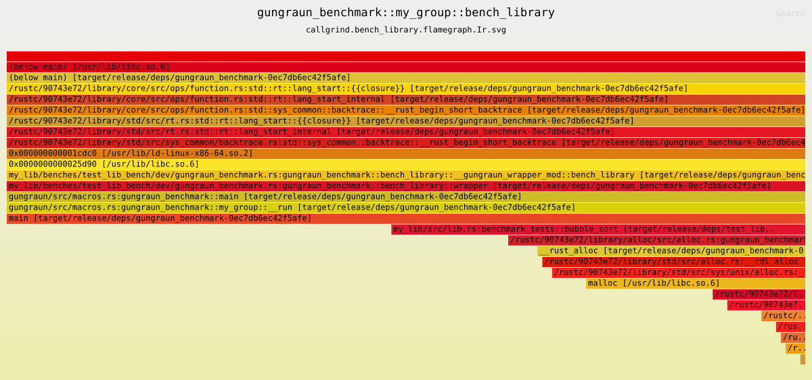
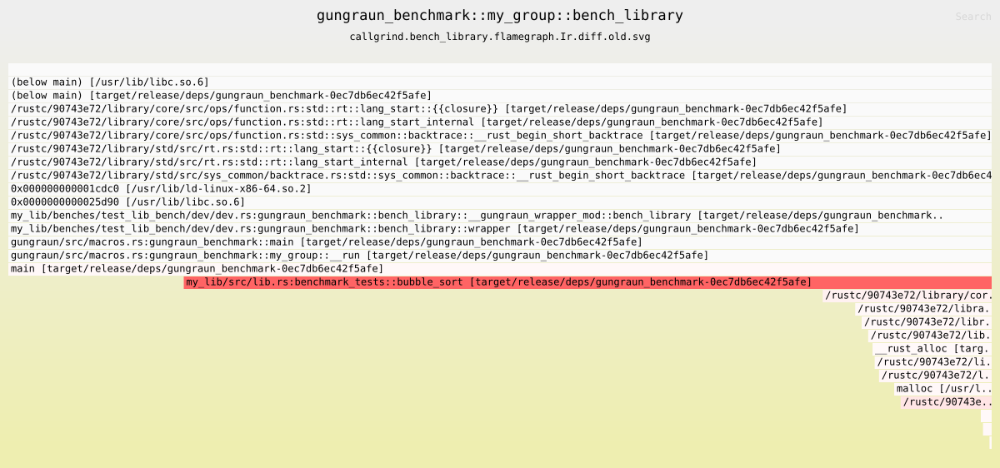

Introduction
Welcome to the Gungraun guide, your comprehensive resource for a one-shot
benchmarking harness and framework that leverages Valgrind’s powerful CPU,
cache, and memory profiling tools: Callgrind,
Cachegrind, and DHAT. Gungraun delivers
highly accurate and consistent measurements of Rust code, making it an ideal
choice for continuous integration (CI) environments. Its flexibility allows you
to access all Valgrind tools, even Memcheck, and use
Valgrind client requests effortlessly.
Gungraun is:
- Precise: High-precision measurements of
Instructioncounts and many other metrics allow you to reliably detect very small optimizations and regressions of your code. - Consistent: Gungraun can take accurate measurements even in virtualized CI environments and make them comparable between different systems completely negating the noise of the environment.
- Fast: Each benchmark is only run once, which is usually much faster than benchmarks which measure execution and wall-clock time. Benchmarks measuring the wall-clock time have to be run many times to increase their accuracy, detect outliers, filter out noise, etc.
- Visualizable: Gungraun generates a Callgrind (DHAT, …) profile of the
benchmarked code and can be configured to create flamegraph-like charts from
Callgrind metrics. In general, all Valgrind-compatible tools like
callgrind_annotate, kcachegrind or
dh_view.htmland others to analyze the results in detail are fully supported. - Easy: The API for setting up benchmarks is easy to use and allows you to quickly create concise and clear benchmarks. Focus more on profiling and your code than on the framework.
Design Philosophy and Goals
Gungraun benchmarks are designed to be runnable with cargo bench. The
benchmark files are expanded to a benchmarking harness which replaces the native
benchmark harness of rust. Gungraun is a profiling framework that can quickly
and reliably detect performance regressions and optimizations even in noisy
environments with a precision that is impossible to achieve with wall-clock time
based benchmarks. At the same time, we want to abstract the complicated parts
and repetitive tasks away and provide an easy to use and intuitive API. Gungraun
tries to stay out of your way so you can focus more on profiling and your code!
When Not to Use Gungraun
Although Gungraun is useful in many projects, there are cases where Gungraun is not a good fit.
- If you need only wall-clock times, Gungraun cannot help you much. The estimation of cpu cycles merely correlates to wall-clock times but is not a replacement for wall-clock times. The cycles estimation is primarily designed to be a relative metric to be used for comparison.
- Gungraun cannot be run on Windows and platforms not supported by Valgrind.
Pronunciation and Origin of the Word Gungraun
Like Valgrind, the name has its roots in old norse mythology and is a
composition of two words. The first is gungnir, Odin’s legendary spear, in the
sense of one shot (benchmark execution) and one hit never missing its target.
The second word is raun which simply means test.
The first syllable is pronounced like the english word gun. The second g is
silent. The last syllable raun can be pronounced like the english word rain.
Improving Gungraun
You want to improve the guide? You have an idea for a new feature, are missing a functionality or have found a bug? We would love to hear about it. You want to contribute and hack on Gungraun?
Please don’t hesitate to open an issue.
You want to hack on this guide? The source code of this book lives in the docs subdirectory.
Getting Help
Reach out to us on GitHub Discussions or open an Issue in the Gungraun Repository. Check the open and closed issues in the issue board, maybe you can already find a solution to your problem there.
The API documentation can be found on docs.rs, but you might also
want to check out the Troubleshooting section in the sidebar of this guide.
Prerequisites
In order to use Gungraun, you must have Valgrind installed. This means that Gungraun cannot be used on platforms that are not supported by Valgrind.
The default benchmarking tool is Callgrind and is in most cases perfectly
suited to do the job but if you want or need to use
Cachegrind instead of Callgrind you require Valgrind
version >= 3.22 and client requests (see below).
Debug Symbols
It’s required to run the Gungraun benchmarks with debugging symbols switched on.
For example in your ~/.cargo/config or your project’s Cargo.toml:
[profile.bench]
debug = true
Now, all benchmarks which are run with cargo bench include the debug symbols.
(See also Cargo Profiles and Cargo Config).
It’s required that settings like strip = true or other configuration options
stripping the debug symbols need to be disabled explicitly in the bench
profile if you have changed this option for the release profile. For example:
[profile.release]
strip = true
[profile.bench]
debug = true
strip = false
Valgrind Client Requests
If you want to make use of the Valgrind Client Requests
which are a re-export of the valgrind-requests package, you also need
libclang (clang >= 5.0) installed. See also the requirements of bindgen and
of cc.
More details on the usage and requirements of Valgrind Client Requests in
this chapter of the guide.
Installation of Valgrind
Gungraun is intentionally independent of a specific version of Valgrind.
However, Gungraun was only tested with versions of Valgrind >= 3.20.0. It is
therefore highly recommended to use a recent version of Valgrind. Also, if you
want or need to, building valgrind from source is usually a
straightforward process. Just make sure the valgrind binary is in your $PATH
so that Gungraun can find it. See installation in the CI for tips to
install Valgrind in the CI.
Installation of Valgrind with Your Package Manager
Alpine Linux
apk add valgrind
Arch Linux
pacman -Sy valgrind
Debian/Ubuntu
apt-get install valgrind
Fedora Linux
dnf install valgrind
FreeBSD
pkg install valgrind
Running Valgrind in Containers
If Valgrind cannot be installed directly on your host system or you want to
customize the Valgrind execution in a wrapper, you can use the
--valgrind-runner argument, for example to run Valgrind through a container
runtime like Docker or Podman.
For detailed instructions and more examples, see Running Valgrind with a Custom Runner.
Valgrind is Available for the Following Distributions

Gungraun
Gungraun is divided into the library gungraun and the benchmark runner
gungraun-runner.
Installation of the Library
To start with Gungraun, add the following to your Cargo.toml file:
[dev-dependencies]
gungraun = "0.19.2"
or run
cargo add --dev gungraun@0.19.2
See Benchmarking Best Practices for a more comprehensive installation guide.
Installation of the Benchmark Runner
To be able to run the benchmarks you’ll also need the gungraun-runner binary
installed somewhere in your $PATH. Otherwise, there is no need to interact
with gungraun-runner as it is just an implementation detail. However,
gungraun-runner understands the commands --help, -h and --version, -V.
From Source
cargo install --version 0.19.2 gungraun-runner
There’s also the possibility to install the binary somewhere else and point the
GUNGRAUN_RUNNER environment variable to the absolute path of the
gungraun-runner binary like so:
cargo install --version 0.19.2 --root /tmp gungraun-runner
GUNGRAUN_RUNNER=/tmp/bin/gungraun-runner cargo bench --bench my-bench
Binstall
The gungraun-runner binary is pre-built for most platforms supported by
Valgrind and easily installable with binstall
cargo binstall gungraun-runner@0.19.2
Updating
When updating the gungraun library, you’ll also need to update
gungraun-runner and vice-versa or else the benchmark runner will exit with an
error.
In the GitHub CI
For CI installation, see CI Installation.
CI Installation
Gungraun is designed to work in continuous integration environments. This page
covers how to install gungraun-runner and Valgrind in your CI pipeline.
Using the setup-gungraun GitHub Action (Recommended)
The setup-gungraun GitHub Action installs both
gungraun-runner and Valgrind on Linux runners. It automatically detects the
gungraun-runner version that matches your project’s gungraun library
dependency, so you don’t need to keep versions in sync manually.
Basic Usage
- name: Setup gungraun-runner and Valgrind
uses: gungraun/setup-gungraun@v1
By default, the action:
- Installs
gungraun-runnerwith the version matching yourgungraunlibrary dependency (triesbinstall, thenrelease, thensource) - Installs Valgrind (tries pre-built binaries from gungraun/valgrind-builder, then source, then system package manager)
- Installs
libcdebug symbols
Specifying a Runner Version
- name: Setup gungraun-runner 0.18.0 and Valgrind
uses: gungraun/setup-gungraun@v1
with:
runner-version: 0.18.0
The runner-version option accepts a semver version like 0.18.0, latest, or
auto (the default, which detects the version from Cargo.toml).
Skipping Valgrind Installation
If Valgrind is already available or you want to install it separately:
- name: Setup gungraun-runner only
uses: gungraun/setup-gungraun@v1
with:
valgrind-strategy: none
Building Valgrind from Source
- name: Setup gungraun-runner and Valgrind (from source)
uses: gungraun/setup-gungraun@v1
with:
valgrind-strategy: source
install-build-deps: true
Skipping Runner Installation
- name: Setup Valgrind only
uses: gungraun/setup-gungraun@v1
with:
runner-strategy: none
Custom Valgrind Build
- name: Setup gungraun-runner and Valgrind (custom binary)
uses: gungraun/setup-gungraun@v1
with:
valgrind-url: https://github.com/custom/valgrind-builder/valgrind-3.23.0-x86_64-linux.tar.gz
valgrind-sha-url: https://github.com/custom/valgrind-builder/valgrind-3.23.0-x86_64-linux.tar.gz.sha256
Manual Installation
If you prefer not to use the setup-gungraun action, you can install
gungraun-runner and Valgrind manually.
Installing gungraun-runner from Source
Since the gungraun-runner version must match the gungraun library version,
it’s best to automate this step in CI:
- name: Install gungraun-runner
run: |
version=$(cargo metadata --format-version=1 |\
jq '.packages[] | select(.name == "gungraun").version' |\
tr -d '"'
)
cargo install gungraun-runner --version $version
Installing gungraun-runner with binstall
Speed up installation by using binstall with the taiki-e/install-action:
- uses: taiki-e/install-action@cargo-binstall
- name: Install gungraun-runner
run: |
version=$(cargo metadata --format-version=1 |\
jq '.packages[] | select(.name == "gungraun").version' |\
tr -d '"'
)
cargo binstall --no-confirm gungraun-runner --version $version
Installing Valgrind
For manual Valgrind installation options, see Prerequisites.
Overview
Gungraun can be used to benchmark the library and binary of your project’s crates. Library and binary benchmarks are treated differently by Gungraun and cannot be intermixed in the same benchmark file. This is indeed a feature and helps keep things organized. Having different and multiple benchmark files for library and binary benchmarks is no problem for Gungraun and is usually a good idea anyway. Having benchmarks for different binaries in the same benchmark file however is fully supported.
Head over to the Quickstart section of library benchmarks if you want to start benchmarking your library functions or to the Quickstart section of binary benchmarks if you want to start benchmarking your crate’s binary (binaries) and see also Benchmarking Best Practices.
Binary Benchmarks vs Library Benchmarks
Almost all binary benchmarks can be written as library benchmarks. For example,
if you have a main.rs file of your binary, which basically looks like this
mod my_lib { pub fn run() {} }
use my_lib::run;
fn main() {
run();
}you could also choose to benchmark the library function my_lib::run in a
library benchmark instead of the binary in a binary benchmark. There’s no real
downside to either of the benchmark schemes and which scheme you want to use
heavily depends on the structure of your binary. As a maybe obvious rule of
thumb, micro-benchmarks of specific functions should go into library benchmarks
and macro-benchmarks into binary benchmarks. Generally, choose the closest
access point to the program point you actually want to benchmark.
You should always choose binary benchmarks over library benchmarks if you want to benchmark the behaviour of the executable if the input comes from a pipe since this feature is exclusive to binary benchmarks. See The Command’s stdin and simulating piped input for more.
Benchmarking Best Practices
This page describes best practices for writing benchmarks with Gungraun that produce accurate, meaningful, and reproducible results.
Use a Separate Workspace Member for Benchmarks
For library benchmarks, place your benchmarks in a separate workspace member
directory (for example, benchmarks/) rather than in the same crate as the code
being benchmarked.
Rust inlines functions freely within a crate but does not inline across crate
boundaries without explicit #[inline] attributes or link-time optimization
(LTO). This fundamental difference means in-crate benchmarks can present
significantly better performance than what users of your library will actually
experience.
This problem is not specific to Gungraun and it is generally a good idea to use a separate workspace member for benchmarks no matter the benchmarking framework.
Setting Up a Separate Benchmarks Crate
Create a workspace member for your benchmarks:
# `Cargo.toml` (workspace root of your crate `my_lib`)
[workspace]
members = ["benchmarks"]
# ...
# `benchmarks/Cargo.toml`
[package]
name = "benchmarks"
version = "0.1.0"
edition = "2024"
publish = false
[dependencies]
my_lib = { path = ".." }
[dev-dependencies]
gungraun = "0.19.2"
# Assuming there is a gungraun benchmark in `benchmarks/benches/gungraun.rs`
[[bench]]
harness = false
name = "gungraun"
path = "benches/gungraun.rs"
You can now run the benchmarks with cargo bench -p benchmarks or
cargo bench --workspace.
This approach avoids the inlining problem entirely and gives you measurements that reflect what users will observe. It also lets you use a different Rust version or profile settings for benchmarking than your main project requires.
Keep Benchmark Functions Clean
The body of your benchmark function should contain only the code you want to measure. Setup and teardown logic should be handled elsewhere to avoid attributing their costs to the function under test.
Gungraun provides built-in mechanisms for this:
extern crate gungraun;
fn process_data(data: Vec<u64>) -> u64 { data.len() as u64 }
use gungraun::prelude::*;
use std::hint::black_box;
fn expensive_setup(n: u64) -> Vec<u64> {
(0..n).collect()
}
#[library_benchmark]
#[bench::with_setup(args = [100], setup = expensive_setup)]
fn bench_processing(data: Vec<u64>) -> u64 {
black_box(process_data(black_box(data)))
}
library_benchmark_group!(name = my_group, benchmarks = bench_processing);
fn main() { main!(library_benchmark_groups = my_group); }See Setup and Teardown for the full range of options including teardown functions.
Use black_box Appropriately
Wrap values in std::hint::black_box to prevent the compiler
from optimizing away computations. As a general rule of thumb, you wrap all
input and output values:
extern crate gungraun;
fn expensive_computation(n: u64) -> u64 { n }
use gungraun::prelude::*;
use std::hint::black_box;
#[library_benchmark]
#[bench::low(5)]
fn bench_example(n: u64) -> u64 {
// Ensure `n` and `result` are used and not optimized away
black_box(expensive_computation(black_box(n)))
}
library_benchmark_group!(name = example, benchmarks = bench_example);
fn main() { main!(library_benchmark_groups = example); }Use a Sandbox When Feasible
Use a Sandbox for
benchmarks that read or write files if it is feasible for the benchmark. A
sandbox gives each benchmark run a temporary working directory with a more
stable path, removes files created during the run, and helps protect your
workspace from benchmarked code that creates, overwrites, or deletes files.
Sandboxing is not always the right fit. If a benchmark intentionally depends on workspace-relative paths or other external state, either copy the needed fixtures into the sandbox or leave sandboxing disabled for that benchmark.
Design for CI
Gungraun excels in CI environments because it produces consistent measurements even in noisy virtualized systems. To get the most from CI benchmarking:
- Use baselines to detect regressions across branches and runs
- Avoid benchmarks that depend on external state (network, filesystem timing, random seeds without fixed seeds)
See Regressions for configuring regression detection.
Understanding Your Metrics
Gungraun measures instruction counts, cache behavior, and estimated cycles. These correlate with but do not equal wall-clock time:
- Instruction counts are precise and portable across systems
- Cache simulation approximates real cache behavior
- Estimated cycles provide a rough wall-clock approximation
For user-perceived latency validation, combine Gungraun with wall-clock benchmarks like Criterion.rs. Use Gungraun for detecting regressions and microoptimizations; use wall-clock benchmarks for validating end-to-end performance claims.
Where to Go Next
- Library Benchmark Quickstart to start writing benchmarks
- Binary Benchmarks for benchmarking executables
- Regressions for regression checks for example in the CI
Library Benchmarks
You want to dive into benchmarking your library? Best start with the Quickstart section and then go through the examples in the other sections of this guide. If you need more examples see here
Important Default Behaviour
The environment variables are cleared before running a library benchmark. This
can be changed in the Configuration or via the
command-line arguments --env-clear and --envs.
Gungraun sometimes deviates from the Valgrind defaults which are:
| Gungraun | Valgrind (v3.23) |
|---|---|
--trace-children=yes | --trace-children=no |
--fair-sched=try | --fair-sched=no |
--separate-threads=yes | --separate-threads=no |
--cache-sim=yes | --cache-sim=no |
The thread and subprocess specific Valgrind options enable tracing threads and subprocesses basically but there’s usually some additional configuration necessary to trace the metrics of threads and subprocesses.
As shown in the table above, the benchmarks run with cache simulation switched on. This adds run time. If you don’t need the cache metrics and estimation of cycles, you can easily switch cache simulation off for example with:
#![allow(unused)]
fn main() {
extern crate gungraun;
use gungraun::prelude::*;
use gungraun::Callgrind;
LibraryBenchmarkConfig::default().tool(Callgrind::with_args(["--cache-sim=no"]));
}To switch off cache simulation for all benchmarks in the same file:
extern crate gungraun;
mod my_lib { pub fn fibonacci(a: u64) -> u64 { a } }
use gungraun::prelude::*;
use gungraun::Callgrind;
use std::hint::black_box;
#[library_benchmark]
fn bench_fibonacci() -> u64 {
black_box(my_lib::fibonacci(black_box(10)))
}
library_benchmark_group!(name = fibonacci_group, benchmarks = bench_fibonacci);
fn main() {
main!(
config = LibraryBenchmarkConfig::default()
.tool(Callgrind::with_args(["--cache-sim=no"])),
library_benchmark_groups = fibonacci_group
);
}Gungraun reports the cache hits and an estimation of cpu cycles:
test_lib_bench_readme_example_fibonacci::bench_fibonacci_group::bench_fibonacci short:10
Instructions: 1734|1734 (No change)
L1 Hits: 2359|2359 (No change)
LL Hits: 0|0 (No change)
RAM Hits: 3|3 (No change)
Total read+write: 2362|2362 (No change)
Estimated Cycles: 2464|2464 (No change)
Gungraun result: Ok. 1 without regressions; 0 regressed; 0 filtered; 1 benchmarks finished in 0.49333sIf you prefer cache misses over cache hits or just want both metrics displayed you can fully customize the Callgrind output format.
Quickstart
Create a file $WORKSPACE_ROOT/benches/library_benchmark.rs (for best results
use
Use a Separate Workspace Member for Benchmarks)
and add
[[bench]]
name = "library_benchmark"
harness = false
to your Cargo.toml. harness = false, tells cargo to not use the default
rust benchmarking harness which is important because Gungraun has an own
benchmarking harness.
Then copy the following content into this file:
extern crate gungraun;
use gungraun::prelude::*;
use std::hint::black_box;
fn fibonacci(n: u64) -> u64 {
match n {
0 => 1,
1 => 1,
n => fibonacci(n - 1) + fibonacci(n - 2),
}
}
#[library_benchmark]
#[bench::short(10)]
#[bench::long(30)]
fn bench_fibonacci(value: u64) -> u64 {
black_box(fibonacci(black_box(value)))
}
library_benchmark_group!(
name = bench_fibonacci_group,
benchmarks = bench_fibonacci
);
fn main() {
main!(library_benchmark_groups = bench_fibonacci_group);
}The gungraun::prelude contains the most important macro definitions and
structs. Now, that your first library benchmark is set up, you can run it with
cargo bench
and should see something like the below
library_benchmark::bench_fibonacci_group::bench_fibonacci short:10
Instructions: 1734|N/A (*********)
L1 Hits: 2359|N/A (*********)
LL Hits: 0|N/A (*********)
RAM Hits: 3|N/A (*********)
Total read+write: 2362|N/A (*********)
Estimated Cycles: 2464|N/A (*********)
library_benchmark::bench_fibonacci_group::bench_fibonacci long:30
Instructions: 26214734|N/A (*********)
L1 Hits: 35638616|N/A (*********)
LL Hits: 2|N/A (*********)
RAM Hits: 4|N/A (*********)
Total read+write: 35638622|N/A (*********)
Estimated Cycles: 35638766|N/A (*********)
Gungraun result: Ok. 2 without regressions; 0 regressed; 0 filtered; 2 benchmarks finished in 0.49333sIn addition, you’ll find the Callgrind output and the output of other Valgrind
tools in target/gungraun, if you want to investigate further with a tool like
callgrind_annotate etc.
When running the same benchmark again, the output will report the differences
between the current and the previous run. Say you’ve made change to the
fibonacci function, then you may see something like this:
library_benchmark::bench_fibonacci_group::bench_fibonacci short:10
Instructions: 2805|1734 (+61.7647%) [+1.61765x]
L1 Hits: 3815|2359 (+61.7211%) [+1.61721x]
LL Hits: 0|0 (No change)
RAM Hits: 3|3 (No change)
Total read+write: 3818|2362 (+61.6427%) [+1.61643x]
Estimated Cycles: 3920|2464 (+59.0909%) [+1.59091x]
library_benchmark::bench_fibonacci_group::bench_fibonacci long:30
Instructions: 16201597|26214734 (-38.1966%) [-1.61803x]
L1 Hits: 22025876|35638616 (-38.1966%) [-1.61803x]
LL Hits: 2|2 (No change)
RAM Hits: 4|4 (No change)
Total read+write: 22025882|35638622 (-38.1966%) [-1.61803x]
Estimated Cycles: 22026026|35638766 (-38.1964%) [-1.61803x]
Gungraun result: Ok. 2 without regressions; 0 regressed; 0 filtered; 2 benchmarks finished in 0.49333sStructure of a Library Benchmark
We’re reusing our example from the Quickstart section.
extern crate gungraun;
use gungraun::prelude::*;
use std::hint::black_box;
fn fibonacci(n: u64) -> u64 {
match n {
0 => 1,
1 => 1,
n => fibonacci(n - 1) + fibonacci(n - 2),
}
}
#[library_benchmark]
#[bench::short(10)]
#[bench::long(30)]
fn bench_fibonacci(value: u64) -> u64 {
black_box(fibonacci(black_box(value)))
}
library_benchmark_group!(
name = bench_fibonacci_group,
benchmarks = bench_fibonacci
);
fn main() {
main!(library_benchmark_groups = bench_fibonacci_group);
}First of all, you need a public function in your library which you want to
benchmark. In this example this is the fibonacci function which, for the sake
of simplicity, lives in the benchmark file itself but doesn’t have to. If it had
been located in my_lib::fibonacci, you simply import that function with
use my_lib::fibonacci and go on as shown above. Next, you need a
library_benchmark_group! in which you specify the names of the benchmark
functions. Finally, the benchmark harness is created by the main! macro.
The Benchmark Function
The benchmark function has to be annotated with the
#[library_benchmark] attribute. The #[bench]
attribute is an inner attribute of the #[library_benchmark] attribute. It
consists of a mandatory id (the ID part in #[bench::ID(/* ... */)]) and in
its most basic form, an optional list of arguments which are passed to the
benchmark function as parameters. Naturally, the parameters of the benchmark
function must match the parameter list of the #[bench] attribute. It is always
a good idea to return something from the benchmark function, here it is the
computed u64 value from the fibonacci function wrapped in a black_box. See
the docs of std::hint::black_box for more information about
its usage. Wrap both input and output values in black_box to prevent the
compiler from optimizing away computations.
The bench attribute takes any expression which includes function calls. The
following would have worked too and is one way to avoid the costs of the setup
code being attributed to the benchmarked function.
extern crate gungraun;
use gungraun::prelude::*;
use std::hint::black_box;
fn some_setup_func(value: u64) -> u64 {
value + 10
}
fn fibonacci(n: u64) -> u64 {
match n {
0 => 1,
1 => 1,
n => fibonacci(n - 1) + fibonacci(n - 2),
}
}
#[library_benchmark]
#[bench::short(10)]
// Note the usage of the `some_setup_func` in the argument list of this #[bench]
#[bench::long(some_setup_func(20))]
fn bench_fibonacci(value: u64) -> u64 {
black_box(fibonacci(black_box(value)))
}
library_benchmark_group!(
name = bench_fibonacci_group,
benchmarks = bench_fibonacci
);
fn main() {
main!(library_benchmark_groups = bench_fibonacci_group);
}The perhaps most crucial part in setting up library benchmarks is to keep the body of benchmark functions clean from any setup or teardown code. There are other ways to avoid setup and teardown code in the benchmark function, which are discussed in full detail in the setup and teardown section.
The Group
The benchmark functions to run, in this case only bench_fibonacci, need to be
specified in a library_benchmark_group! in the benchmarks parameter. You can
create as many groups as you like, and you can use it to organize related
benchmarks. Each group needs a unique name.
The main! Macro
Each group you want to be benchmarked needs to be specified in the
library_benchmark_groups parameter of the main! macro and you’re all set.
The Macros in More Detail
This section is a brief reference to all the macros available in library benchmarks. Feel free to come back here from other sections if you need a reference. For the complete documentation of each macro see the API documentation.
For the following examples it is assumed that there is a file lib.rs in a
crate named my_lib with the following content:
#![allow(unused)]
fn main() {
pub fn bubble_sort(mut array: Vec<i32>) -> Vec<i32> {
for i in 0..array.len() {
for j in 0..array.len() - i - 1 {
if array[j + 1] < array[j] {
array.swap(j, j + 1);
}
}
}
array
}
}The #[library_benchmark] Attribute
This attribute needs to be present on all benchmark functions specified in the
library_benchmark_group. The benchmark
function can then be further annotated with the inner
#[bench] or #[benches]
attributes.
extern crate gungraun;
mod my_lib { pub fn bubble_sort(value: Vec<i32>) -> Vec<i32> { value } }
use gungraun::prelude::*;
use std::hint::black_box;
#[library_benchmark]
#[bench::one(vec![1])]
#[benches::multiple(vec![1, 2], vec![1, 2, 3], vec![1, 2, 3, 4])]
fn bench_bubble_sort(values: Vec<i32>) -> Vec<i32> {
black_box(my_lib::bubble_sort(black_box(values)))
}
library_benchmark_group!(name = bubble_sort_group, benchmarks = bench_bubble_sort);
fn main() {
main!(library_benchmark_groups = bubble_sort_group);
}The following parameters are accepted:
config: Takes aLibraryBenchmarkConfigsetup: A global setup function which is applied to all following#[bench]and#[benches]attributes if not overwritten by asetupparameter of these attributes.teardown: Similar tosetupbut takes a globalteardownfunction.
extern crate gungraun;
mod my_lib { pub fn bubble_sort(value: Vec<i32>) -> Vec<i32> { value } }
use gungraun::prelude::*;
use gungraun::OutputFormat;
use std::hint::black_box;
#[library_benchmark(
config = LibraryBenchmarkConfig::default()
.output_format(OutputFormat::default()
.truncate_description(None)
)
)]
#[bench::one(vec![1])]
fn bench_bubble_sort(values: Vec<i32>) -> Vec<i32> {
black_box(my_lib::bubble_sort(black_box(values)))
}
library_benchmark_group!(name = bubble_sort_group, benchmarks = bench_bubble_sort);
fn main() {
main!(library_benchmark_groups = bubble_sort_group);
}The #[bench] Attribute
The basic structure is #[bench::some_id(/* parameters */)]. The part after the
:: must be an id unique within the same #[library_benchmark]. This attribute
accepts the following parameters:
args: A tuple with a list of arguments which are passed to the benchmark function. The parentheses also need to be present if there is only a single argument (#[bench::my_id(args = (10))]).consts: A tuple with const expressions for const generic parameters of the benchmark function. The number and order must match the const generics in the function signature. Otherwise, the function signature may contain other parameters in any order like lifetimes and type parameters. Parentheses are required:consts = (321)for a single const generic,consts = (321, 654)for multiple. Const expressions likeconsts = ({ 1 + 20 })are also supported.config: Accepts aLibraryBenchmarkConfigsetup: A function which takes the arguments specified in theargsparameter and passes its return value to the benchmark function.teardown: A function which takes the return value of the benchmark function.
If no other parameters besides args are present you can simply pass the
arguments as a list of values. So, instead of
#[bench::my_id(args = (10, 20))], you could also use the shorter
#[bench::my_id(10, 20)].
extern crate gungraun;
mod my_lib { pub fn bubble_sort(value: Vec<i32>) -> Vec<i32> { value } }
use gungraun::prelude::*;
use std::hint::black_box;
// This function is used to create a worst case array we want to sort with our implementation of
// bubble sort
pub fn worst_case(start: i32) -> Vec<i32> {
if start.is_negative() {
(start..0).rev().collect()
} else {
(0..start).rev().collect()
}
}
#[library_benchmark]
#[bench::one(vec![1])]
#[bench::worst_two(args = (vec![2, 1]))]
#[bench::worst_four(args = (4), setup = worst_case)]
fn bench_bubble_sort(value: Vec<i32>) -> Vec<i32> {
black_box(my_lib::bubble_sort(black_box(value)))
}
library_benchmark_group!(name = bubble_sort_group, benchmarks = bench_bubble_sort);
fn main() {
main!(library_benchmark_groups = bubble_sort_group);
}The #[benches] Attribute
This attribute is used to specify multiple benchmarks. It accepts the same
parameters as the #[bench] attribute: args,
config, setup, teardown, consts and additionally the iter and file
parameters which are explained in full detail in
Specifying Multiple Benchmarks at Once. In contrast to
the args parameter in #[bench], args takes an
array of arguments.
extern crate gungraun;
mod my_lib { pub fn bubble_sort(value: Vec<i32>) -> Vec<i32> { value } }
use gungraun::prelude::*;
use std::hint::black_box;
pub fn worst_case(start: i32) -> Vec<i32> {
if start.is_negative() {
(start..0).rev().collect()
} else {
(0..start).rev().collect()
}
}
#[library_benchmark]
#[benches::worst_two_and_three(args = [vec![2, 1], vec![3, 2, 1]])]
#[benches::worst_four_to_nine(args = [4, 5, 6, 7, 8, 9], setup = worst_case)]
fn bench_bubble_sort(value: Vec<i32>) -> Vec<i32> {
black_box(my_lib::bubble_sort(black_box(value)))
}
library_benchmark_group!(name = bubble_sort_group, benchmarks = bench_bubble_sort);
fn main() {
main!(library_benchmark_groups = bubble_sort_group);
}Similarly, consts takes an array of const expressions. If the amount of args
and consts elements don’t match then the last element of the parameter with
the lower amount of elements is repeated:
extern crate gungraun;
mod my_lib {
pub fn create_buffer<const SIZE: usize, T>(_: T) -> Vec<Vec<u8>> {
Vec::with_capacity(SIZE)
}
}
use gungraun::prelude::*;
use std::hint::black_box;
#[library_benchmark]
// This creates three benchmarks with args "foo" repeated and the three consts
#[benches::small(args = ["foo"], consts = [10, 50, 100])]
// This creates two benchmarks with args "foo" and "baz" and the consts `10000`
// repeated
#[benches::big(args = ["bar", "baz"], consts = [10000])]
fn bench_buffer<const SIZE: usize, T>(arg_t: T) -> Vec<Vec<u8>>
where T: std::fmt::Display {
black_box(my_lib::create_buffer::<SIZE, T>(black_box(arg_t)))
}
library_benchmark_group!(name = my_group, benchmarks = bench_buffer);
fn main() {
main!(library_benchmark_groups = my_group);
}The library_benchmark_group! Macro
The library_benchmark_group macro accepts the following parameters (in this
order and separated by a comma):
name(mandatory): A unique name used to identify the group for themain!macroconfig(optional): ALibraryBenchmarkConfigwhich is applied to all benchmarks within the same group.compare_by_id(optional): The default is false. If true, all benches in the benchmark functions specified in thebenchmarksparameter are compared with each other as long as the ids (the part after the::in#[bench::id(...)]) match. See also Comparing benchmark functionsmax_parallel(optional): The default is no limit. If set,0means no limit (same as not specifying),1disables parallel execution for this group, and values>= 2limit the maximum number of parallel benchmarks. This option only has an effect when parallel execution is enabled via--parallelorGUNGRAUN_PARALLEL. See Running Benchmarks in Parallel for more details.setup(optional): A setup function or any valid expression which is run before all benchmarks of this groupteardown(optional): A teardown function or any valid expression which is run after all benchmarks of this groupbenchmarks(mandatory): An array of names of benchmark functions annotated with#[library_benchmark]. Multiple names use the array-syntax (benchmarks = [bench_1, bench_2]). For convenience a single function name can be specified without brackets (benchmarks = bench_1).
Note the setup and teardown parameters are different to the ones of
#[library_benchmark], #[bench] and #[benches]. They accept an expression
or function call as in setup = group_setup_function(). Also, these setup and
teardown functions are not overridden by the ones from any of the before
mentioned attributes.
The main! Macro
This macro is the entry point for Gungraun and creates the benchmark harness. It accepts the following top-level arguments in this order (separated by a comma):
config(optional): Optionally specify aLibraryBenchmarkConfigsetup(optional): A setup function or any valid expression which is run before all benchmarksteardown(optional): A setup function or any valid expression which is run after all benchmarkslibrary_benchmark_groups(mandatory): The names of one or more library benchmark groups. Multiple names use the array-syntax (library_benchmark_groups = [group_1, group_2]). A single group can be specified without brackets (library_benchmark_groups = group_1).
Like the setup and teardown of the
library_benchmark_group, these
parameters accept an expression and are not overridden by the setup and
teardown of the library_benchmark_group, #[library_benchmark], #[bench]
or #[benches] attribute.
Setup and Teardown
setup and teardown are fundamental in library benchmarks. The benchmark
functions need to be as clean as possible and almost always only contain the
call to the function from your library that you want to benchmark.
Setup
In an ideal world you don’t need any setup code, and you can pass arguments to the function as they are.
But, for example if a function expects a File and not a &str with the path
to the file you need setup code. Gungraun has an easy-to-use system in place
to allow you to run any setup code before the function is executed and this
setup code is not attributed to the metrics of the benchmark.
If the setup parameter is specified, the setup function takes the arguments
from the #[bench] (or #[benches]) attributes and the benchmark function
receives the return value of the setup function as parameter. This is a small
indirection with great effect. The effect is best shown with an example:
extern crate gungraun;
mod my_lib { pub fn count_bytes_fast(_file: std::fs::File) -> u64 { 1 } }
use gungraun::prelude::*;
use std::hint::black_box;
use std::path::PathBuf;
use std::fs::File;
fn open_file(path: &str) -> File {
File::open(path).unwrap()
}
#[library_benchmark]
#[bench::first(args = ("path/to/file"), setup = open_file)]
fn count_bytes_fast(file: File) -> u64 {
black_box(my_lib::count_bytes_fast(black_box(file)))
}
library_benchmark_group!(name = my_group, benchmarks = count_bytes_fast);
fn main() {
main!(library_benchmark_groups = my_group);
}You can see the effect of using a setup function in the output of the benchmark.
Assume the above benchmark is in a file benches/my_benchmark.rs, then running
GUNGRAUN_NOCAPTURE=true cargo bench
results in the benchmark output like below.
my_benchmark::my_group::count_bytes_fast first:open_file("path/to/file")
Instructions: 1630162|N/A (*********)
L1 Hits: 2507933|N/A (*********)
LL Hits: 2|N/A (*********)
RAM Hits: 11|N/A (*********)
Total read+write: 2507946|N/A (*********)
Estimated Cycles: 2508328|N/A (*********)
Gungraun result: Ok. 1 without regressions; 0 regressed; 0 filtered; 1 benchmarks finished in 0.49333sThe description in the headline contains open_file("path/to/file"), your setup
function open_file with the value of the parameter it is called with.
If you need to specify the same setup function for all (or almost all)
#[bench] and #[benches] in a #[library_benchmark] you can use the setup
parameter of the #[library_benchmark]:
extern crate gungraun;
mod my_lib { pub fn count_bytes_fast(_file: std::fs::File) -> u64 { 1 } }
use gungraun::prelude::*;
use std::hint::black_box;
use std::path::PathBuf;
use std::fs::File;
use std::io::{Seek, SeekFrom};
fn open_file(path: &str) -> File {
File::open(path).unwrap()
}
fn open_file_with_offset(path: &str, offset: u64) -> File {
let mut file = File::open(path).unwrap();
file.seek(SeekFrom::Start(offset)).unwrap();
file
}
#[library_benchmark(setup = open_file)]
#[bench::small("path/to/small")]
#[bench::big("path/to/big")]
#[bench::with_offset(args = ("path/to/big", 100), setup = open_file_with_offset)]
fn count_bytes_fast(file: File) -> u64 {
black_box(my_lib::count_bytes_fast(black_box(file)))
}
library_benchmark_group!(name = my_group, benchmarks = count_bytes_fast);
fn main() {
main!(library_benchmark_groups = my_group);
}The above will use the open_file function in the small and big benchmarks
and the open_file_with_offset function in the with_offset benchmark.
Teardown
What about teardown and why should you use it? Usually the teardown isn’t
needed but for example if you intend to make the result from the benchmark
visible in the benchmark output, the teardown is the perfect place to do so.
The teardown function takes the return value of the benchmark function as its
argument:
extern crate gungraun;
mod my_lib { pub fn count_bytes_fast(_file: std::fs::File) -> u64 { 1 } }
use gungraun::prelude::*;
use std::hint::black_box;
use std::path::PathBuf;
use std::fs::File;
fn open_file(path: &str) -> File {
File::open(path).unwrap()
}
fn print_bytes_read(num_bytes: u64) {
println!("bytes read: {num_bytes}");
}
#[library_benchmark]
#[bench::first(
args = ("path/to/big"),
setup = open_file,
teardown = print_bytes_read
)]
fn count_bytes_fast(file: File) -> u64 {
black_box(my_lib::count_bytes_fast(black_box(file)))
}
library_benchmark_group!(name = my_group, benchmarks = count_bytes_fast);
fn main() {
main!(library_benchmark_groups = my_group);
}Note Gungraun captures all output by default. To see the output of the
benchmark, setup and teardown functions, it is required to run the
benchmarks with the flag --nocapture or set the environment variable
GUNGRAUN_NOCAPTURE=true. Assume the above benchmark is in a file
benches/my_benchmark.rs, then running
GUNGRAUN_NOCAPTURE=true cargo bench
results in output like the below
my_benchmark::my_group::count_bytes_fast first:open_file("path/to/big")
bytes read: 25078
- end of stdout/stderr
Instructions: 1630162|N/A (*********)
L1 Hits: 2507931|N/A (*********)
LL Hits: 2|N/A (*********)
RAM Hits: 13|N/A (*********)
Total read+write: 2507946|N/A (*********)
Estimated Cycles: 2508396|N/A (*********)
Gungraun result: Ok. 1 without regressions; 0 regressed; 0 filtered; 1 benchmarks finished in 0.49333sThe output of the teardown function is now visible in the benchmark output
above the - end of stdout/stderr line.
Specifying Multiple Benches at Once
Multiple benches can be specified at once with the
#[benches] attribute.
The #[benches] Attribute in More Detail
Start with an example:
extern crate gungraun;
mod my_lib { pub fn bubble_sort(value: Vec<i32>) -> Vec<i32> { value } }
use gungraun::prelude::*;
use std::hint::black_box;
use my_lib::bubble_sort;
fn setup_worst_case_array(start: i32) -> Vec<i32> {
if start.is_negative() {
(start..0).rev().collect()
} else {
(0..start).rev().collect()
}
}
#[library_benchmark]
#[benches::multiple(vec![1], vec![5])]
#[benches::with_setup(args = [1, 5], setup = setup_worst_case_array)]
fn bench_bubble_sort_with_benches_attribute(input: Vec<i32>) -> Vec<i32> {
black_box(bubble_sort(black_box(input)))
}
library_benchmark_group!(name = my_group, benchmarks = bench_bubble_sort_with_benches_attribute);
fn main () {
main!(library_benchmark_groups = my_group);
}Usually the arguments are passed directly to the benchmarking function as it
can be seen in the #[benches::multiple(/* arguments */)] case. In
#[benches::with_setup(/* ... */)], the arguments are passed to the setup
function instead. The above #[library_benchmark] is roughly the same as
extern crate gungraun;
mod my_lib { pub fn bubble_sort(value: Vec<i32>) -> Vec<i32> { value } }
use gungraun::prelude::*;
use std::hint::black_box;
use my_lib::bubble_sort;
fn setup_worst_case_array(start: i32) -> Vec<i32> {
if start.is_negative() {
(start..0).rev().collect()
} else {
(0..start).rev().collect()
}
}
#[library_benchmark]
#[bench::multiple_0(vec![1])]
#[bench::multiple_1(vec![5])]
#[bench::with_setup_0(setup_worst_case_array(1))]
#[bench::with_setup_1(setup_worst_case_array(5))]
fn bench_bubble_sort_with_benches_attribute(input: Vec<i32>) -> Vec<i32> {
black_box(bubble_sort(black_box(input)))
}
library_benchmark_group!(name = my_group, benchmarks = bench_bubble_sort_with_benches_attribute);
fn main () {
main!(library_benchmark_groups = my_group);
}but a lot more concise especially if a lot of values are passed to the same
setup function.
The iter parameter
Specifying a lot of benchmarks with args (args = [1, 2, 3, 4, 5, 6, 7] and so
on) can be cumbersome. Gungraun supports creating multiple benchmarks from an
iterator, more precisely anything that implements IntoIterator from the
standard library. Each element of the iterator creates a separate benchmark
case. For example creating multiple benchmarks from a range:
extern crate gungraun;
mod my_lib { pub fn u64_to_string(input: u64) -> String { "1".to_owned() } }
use gungraun::prelude::*;
use std::hint::black_box;
#[library_benchmark]
#[benches::from_iter(iter = 0..10)]
fn some_bench(input: u64) -> String {
black_box(my_lib::u64_to_string(black_box(input)))
}
library_benchmark_group!(name = my_group, benchmarks = some_bench);
fn main() {
main!(library_benchmark_groups = my_group);
}or reading a directory with benchmark fixtures and each returned path is a separate benchmark.
extern crate gungraun;
mod my_lib { pub fn count_lines_fast(_path: std::path::PathBuf) -> usize { 0 } }
use std::hint::black_box;
use std::path::PathBuf;
use gungraun::prelude::*;
fn read_dir() -> Vec<PathBuf> {
std::fs::read_dir("benches/fixtures")
.unwrap()
.map(|d| d.unwrap().path())
.collect()
}
#[library_benchmark]
#[benches::from_iter(iter = read_dir())]
fn bench_count_lines_fast(path: PathBuf) -> usize {
black_box(my_lib::count_lines_fast(black_box(path)))
}
library_benchmark_group!(name = my_group, benchmarks = bench_count_lines_fast);
fn main() {
main!(library_benchmark_groups = my_group);
}The file parameter
Reading inputs from a file allows for example sharing the same inputs between
different benchmarking frameworks like criterion or if you simply have a long
list of inputs you might find it more convenient to read them from a file.
The file parameter, exclusive to the #[benches] attribute, does exactly that
and reads the specified file line by line creating a benchmark from each line.
The line is passed to the benchmark function as String or if the setup
parameter is also present to the setup function. A small example assuming you
have a file benches/inputs (relative paths are interpreted to the workspace
root) with the following content
1
11
111
then
extern crate gungraun;
mod my_lib { pub fn string_to_u64(value: String) -> Result<u64, String> { Ok(1) } }
use gungraun::prelude::*;
use std::hint::black_box;
#[library_benchmark]
#[benches::from_file(file = "benches/inputs")]
fn some_bench(line: String) -> Result<u64, String> {
black_box(my_lib::string_to_u64(black_box(line)))
}
library_benchmark_group!(name = my_group, benchmarks = some_bench);
fn main() {
main!(library_benchmark_groups = my_group);
}The above is roughly equivalent to the following but with the args parameter
extern crate gungraun;
mod my_lib { pub fn string_to_u64(value: String) -> Result<u64, String> { Ok(1) } }
use gungraun::prelude::*;
use std::hint::black_box;
#[library_benchmark]
#[benches::from_args(args = [1.to_string(), 11.to_string(), 111.to_string()])]
fn some_bench(line: String) -> Result<u64, String> {
black_box(my_lib::string_to_u64(black_box(line)))
}
library_benchmark_group!(name = my_group, benchmarks = some_bench);
fn main() {
main!(library_benchmark_groups = my_group);
}The true power of the file parameter comes with the setup function because
you can format the lines in the file as you like and convert each line in the
setup function to the format as you need it in the benchmark. For example if
you decided to go with a csv like format in the file benches/inputs
255;255;255
0;0;0
and your library has a function which converts from RGB to HSV color space:
extern crate gungraun;
mod my_lib { pub fn rgb_to_hsv(a: u8, b: u8, c:u8) -> (u16, u8, u8) { (a.into(), b, c) } }
use gungraun::prelude::*;
use std::hint::black_box;
fn decode_line(line: String) -> (u8, u8, u8) {
if let &[a, b, c] = line.split(";")
.map(|s| s.parse::<u8>().unwrap())
.collect::<Vec<u8>>()
.as_slice()
{
(a, b, c)
} else {
panic!("Wrong input format in line '{line}'");
}
}
#[library_benchmark]
#[benches::from_file(file = "benches/inputs", setup = decode_line)]
fn some_bench((a, b, c): (u8, u8, u8)) -> (u16, u8, u8) {
black_box(my_lib::rgb_to_hsv(black_box(a), black_box(b), black_box(c)))
}
library_benchmark_group!(name = my_group, benchmarks = some_bench);
fn main() {
main!(library_benchmark_groups = my_group);
}The consts parameter
When benchmarking functions with const generic parameters, use the consts
parameter to specify the const values. With #[benches], multiple const values
can specified the same way as the args parameter:
extern crate gungraun;
mod my_lib { pub fn create_buffer(_: usize) -> Vec<u8> { vec![] } }
use gungraun::prelude::*;
use std::hint::black_box;
#[library_benchmark]
#[benches::sizes(consts = [256, 512, 1024, 2048])]
fn bench_multiple_sizes<const SIZE: usize>() -> Vec<u8> {
black_box(my_lib::create_buffer(black_box(SIZE)))
}
library_benchmark_group!(name = my_group, benchmarks = bench_multiple_sizes);
fn main() {
main!(library_benchmark_groups = my_group);
}You can combine args and consts. When args has more elements than
consts, the last consts value repeats. Conversely when consts has more
elements the last args value repeats:
extern crate gungraun;
mod my_lib { pub fn process(_: i32, _: usize) -> i32 { 0 } }
use gungraun::prelude::*;
use std::hint::black_box;
#[library_benchmark]
#[benches::combined(args = [1, 2, 3], consts = [256, 512])]
fn bench_args_and_const<const SIZE: usize>(value: i32) -> i32 {
// Creates:
// - (SIZE=256, value=1)
// - (SIZE=512, value=2)
// - (SIZE=512, value=3) <- last consts repeats
black_box(my_lib::process(black_box(value), black_box(SIZE)))
}
library_benchmark_group!(name = my_group, benchmarks = bench_args_and_const);
fn main() {
main!(library_benchmark_groups = my_group);
}Const expressions are also supported, so consts = ({ 1 + 20 }) works.
Generic Benchmark Functions
Benchmark functions can be generic. And setup and teardown functions, too.
There’s actually not much more to say about it since generic benchmark (setup
and teardown) functions behave exactly the same way as you would expect it
from any other generic function apart from const parameters which are
explained in Const Generic Parameters below.
However, there is a common pitfall. If you have a function
count_lines_in_file_fast which expects as parameter a PathBuf and although
it is convenient especially when you have to specify many paths, don’t do this:
extern crate gungraun;
mod my_lib { pub fn count_lines_in_file_fast(_path: std::path::PathBuf) -> u64 { 1 } }
use gungraun::prelude::*;
use std::hint::black_box;
use std::path::PathBuf;
#[library_benchmark]
#[bench::first("path/to/file")]
fn generic_bench<T>(path: T) -> u64 where T: Into<PathBuf> {
black_box(my_lib::count_lines_in_file_fast(black_box(path.into())))
}
library_benchmark_group!(name = my_group, benchmarks = generic_bench);
fn main() {
main!(library_benchmark_groups = my_group);
}Since path.into() is called in the benchmark function itself, the conversion
from a &str to a PathBuf is attributed to the benchmark metrics. This is
almost never what you intended. You should instead convert the argument to a
PathBuf in a generic setup function like that:
extern crate gungraun;
mod my_lib { pub fn count_lines_in_file_fast(_path: std::path::PathBuf) -> u64 { 1 } }
use gungraun::prelude::*;
use std::hint::black_box;
use std::path::PathBuf;
fn convert_to_pathbuf<T>(path: T) -> PathBuf where T: Into<PathBuf> {
path.into()
}
#[library_benchmark]
#[bench::first(args = ("path/to/file"), setup = convert_to_pathbuf)]
fn not_generic_anymore(path: PathBuf) -> u64 {
black_box(my_lib::count_lines_in_file_fast(black_box(path)))
}
library_benchmark_group!(name = my_group, benchmarks = not_generic_anymore);
fn main() {
main!(library_benchmark_groups = my_group);
}That way you can still enjoy the convenience to use string literals instead of
PathBuf in your #[bench] (or #[benches]) arguments and have clean
benchmark metrics.
Const Generic Parameters
For benchmark functions with const generic parameters, use the consts
parameter in #[bench] and #[benches] to specify the const values. The syntax
is the same as for the args parameter:
extern crate gungraun;
mod my_lib { pub fn create_buffer(_: usize) -> Vec<u8> { vec![] } }
use gungraun::prelude::*;
use std::hint::black_box;
#[library_benchmark]
#[bench::small(consts = (100))]
#[bench::medium(consts = (1000))]
#[bench::large(consts = (10000))]
// or multiple consts
#[benches::multiple(consts = [200, 2000, 20000])]
fn bench_buffer<const SIZE: usize>() -> Vec<u8> {
black_box(my_lib::create_buffer(black_box(SIZE)))
}
library_benchmark_group!(
name = my_group,
benchmarks = [bench_buffer]
);
fn main() {
main!(library_benchmark_groups = my_group);
}For functions with multiple const generics:
extern crate gungraun;
mod my_lib { pub fn create_matrix(_: usize, _: usize) -> Vec<Vec<u8>> {
vec![] }
}
use gungraun::prelude::*;
use std::hint::black_box;
#[library_benchmark]
#[bench::small_matrix(consts = (10, 10))]
#[bench::wide_matrix(consts = (5, 20))]
fn bench_matrix<const ROWS: usize, const COLS: usize>() -> Vec<Vec<u8>> {
black_box(my_lib::create_matrix(black_box(ROWS), black_box(COLS)))
}
library_benchmark_group!(name = my_group, benchmarks = bench_matrix);
fn main() {
main!(library_benchmark_groups = my_group);
}Const expressions like consts = ({ 1 + 20 }) are also supported. You can
combine args and consts to benchmark with both regular arguments and const
generics. See
Specifying Multiple Benches at Once
for more details.
const parameters can be combined freely in any order with lifetime and type
parameters in the benchmark function signature:
extern crate gungraun;
mod my_lib {
pub fn create_buffer<const SIZE: usize, T>(_: T) -> Vec<Vec<u8>> {
Vec::with_capacity(SIZE)
}
}
use gungraun::prelude::*;
use std::hint::black_box;
#[library_benchmark]
#[bench::small(args = ("foo"), consts = (10))]
#[bench::big(args = ("bar"), consts = (10000))]
fn bench_buffer<const SIZE: usize, T>(arg_t: T) -> Vec<Vec<u8>>
where T: std::fmt::Display {
black_box(my_lib::create_buffer::<SIZE, T>(black_box(arg_t)))
}
library_benchmark_group!(name = my_group, benchmarks = bench_buffer);
fn main() {
main!(library_benchmark_groups = my_group);
}Comparing Benchmark Functions
Comparing benchmark functions is supported via the optional
library_benchmark_group! argument compare_by_id (The default value for
compare_by_id is false). Only benches with the same id are compared, which
allows you to single out cases which don’t need to be compared. In the following
example, the case_3 and multiple bench are compared with each other in
addition to the usual comparison with the previous run:
extern crate gungraun;
mod my_lib { pub fn bubble_sort(_: Vec<i32>) -> Vec<i32> { vec![] } }
use gungraun::prelude::*;
use std::hint::black_box;
#[library_benchmark]
#[bench::case_3(vec![1, 2, 3])]
#[benches::multiple(args = [vec![1, 2], vec![1, 2, 3, 4]])]
fn bench_bubble_sort_best_case(input: Vec<i32>) -> Vec<i32> {
black_box(my_lib::bubble_sort(black_box(input)))
}
#[library_benchmark]
#[bench::case_3(vec![3, 2, 1])]
#[benches::multiple(args = [vec![2, 1], vec![4, 3, 2, 1]])]
fn bench_bubble_sort_worst_case(input: Vec<i32>) -> Vec<i32> {
black_box(my_lib::bubble_sort(black_box(input)))
}
library_benchmark_group!(
name = bench_bubble_sort,
compare_by_id = true,
benchmarks = [
bench_bubble_sort_best_case,
bench_bubble_sort_worst_case
]
);
fn main() {
main!(library_benchmark_groups = bench_bubble_sort);
}Note if compare_by_id is true, all benchmark functions are compared with
each other, so you are not limited to two benchmark functions per comparison
group.
Here’s the benchmark output of the above example to see what is happening:
my_benchmark::bubble_sort_group::bubble_sort_best_case case_2:vec! [1, 2]
Instructions: 63|N/A (*********)
L1 Hits: 86|N/A (*********)
LL Hits: 1|N/A (*********)
RAM Hits: 4|N/A (*********)
Total read+write: 91|N/A (*********)
Estimated Cycles: 231|N/A (*********)
my_benchmark::bubble_sort_group::bubble_sort_best_case multiple_0:vec! [1, 2, 3]
Instructions: 94|N/A (*********)
L1 Hits: 123|N/A (*********)
LL Hits: 1|N/A (*********)
RAM Hits: 4|N/A (*********)
Total read+write: 128|N/A (*********)
Estimated Cycles: 268|N/A (*********)
my_benchmark::bubble_sort_group::bubble_sort_best_case multiple_1:vec! [1, 2, 3, 4]
Instructions: 136|N/A (*********)
L1 Hits: 174|N/A (*********)
LL Hits: 1|N/A (*********)
RAM Hits: 4|N/A (*********)
Total read+write: 179|N/A (*********)
Estimated Cycles: 319|N/A (*********)
my_benchmark::bubble_sort_group::bubble_sort_worst_case case_2:vec! [2, 1]
Instructions: 66|N/A (*********)
L1 Hits: 91|N/A (*********)
LL Hits: 1|N/A (*********)
RAM Hits: 4|N/A (*********)
Total read+write: 96|N/A (*********)
Estimated Cycles: 236|N/A (*********)
Comparison with bubble_sort_best_case case_2:vec! [1, 2]
Instructions: 63|66 (-4.54545%) [-1.04762x]
L1 Hits: 86|91 (-5.49451%) [-1.05814x]
LL Hits: 1|1 (No change)
RAM Hits: 4|4 (No change)
Total read+write: 91|96 (-5.20833%) [-1.05495x]
Estimated Cycles: 231|236 (-2.11864%) [-1.02165x]
my_benchmark::bubble_sort_group::bubble_sort_worst_case multiple_0:vec! [3, 2, 1]
Instructions: 103|N/A (*********)
L1 Hits: 138|N/A (*********)
LL Hits: 1|N/A (*********)
RAM Hits: 4|N/A (*********)
Total read+write: 143|N/A (*********)
Estimated Cycles: 283|N/A (*********)
Comparison with bubble_sort_best_case multiple_0:vec! [1, 2, 3]
Instructions: 94|103 (-8.73786%) [-1.09574x]
L1 Hits: 123|138 (-10.8696%) [-1.12195x]
LL Hits: 1|1 (No change)
RAM Hits: 4|4 (No change)
Total read+write: 128|143 (-10.4895%) [-1.11719x]
Estimated Cycles: 268|283 (-5.30035%) [-1.05597x]
my_benchmark::bubble_sort_group::bubble_sort_worst_case multiple_1:vec! [4, 3, 2, 1]
Instructions: 154|N/A (*********)
L1 Hits: 204|N/A (*********)
LL Hits: 1|N/A (*********)
RAM Hits: 4|N/A (*********)
Total read+write: 209|N/A (*********)
Estimated Cycles: 349|N/A (*********)
Comparison with bubble_sort_best_case multiple_1:vec! [1, 2, 3, 4]
Instructions: 136|154 (-11.6883%) [-1.13235x]
L1 Hits: 174|204 (-14.7059%) [-1.17241x]
LL Hits: 1|1 (No change)
RAM Hits: 4|4 (No change)
Total read+write: 179|209 (-14.3541%) [-1.16760x]
Estimated Cycles: 319|349 (-8.59599%) [-1.09404x]
Gungraun result: Ok. 6 without regressions; 0 regressed; 0 filtered; 6 benchmarks finished in 1.58123sThe procedure of the comparison algorithm:
- Run all benches in the first benchmark function
- Run the first bench in the second benchmark function and if there is a bench in the first benchmark function with the same id compare them
- Run the second bench in the second benchmark function …
- …
- Run the first bench in the third benchmark function and if there is a bench in the first benchmark function with the same id compare them. If there is a bench with the same id in the second benchmark function compare them.
- Run the second bench in the third benchmark function …
- and so on … until all benches are compared with each other
Neither the order nor the amount of benches within the benchmark functions matters, so it is not strictly necessary to mirror the bench ids of the first benchmark function in the second, third, etc. benchmark function.
Configuration
Library benchmarks can be configured with the LibraryBenchmarkConfig and
with
Command-line arguments and Environment variables.
The LibraryBenchmarkConfig can be specified at different levels and sets the
configuration values for the same and lower levels. The values of the
LibraryBenchmarkConfig at higher levels can be overridden at a lower level.
Note that some values are additive rather than substitutive. Please see the docs
of the respective functions in LibraryBenchmarkConfig for more details.
The different levels where a LibraryBenchmarkConfig can be specified.
- At top-level with the
main!macro
extern crate gungraun;
use gungraun::prelude::*;
#[library_benchmark] fn bench() {}
library_benchmark_group!(name = my_group, benchmarks = bench);
fn main() {
main!(
config = LibraryBenchmarkConfig::default(),
library_benchmark_groups = my_group
);
}- At group-level in the
library_benchmark_group!macro
extern crate gungraun;
use gungraun::prelude::*;
#[library_benchmark] fn bench() {}
library_benchmark_group!(
name = my_group,
config = LibraryBenchmarkConfig::default(),
benchmarks = bench
);
fn main() {
main!(library_benchmark_groups = my_group);
}- At
#[library_benchmark]level
extern crate gungraun;
mod my_lib { pub fn bubble_sort(_: Vec<i32>) -> Vec<i32> { vec![] } }
use gungraun::prelude::*;
#[library_benchmark(config = LibraryBenchmarkConfig::default())]
fn bench() {
/* ... */
}
library_benchmark_group!(
name = my_group,
config = LibraryBenchmarkConfig::default(),
benchmarks = bench
);
fn main() {
main!(library_benchmark_groups = my_group);
}- and at
#[bench],#[benches]level
extern crate gungraun;
mod my_lib { pub fn bubble_sort(_: Vec<i32>) -> Vec<i32> { vec![] } }
use gungraun::prelude::*;
#[library_benchmark]
#[bench::some_id(args = (1, 2), config = LibraryBenchmarkConfig::default())]
#[benches::multiple(
args = [(3, 4), (5, 6)],
config = LibraryBenchmarkConfig::default()
)]
fn bench(a: u8, b: u8) {
/* ... */
_ = (a, b);
}
library_benchmark_group!(
name = my_group,
config = LibraryBenchmarkConfig::default(),
benchmarks = bench
);
fn main() {
main!(library_benchmark_groups = my_group);
}Output Format
The Gungraun output can be customized with command-line arguments. But, the fine-grained terminal output format is adjusted in the benchmark itself. For example truncating the description, showing a grid, …. Please read the docs for further details.
In this section, I want to point out the possibility to show the cache misses, and in the same manner cache miss rates and cache hit rates in the Gungraun output.
Showing Cache Misses
A default Gungraun benchmark run displays the following metrics:
test_lib_bench_readme_example_fibonacci::bench_fibonacci_group::bench_fibonacci short:10
Instructions: 1734|1734 (No change)
L1 Hits: 2359|2359 (No change)
LL Hits: 0|0 (No change)
RAM Hits: 3|3 (No change)
Total read+write: 2362|2362 (No change)
Estimated Cycles: 2464|2464 (No change)
Gungraun result: Ok. 1 without regressions; 0 regressed; 0 filtered; 1 benchmarks finished in 0.49333sThe cache and ram hits, Total read+write and Estimated Cycles are actually
not part of the original collected Callgrind metrics but calculated from them.
If you want to see the cache misses nonetheless, you can achieve this by
specifying the output format for example at top-level for all benchmarks in the
same file in the main! macro:
extern crate gungraun;
use gungraun::prelude::*;
use gungraun::{CallgrindMetrics, Callgrind};
#[library_benchmark] fn bench() {}
library_benchmark_group!(name = my_group, benchmarks = bench);
fn main() {
main!(
config = LibraryBenchmarkConfig::default()
.tool(Callgrind::default()
.format([CallgrindMetrics::All])
),
library_benchmark_groups = my_group
);
}or by using the command-line argument --callgrind-metrics=@all or the
environment variable GUNGRAUN_CALLGRIND_METRICS=@all.
The Gungraun output will then show all cache metrics:
test_lib_bench_readme_example_fibonacci::bench_fibonacci_group::bench_fibonacci short:10
Instructions: 1734|N/A (*********)
Dr: 270|N/A (*********)
Dw: 358|N/A (*********)
I1mr: 3|N/A (*********)
D1mr: 0|N/A (*********)
D1mw: 0|N/A (*********)
ILmr: 3|N/A (*********)
DLmr: 0|N/A (*********)
DLmw: 0|N/A (*********)
I1 Miss Rate: 0.17301|N/A (*********)
LLi Miss Rate: 0.17301|N/A (*********)
D1 Miss Rate: 0.00000|N/A (*********)
LLd Miss Rate: 0.00000|N/A (*********)
LL Miss Rate: 0.12701|N/A (*********)
L1 Hits: 2359|N/A (*********)
LL Hits: 0|N/A (*********)
RAM Hits: 3|N/A (*********)
L1 Hit Rate: 99.8730|N/A (*********)
LL Hit Rate: 0.00000|N/A (*********)
RAM Hit Rate: 0.12701|N/A (*********)
Total read+write: 2362|N/A (*********)
Estimated Cycles: 2464|N/A (*********)
Gungraun result: Ok. 1 without regressions; 0 regressed; 0 filtered; 1 benchmarks finished in 0.48898sThe Callgrind output format can be fully customized showing only the metrics
you’re interested in and in any order. The docs of
Callgrind::format and CallgrindMetrics show all the
possibilities for Callgrind. The output format of the other Valgrind tools
can be customized in the same way. More details can be found in the docs for the
respective format (Dhat::format, DhatMetric, Cachegrind::format,
CachegrindMetric, …) and for their respective command-line arguments with
gungraun-runner --help.
Setting a Tolerance Margin for Metric Changes
Not every benchmark is deterministic, for example when hash maps or sets are
involved or even just by using std::env::var in the benchmarked code.
Benchmarks which show variances in the output of the metrics can be configured
to tolerate a specific margin in the benchmark output:
extern crate gungraun;
use std::collections::HashMap;
use std::hint::black_box;
use gungraun::prelude::*;
use gungraun::{LibraryBenchmarkConfig, OutputFormat};
fn make_hashmap(num: usize) -> HashMap<String, usize> {
(0..num).fold(HashMap::new(), |mut acc, e| {
acc.insert(format!("element: {e}"), e);
acc
})
}
#[library_benchmark(
config = LibraryBenchmarkConfig::default()
.output_format(OutputFormat::default()
.tolerance(0.9)
)
)]
#[bench::tolerance(make_hashmap(100))]
fn bench_hash_map(map: HashMap<String, usize>) -> Option<usize> {
black_box(
black_box(map)
.iter()
.find_map(|(key, value)| (key == "element: 12345").then_some(*value)),
)
}
library_benchmark_group!(name = my_group, benchmarks = bench_hash_map);
fn main() {
main!(library_benchmark_groups = my_group);
}or by using the command-line argument --tolerance=0.9 (or
GUNGRAUN_TOLERANCE=0.9).
The second or any following Gungraun run might then show something like that:
lib_bench_tolerance::my_group::bench_hash_map tolerance:make_hashmap(100)
Instructions: 19787|19623 (Tolerance)
L1 Hits: 26395|26123 (+1.04123%) [+1.01041x]
LL Hits: 0|0 (No change)
RAM Hits: 22|22 (No change)
Total read+write: 26417|26145 (+1.04035%) [+1.01040x]
Estimated Cycles: 27165|26893 (+1.01142%) [+1.01011x]
Gungraun result: Ok. 1 without regressions; 0 regressed; 0 filtered; 1 benchmarks finished in 0.15735sand Instructions displays Tolerance instead of a difference.
Sandbox
The Sandbox is a temporary directory used for a single benchmark run. It is
created before the benchmark-specific setup and deleted after the
benchmark-specific teardown. If setup or teardown are not present, the
benchmark function still runs inside the sandbox.
The same Sandbox type is used by library and binary benchmarks. Binary
benchmarks use BinaryBenchmarkConfig::sandbox instead of
LibraryBenchmarkConfig::sandbox, but the isolation and fixture behavior is the
same.
Why Using a Sandbox?
A Sandbox can help mitigating differences in benchmark results on different
machines. As long as $TMPDIR is unset or consistently set to /tmp, the
temporary directory has a constant length on unix machines (except android which
uses /data/local/tmp). The directory itself is created with a constant length
but random name like /tmp/.a23sr8fk.
It is not implausible that code has different event counts just because the
directory it is executed in has a different length. For example, if a member of
your project has set up the project in /home/bob/workspace/our-project running
the benchmarks in this directory, and the ci runs the benchmarks in
/runner/our-project, the event counts might differ. If possible, the
benchmarks should be run in a constant environment. For example
clearing the environment variables is also such a measure.
Other good reasons for using a Sandbox are convenience, e.g. if you create
files during setup, the benchmark function, or teardown and do not want to
delete all files manually. Or, maybe more importantly, if benchmarked code is
destructive and deletes files, it is usually safer to run such code in a
temporary directory where it cannot cause damage to your or other file systems.
The Sandbox is deleted after the benchmark, regardless of whether the
benchmark run was successful or not. The latter is not guaranteed if you only
rely on teardown, as teardown is only executed if the benchmark returns
without error.
extern crate gungraun;
mod my_lib { pub fn count_bytes(path: &str) -> u64 { path.len() as u64 } }
use gungraun::prelude::*;
use gungraun::Sandbox;
use std::hint::black_box;
fn create_file(path: &str) -> String {
std::fs::write(path, "some content").unwrap();
path.to_owned()
}
#[library_benchmark]
#[bench::foo(
args = ("foo.txt"),
config = LibraryBenchmarkConfig::default().sandbox(Sandbox::new(true)),
setup = create_file
)]
fn bench_library(path: String) -> u64 {
black_box(my_lib::count_bytes(black_box(&path)))
}
library_benchmark_group!(name = my_group, benchmarks = bench_library);
fn main() {
main!(library_benchmark_groups = my_group);
}In this example, as part of the setup, the create_file function with the
argument foo.txt is executed in the Sandbox before the benchmark function is
executed. The benchmark function is executed in the same Sandbox and therefore
the file foo.txt with the content some content exists thanks to the setup.
After the execution of the benchmark, the Sandbox is completely removed,
deleting all files created during setup, the benchmark function, and
teardown if it had been present in this example.
Fixtures
Since setup is run in the sandbox, you can’t copy fixtures from your project’s
workspace into the sandbox that easily anymore. The Sandbox can be configured
to copy fixtures into the temporary directory with Sandbox::fixtures:
extern crate gungraun;
mod my_lib { pub fn count_bytes(path: &str) -> u64 { path.len() as u64 } }
use gungraun::prelude::*;
use gungraun::Sandbox;
use std::hint::black_box;
#[library_benchmark]
#[bench::foo(
args = ("foo.txt"),
config = LibraryBenchmarkConfig::default()
.sandbox(Sandbox::new(true)
.fixtures(["benches/foo.txt"])),
)]
fn bench_library(path: &str) -> u64 {
black_box(my_lib::count_bytes(black_box(path)))
}
library_benchmark_group!(name = my_group, benchmarks = bench_library);
fn main() {
main!(library_benchmark_groups = my_group);
}The above will copy the fixture file foo.txt in the benches directory into
the sandbox root as foo.txt. Relative paths in Sandbox::fixtures are
interpreted relative to the workspace root. In a multi-crate workspace this is
the directory with the top-level Cargo.toml file. Paths in Sandbox::fixtures
are not limited to files, they can be directories, too.
If you have more complex demands, you can access the workspace root via the
environment variable _WORKSPACE_ROOT in setup and teardown. Suppose, there
is a fixture located in /home/the_project/foo_crate/benches/fixtures/foo.txt
with the_project being the workspace root and foo_crate a workspace member.
If the benchmark is expected to create a file bar.json, which needs further
inspection after the benchmarks have run, you can copy it into a temporary
directory tmp (which may or may not exist) in foo_crate:
extern crate gungraun;
mod my_lib {
pub fn create_output(path: &str) {
std::fs::write(path, "{}").unwrap();
}
}
use gungraun::prelude::*;
use gungraun::Sandbox;
use std::path::PathBuf;
fn copy_fixture(path: &str) -> String {
let workspace_root = PathBuf::from(std::env::var_os("_WORKSPACE_ROOT").unwrap());
std::fs::copy(
workspace_root
.join("foo_crate")
.join("benches")
.join("fixtures")
.join(path),
path,
)
.unwrap();
path.to_owned()
}
// This function will fail if `bar.json` does not exist, which is fine as this
// file is expected to be created by the benchmarked code. So, if this file does
// not exist, an error will occur and the benchmark will fail. Although
// benchmarks are not expected to test the correctness of the application, the
// `teardown` can be used to check postconditions for a successful run.
fn copy_back(path: &str) {
let workspace_root = PathBuf::from(std::env::var_os("_WORKSPACE_ROOT").unwrap());
let dest_dir = workspace_root.join("foo_crate").join("tmp");
if !dest_dir.exists() {
std::fs::create_dir(&dest_dir).unwrap();
}
std::fs::copy(path, dest_dir.join(path)).unwrap();
}
#[library_benchmark]
#[bench::foo(
args = ("foo.txt"),
config = LibraryBenchmarkConfig::default().sandbox(Sandbox::new(true)),
setup = copy_fixture,
teardown = copy_back
)]
fn bench_library(_path: String) -> &'static str {
my_lib::create_output("bar.json");
"bar.json"
}
library_benchmark_group!(name = my_group, benchmarks = bench_library);
fn main() {
main!(library_benchmark_groups = my_group);
}Current Directory
By default, a benchmark with sandboxing enabled runs in the sandbox root.
Without sandboxing, the benchmark uses the directory set by cargo bench.
LibraryBenchmarkConfig::current_dir changes this working directory. If you use
a relative current_dir with sandboxing enabled, it must point inside the
sandbox, which is often useful together with copied fixture directories:
extern crate gungraun;
mod my_lib { pub fn count_bytes(path: &str) -> u64 { path.len() as u64 } }
use gungraun::prelude::*;
use gungraun::Sandbox;
use std::hint::black_box;
#[library_benchmark(
config = LibraryBenchmarkConfig::default()
.sandbox(Sandbox::new(true).fixtures(["benches/fixtures"]))
.current_dir("fixtures")
)]
#[bench::foo("foo.txt")]
fn bench_library(path: &str) -> u64 {
black_box(my_lib::count_bytes(black_box(path)))
}
library_benchmark_group!(name = my_group, benchmarks = bench_library);
fn main() {
main!(library_benchmark_groups = my_group);
}Custom Entry Points
The EntryPoint can be set to EntryPoint::None which disables the entry
point, EntryPoint::Default which uses the benchmark function as entry point or
EntryPoint::Custom which will be discussed in more detail in this chapter.
This section is dedicated to the entry point of Callgrind.
Dhat uses an entry point, too and although both are interpreted
very similar there are differences which are fully described in the
Dhat chapter.
To understand custom entry points, take a small detour into how Callgrind and Gungraun work under the hood.
Gungraun Under the Hood
Callgrind collects metrics and associates them with a function. This happens
based on the compiled code not the source code, so it is possible to hook into
any function not only public functions. Callgrind can be configured to switch
instrumentation on and off based on a function name with
--toggle-collect. By default, Gungraun sets this toggle
(which we call EntryPoint) to the benchmarking function. Setting the toggle
implies --collect-atstart=no. So, all events before (in the setup) and after
the benchmark function (in the teardown) are not collected. Somewhat
simplified, but conveying the basic idea, here is a commented example:
// <-- collect-at-start=no
extern crate gungraun;
mod my_lib { pub fn bubble_sort(_: Vec<i32>) -> Vec<i32> { vec![] } }
use gungraun::prelude::*;
use std::hint::black_box;
#[library_benchmark]
fn bench() -> Vec<i32> { // <-- DEFAULT ENTRY POINT starts collecting events
black_box(my_lib::bubble_sort(black_box(vec![3, 2, 1])))
} // <-- stop collecting events
library_benchmark_group!( name = my_group, benchmarks = bench);
fn main() {
main!(library_benchmark_groups = my_group);
}Pitfall: Inlined Functions
The fact that Callgrind acts on the compiled code harbors a pitfall. The
compiler with compile-time optimizations switched on (which is usually the case
when compiling benchmarks) inlines functions if it sees an advantage in doing
so. Gungraun takes care, that this doesn’t happen with the benchmark function,
so Callgrind can find and hook into the benchmark function. But, in your
production code you actually don’t want to stop the compiler from doing its job
just to be able to benchmark that function. So, be cautious with benchmarking
private functions and only choose functions of which it is known that they are
not being inlined.
Hook into Private Functions
The basic idea is to choose a public function in your library acting as access point to the actual function you want to benchmark. As outlined before, this works only reliably for functions which are not inlined by the compiler.
extern crate gungraun;
use gungraun::prelude::*;
use gungraun::{EntryPoint, Callgrind};
use std::hint::black_box;
mod my_lib {
#[inline(never)]
fn bubble_sort(input: Vec<i32>) -> Vec<i32> {
// The algorithm
input
}
pub fn access_point(input: Vec<i32>) -> Vec<i32> {
println!("Doing something before the function call");
bubble_sort(input)
}
}
#[library_benchmark(
config = LibraryBenchmarkConfig::default()
.tool(Callgrind::default()
.entry_point(EntryPoint::Custom("*::my_lib::bubble_sort".to_owned()))
)
)]
#[bench::small(vec![3, 2, 1])]
#[bench::bigger(vec![5, 4, 3, 2, 1])]
fn bench_private(array: Vec<i32>) -> Vec<i32> {
black_box(my_lib::access_point(black_box(array)))
}
library_benchmark_group!(name = my_group, benchmarks = bench_private);
fn main() {
main!(library_benchmark_groups = my_group);
}Note the #[inline(never)] we use in this example to make sure the
bubble_sort function is not getting inlined.
We use a wildcard *::my_lib::bubble_sort for
EntryPoint::Custom for demonstration purposes. You might want to tighten this
pattern. If you don’t know how the pattern looks like, use EntryPoint::None
first then run the benchmark. Now, investigate the
Callgrind output file. This output
file is pretty low-level but all you need to do is search for the entries which
start with fn=.... In the example above this entry might look like
fn=algorithms::my_lib::bubble_sort if my_lib would be part of the top-level
algorithms module. Or, using grep:
grep '^fn=.*::bubble_sort$' target/gungraun/the_package/benchmark_file_name/my_group/bench_private.bigger/callgrind.bench_private.bigger.out
Having found the pattern, you can eventually use EntryPoint::Custom.
Multi-Threaded and Multi-Process Applications
The default is to run Gungraun benchmarks with --separate-threads=yes,
--trace-children=yes switched on. This enables Gungraun to trace threads and
subprocesses, respectively. Note that --separate-threads=yes is not strictly
necessary to be able to trace threads. But, if they are separated, Gungraun can
collect and display the metrics for each thread. Due to the way callgrind
applies data collection options like
--toggle-collect, --collect-atstart, … further configuration is needed in
library benchmarks.
To actually see the collected metrics in the terminal output for all threads
and/or subprocesses you can switch on OutputFormat::show_intermediate:
extern crate gungraun;
mod my_lib { pub fn find_primes_multi_thread(_: u64) -> Vec<u64> { vec![]} }
use gungraun::prelude::*;
use gungraun::OutputFormat;
use std::hint::black_box;
#[library_benchmark]
fn bench_threads() -> Vec<u64> {
black_box(my_lib::find_primes_multi_thread(black_box(2)))
}
library_benchmark_group!(name = my_group, benchmarks = bench_threads);
fn main() {
main!(
config = LibraryBenchmarkConfig::default()
.output_format(OutputFormat::default()
.show_intermediate(true)
),
library_benchmark_groups = my_group
);
}The best method for benchmarking threads and subprocesses depends heavily on your code. So, rather than suggesting a single “best” method for benchmarking threads and subprocesses, this chapter will run through various possible approaches and try to highlight the pros and cons of each.
Multi-Threaded Applications
Callgrind treats each thread and process as a separate unit and it applies
data collection options to each unit. In library benchmarks the
entry point (or the default toggle) for callgrind
is by default set to the benchmark function with the help of the
--toggle-collect option. Setting --toggle-collect also automatically sets
--collect-atstart=no. If not further customized for a benchmarked
multi-threaded function, these options cause the metrics for the spawned threads
to be zero. This happens since each thread is a separate unit with
--collect-atstart=no and the default toggle applied to the units. The default
toggle is set to the benchmark function and does not hook into any function in
the thread, so the metrics are zero.
There are multiple ways to customize the default behaviour and actually measure
the threads. For the following examples, we’re using the benchmark and library
code below to show the different customization options assuming this code lives
in a benchmark file benches/lib_bench_threads.rs
extern crate gungraun;
use gungraun::prelude::*;
use gungraun::OutputFormat;
use std::hint::black_box;
/// Suppose this is your library
pub mod my_lib {
/// Return true if `num` is a prime number
pub fn is_prime(num: u64) -> bool {
if num <= 1 {
return false;
}
for i in 2..=(num as f64).sqrt() as u64 {
if num % i == 0 {
return false;
}
}
true
}
/// Find and return all prime numbers in the inclusive range `low` to `high`
pub fn find_primes(low: u64, high: u64) -> Vec<u64> {
(low..=high).filter(|n| is_prime(*n)).collect()
}
/// Return the prime numbers in the range `0..(num_threads * 10000)`
pub fn find_primes_multi_thread(num_threads: usize) -> Vec<u64> {
let mut handles = vec![];
let mut low = 0;
for _ in 0..num_threads {
let handle = std::thread::spawn(move || find_primes(low, low + 10000));
handles.push(handle);
low += 10000;
}
let mut primes = vec![];
for handle in handles {
let result = handle.join();
primes.extend(result.unwrap())
}
primes
}
}
#[library_benchmark]
#[bench::two_threads(2)]
fn bench_threads(num_threads: usize) -> Vec<u64> {
black_box(my_lib::find_primes_multi_thread(black_box(num_threads)))
}
library_benchmark_group!(name = my_group, benchmarks = bench_threads);
fn main() {
main!(
config = LibraryBenchmarkConfig::default()
.output_format(OutputFormat::default()
.show_intermediate(true)
),
library_benchmark_groups = my_group
);
}Running this benchmark with cargo bench will present you with the following
terminal output:
lib_bench_threads::my_group::bench_threads two_threads:2
## pid: 2097219 thread: 1 part: 1 |N/A
Command: target/release/deps/lib_bench_threads-b85159a94ccb3851
Instructions: 27305|N/A (*********)
L1 Hits: 66353|N/A (*********)
LL Hits: 341|N/A (*********)
RAM Hits: 539|N/A (*********)
Total read+write: 67233|N/A (*********)
Estimated Cycles: 86923|N/A (*********)
## pid: 2097219 thread: 2 part: 1 |N/A
Command: target/release/deps/lib_bench_threads-b85159a94ccb3851
Instructions: 0|N/A (*********)
L1 Hits: 0|N/A (*********)
LL Hits: 0|N/A (*********)
RAM Hits: 0|N/A (*********)
Total read+write: 0|N/A (*********)
Estimated Cycles: 0|N/A (*********)
## pid: 2097219 thread: 3 part: 1 |N/A
Command: target/release/deps/lib_bench_threads-b85159a94ccb3851
Instructions: 0|N/A (*********)
L1 Hits: 0|N/A (*********)
LL Hits: 0|N/A (*********)
RAM Hits: 0|N/A (*********)
Total read+write: 0|N/A (*********)
Estimated Cycles: 0|N/A (*********)
## Total
Instructions: 27305|N/A (*********)
L1 Hits: 66353|N/A (*********)
LL Hits: 341|N/A (*********)
RAM Hits: 539|N/A (*********)
Total read+write: 67233|N/A (*********)
Estimated Cycles: 86923|N/A (*********)
Gungraun result: Ok. 1 without regressions; 0 regressed; 0 filtered; 1 benchmarks finished in 1.19222sAs you can see, the counts for the threads 2 and 3 (our spawned threads) are
all zero.
Measuring Threads Using Toggles
At a first glance, setting a toggle to the function in the thread seems to be easiest way and can be done like so:
extern crate gungraun;
mod my_lib { pub fn find_primes_multi_thread(_: usize) -> Vec<u64> { vec![] }}
use gungraun::prelude::*;
use gungraun::{Callgrind, EntryPoint};
use std::hint::black_box;
#[library_benchmark(
config = LibraryBenchmarkConfig::default()
.tool(Callgrind::with_args(["--toggle-collect=lib_bench_threads::my_lib::find_primes"]))
)]
#[bench::two_threads(2)]
fn bench_threads(num_threads: usize) -> Vec<u64> {
black_box(my_lib::find_primes_multi_thread(black_box(num_threads)))
}
library_benchmark_group!(name = my_group, benchmarks = bench_threads);
fn main() {
main!(library_benchmark_groups = my_group);
}This approach may or may not work, depending on whether the compiler inlines the
target function of the --toggle-collect argument or not. This is the same
problem as with
custom entry points. As can
be seen below, the compiler has chosen to inline find_primes and the metrics
for the threads are still zero:
lib_bench_threads::my_group::bench_threads two_threads:2
## pid: 2620776 thread: 1 part: 1 |N/A
Command: target/release/deps/lib_bench_threads-b85159a94ccb3851
Instructions: 27372|N/A (*********)
L1 Hits: 66431|N/A (*********)
LL Hits: 343|N/A (*********)
RAM Hits: 538|N/A (*********)
Total read+write: 67312|N/A (*********)
Estimated Cycles: 86976|N/A (*********)
## pid: 2620776 thread: 2 part: 1 |N/A
Command: target/release/deps/lib_bench_threads-b85159a94ccb3851
Instructions: 0|N/A (*********)
L1 Hits: 0|N/A (*********)
LL Hits: 0|N/A (*********)
RAM Hits: 0|N/A (*********)
Total read+write: 0|N/A (*********)
Estimated Cycles: 0|N/A (*********)
## pid: 2620776 thread: 3 part: 1 |N/A
Command: target/release/deps/lib_bench_threads-b85159a94ccb3851
Instructions: 0|N/A (*********)
L1 Hits: 0|N/A (*********)
LL Hits: 0|N/A (*********)
RAM Hits: 0|N/A (*********)
Total read+write: 0|N/A (*********)
Estimated Cycles: 0|N/A (*********)
## Total
Instructions: 27372|N/A (*********)
L1 Hits: 66431|N/A (*********)
LL Hits: 343|N/A (*********)
RAM Hits: 538|N/A (*********)
Total read+write: 67312|N/A (*********)
Estimated Cycles: 86976|N/A (*********)
Gungraun result: Ok. 1 without regressions; 0 regressed; 0 filtered; 1 benchmarks finished in 1.19222sJust to show what would happen if the compiler does not inline the find_primes
method, we temporarily annotate it with #[inline(never)]:
#![allow(unused)]
fn main() {
/// Find and return all prime numbers in the inclusive range `low` to `high`
fn is_prime(_: u64) -> bool { true }
#[inline(never)]
pub fn find_primes(low: u64, high: u64) -> Vec<u64> {
(low..=high).filter(|n| is_prime(*n)).collect()
}
}Now, running the benchmark does show the desired metrics:
lib_bench_threads::my_group::bench_threads two_threads:2
## pid: 2661917 thread: 1 part: 1 |N/A
Command: target/release/deps/lib_bench_threads-b85159a94ccb3851
Instructions: 27372|N/A (*********)
L1 Hits: 66431|N/A (*********)
LL Hits: 343|N/A (*********)
RAM Hits: 538|N/A (*********)
Total read+write: 67312|N/A (*********)
Estimated Cycles: 86976|N/A (*********)
## pid: 2661917 thread: 2 part: 1 |N/A
Command: target/release/deps/lib_bench_threads-b85159a94ccb3851
Instructions: 2460503|N/A (*********)
L1 Hits: 2534938|N/A (*********)
LL Hits: 12|N/A (*********)
RAM Hits: 186|N/A (*********)
Total read+write: 2535136|N/A (*********)
Estimated Cycles: 2541508|N/A (*********)
## pid: 2661917 thread: 3 part: 1 |N/A
Command: target/release/deps/lib_bench_threads-b85159a94ccb3851
Instructions: 3650410|N/A (*********)
L1 Hits: 3724286|N/A (*********)
LL Hits: 4|N/A (*********)
RAM Hits: 130|N/A (*********)
Total read+write: 3724420|N/A (*********)
Estimated Cycles: 3728856|N/A (*********)
## Total
Instructions: 6138285|N/A (*********)
L1 Hits: 6325655|N/A (*********)
LL Hits: 359|N/A (*********)
RAM Hits: 854|N/A (*********)
Total read+write: 6326868|N/A (*********)
Estimated Cycles: 6357340|N/A (*********)
Gungraun result: Ok. 1 without regressions; 0 regressed; 0 filtered; 1 benchmarks finished in 1.19222sBut, annotating functions with #[inline(never)] in production code is usually
not an option and preventing the compiler from doing its job is not the
preferred way to make a benchmark work. The truth is, there is no way to make
the --toggle-collect argument work for all cases and it heavily depends on the
choices of the compiler depending on your code.
Another way to get the thread metrics is to set --collect-atstart=yes and turn
off the EntryPoint:
extern crate gungraun;
mod my_lib { pub fn find_primes_multi_thread(_: usize) -> Vec<u64> { vec![] }}
use gungraun::prelude::*;
use gungraun::{Callgrind, EntryPoint};
use std::hint::black_box;
#[library_benchmark(
config = LibraryBenchmarkConfig::default()
.tool(Callgrind::with_args(["--collect-atstart=yes"])
.entry_point(EntryPoint::None)
)
)]
#[bench::two_threads(2)]
fn bench_threads(num_threads: usize) -> Vec<u64> {
black_box(my_lib::find_primes_multi_thread(black_box(num_threads)))
}
library_benchmark_group!(name = my_group, benchmarks = bench_threads);
fn main() {
main!(library_benchmark_groups = my_group);
}But, the metrics of the main thread will include all the setup (and teardown)
code from the benchmark executable (so the instructions of the main thread go up
from 27372 to 404425):
lib_bench_threads::my_group::bench_threads two_threads:2
## pid: 2697019 thread: 1 part: 1 |N/A
Command: target/release/deps/lib_bench_threads-b85159a94ccb3851
Instructions: 404425|N/A (*********)
L1 Hits: 570186|N/A (*********)
LL Hits: 1307|N/A (*********)
RAM Hits: 4856|N/A (*********)
Total read+write: 576349|N/A (*********)
Estimated Cycles: 746681|N/A (*********)
## pid: 2697019 thread: 2 part: 1 |N/A
Command: target/release/deps/lib_bench_threads-b85159a94ccb3851
Instructions: 2466864|N/A (*********)
L1 Hits: 2543314|N/A (*********)
LL Hits: 81|N/A (*********)
RAM Hits: 409|N/A (*********)
Total read+write: 2543804|N/A (*********)
Estimated Cycles: 2558034|N/A (*********)
## pid: 2697019 thread: 3 part: 1 |N/A
Command: target/release/deps/lib_bench_threads-b85159a94ccb3851
Instructions: 3656729|N/A (*********)
L1 Hits: 3732802|N/A (*********)
LL Hits: 31|N/A (*********)
RAM Hits: 201|N/A (*********)
Total read+write: 3733034|N/A (*********)
Estimated Cycles: 3739992|N/A (*********)
## Total
Instructions: 6528018|N/A (*********)
L1 Hits: 6846302|N/A (*********)
LL Hits: 1419|N/A (*********)
RAM Hits: 5466|N/A (*********)
Total read+write: 6853187|N/A (*********)
Estimated Cycles: 7044707|N/A (*********)
Gungraun result: Ok. 1 without regressions; 0 regressed; 0 filtered; 1 benchmarks finished in 0.49333sAdditionally, expect a lot of metric changes if the benchmarks itself are changed. However, if the metrics of the main thread are not significant compared to the total, this might be an applicable (last) choice.
There is another more reliable way as shown below in the next section.
Measuring Threads Using Client Requests
The perhaps most reliable and flexible way to measure threads is using client requests. The downside is that you have to put some benchmark code into your production code. But, if you followed the installation instructions in client requests, this additional code is only compiled in benchmarks, not in your final production-ready library.
Using the Callgrind client request, we adjust the threads in the
find_primes_multi_thread function like so:
#![allow(unused)]
fn main() {
fn find_primes(_a: u64, _b: u64) -> Vec<u64> { vec![] }
extern crate gungraun;
use gungraun::client_requests::callgrind;
/// Return the prime numbers in the range `0..(num_threads * 10000)`
pub fn find_primes_multi_thread(num_threads: usize) -> Vec<u64> {
let mut handles = vec![];
let mut low = 0;
for _ in 0..num_threads {
let handle = std::thread::spawn(move || {
callgrind::toggle_collect();
let result = find_primes(low, low + 10000);
callgrind::toggle_collect();
result
});
handles.push(handle);
low += 10000;
}
let mut primes = vec![];
for handle in handles {
let result = handle.join();
primes.extend(result.unwrap())
}
primes
}
}and running the same benchmark now will show the collected metrics of the threads:
lib_bench_threads::my_group::bench_threads two_threads:2
## pid: 2149242 thread: 1 part: 1 |N/A
Command: target/release/deps/lib_bench_threads-b85159a94ccb3851
Instructions: 27305|N/A (*********)
L1 Hits: 66352|N/A (*********)
LL Hits: 344|N/A (*********)
RAM Hits: 537|N/A (*********)
Total read+write: 67233|N/A (*********)
Estimated Cycles: 86867|N/A (*********)
## pid: 2149242 thread: 2 part: 1 |N/A
Command: target/release/deps/lib_bench_threads-b85159a94ccb3851
Instructions: 2460501|N/A (*********)
L1 Hits: 2534935|N/A (*********)
LL Hits: 13|N/A (*********)
RAM Hits: 185|N/A (*********)
Total read+write: 2535133|N/A (*********)
Estimated Cycles: 2541475|N/A (*********)
## pid: 2149242 thread: 3 part: 1 |N/A
Command: target/release/deps/lib_bench_threads-b85159a94ccb3851
Instructions: 3650408|N/A (*********)
L1 Hits: 3724285|N/A (*********)
LL Hits: 1|N/A (*********)
RAM Hits: 131|N/A (*********)
Total read+write: 3724417|N/A (*********)
Estimated Cycles: 3728875|N/A (*********)
## Total
Instructions: 6138214|N/A (*********)
L1 Hits: 6325572|N/A (*********)
LL Hits: 358|N/A (*********)
RAM Hits: 853|N/A (*********)
Total read+write: 6326783|N/A (*********)
Estimated Cycles: 6357217|N/A (*********)
Gungraun result: Ok. 1 without regressions; 0 regressed; 0 filtered; 1 benchmarks finished in 0.49333sUsing the client request toggles is very flexible since you can put the
gungraun::client_requests::callgrind::toggle_collect instructions anywhere in
the threads. In this example, we just have a single function in the thread, but
if your threads consist of more than just a single function, you can easily
exclude uninteresting parts from the final measurements.
If you want to prevent the code of the main thread from being measured, you can use the following:
extern crate gungraun;
mod my_lib { pub fn find_primes_multi_thread(_: usize) -> Vec<u64> { vec![] }}
use gungraun::prelude::*;
use gungraun::{Callgrind, EntryPoint};
use std::hint::black_box;
#[library_benchmark(
config = LibraryBenchmarkConfig::default()
.tool(Callgrind::with_args(["--collect-atstart=no"])
.entry_point(EntryPoint::None)
)
)]
#[bench::two_threads(2)]
fn bench_threads(num_threads: usize) -> Vec<u64> {
black_box(my_lib::find_primes_multi_thread(black_box(num_threads)))
}
library_benchmark_group!(name = my_group, benchmarks = bench_threads);
fn main() {
main!(library_benchmark_groups = my_group);
}Setting the EntryPoint::None disables the default toggle but also
--collect-atstart=no, which is why we have to set the option manually.
Altogether, running the benchmark will show:
lib_bench_threads::my_group::bench_threads two_threads:2
## pid: 2251257 thread: 1 part: 1 |N/A
Command: target/release/deps/lib_bench_threads-b85159a94ccb3851
Instructions: 0|N/A (*********)
L1 Hits: 0|N/A (*********)
LL Hits: 0|N/A (*********)
RAM Hits: 0|N/A (*********)
Total read+write: 0|N/A (*********)
Estimated Cycles: 0|N/A (*********)
## pid: 2251257 thread: 2 part: 1 |N/A
Command: target/release/deps/lib_bench_threads-b85159a94ccb3851
Instructions: 2460501|N/A (*********)
L1 Hits: 2534935|N/A (*********)
LL Hits: 11|N/A (*********)
RAM Hits: 187|N/A (*********)
Total read+write: 2535133|N/A (*********)
Estimated Cycles: 2541535|N/A (*********)
## pid: 2251257 thread: 3 part: 1 |N/A
Command: target/release/deps/lib_bench_threads-b85159a94ccb3851
Instructions: 3650408|N/A (*********)
L1 Hits: 3724282|N/A (*********)
LL Hits: 4|N/A (*********)
RAM Hits: 131|N/A (*********)
Total read+write: 3724417|N/A (*********)
Estimated Cycles: 3728887|N/A (*********)
## Total
Instructions: 6110909|N/A (*********)
L1 Hits: 6259217|N/A (*********)
LL Hits: 15|N/A (*********)
RAM Hits: 318|N/A (*********)
Total read+write: 6259550|N/A (*********)
Estimated Cycles: 6270422|N/A (*********)
Gungraun result: Ok. 1 without regressions; 0 regressed; 0 filtered; 1 benchmarks finished in 0.49333sMulti-Process Applications
Measuring multi-process applications is in principle not that different from multi-threaded applications since subprocesses are just like threads separate units. As for threads, the data collection options are applied to subprocesses separately from the main process.
Note there are multiple valgrind command-line arguments that can disable the collection of metrics for uninteresting subprocesses, for example subprocesses that are spawned by your library function but are not part of your library/binary crate.
For the following examples suppose the code below is the cat binary and part
of a crate (so we can use env!("CARGO_BIN_EXE_cat")):
use std::fs::File;
use std::io::{copy, stdout, BufReader, BufWriter, Write};
fn main() {
fn main() {
let mut args_iter = std::env::args().skip(1);
let file_arg = args_iter.next().expect("File argument should be present");
let file = File::open(file_arg).expect("Opening file should succeed");
let stdout = stdout().lock();
let mut writer = BufWriter::new(stdout);
copy(&mut BufReader::new(file), &mut writer)
.expect("Printing file to stdout should succeed");
writer.flush().expect("Flushing writer should succeed");
}
}The above binary is a very simple version of cat taking a single file
argument. The file content is read and dumped to the stdout. The following is
the benchmark and library code to show the different options assuming this code
is stored in a benchmark file benches/lib_bench_subprocess.rs
extern crate gungraun;
macro_rules! env { ($m:tt) => {{ "/some/path" }} }
use std::hint::black_box;
use std::io;
use std::path::PathBuf;
use std::process::ExitStatus;
use gungraun::prelude::*;
use gungraun::OutputFormat;
/// Suppose this is your library
pub mod my_lib {
use std::io;
use std::path::Path;
use std::process::ExitStatus;
/// A function executing the crate's binary `cat`
pub fn cat(file: &Path) -> io::Result<ExitStatus> {
std::process::Command::new(env!("CARGO_BIN_EXE_cat"))
.arg(file)
.status()
}
}
/// Create a file `/tmp/foo.txt` with some content
fn create_file() -> PathBuf {
let path = PathBuf::from("/tmp/foo.txt");
std::fs::write(&path, "some content").unwrap();
path
}
#[library_benchmark]
#[bench::some(setup = create_file)]
fn bench_subprocess(path: PathBuf) -> io::Result<ExitStatus> {
black_box(my_lib::cat(black_box(&path)))
}
library_benchmark_group!(name = my_group, benchmarks = bench_subprocess);
fn main() {
main!(
config = LibraryBenchmarkConfig::default()
.output_format(OutputFormat::default()
.show_intermediate(true)
),
library_benchmark_groups = my_group
);
}Running the above benchmark with cargo bench results in the following terminal
output:
lib_bench_subprocess::my_group::bench_subprocess some:create_file()
## pid: 3141785 thread: 1 part: 1 |N/A
Command: target/release/deps/lib_bench_subprocess-a1b2e1eac5125819
Instructions: 4467|N/A (*********)
L1 Hits: 6102|N/A (*********)
LL Hits: 17|N/A (*********)
RAM Hits: 186|N/A (*********)
Total read+write: 6305|N/A (*********)
Estimated Cycles: 12697|N/A (*********)
## pid: 3141786 thread: 1 part: 1 |N/A
Command: target/release/cat /tmp/foo.txt
Instructions: 0|N/A (*********)
L1 Hits: 0|N/A (*********)
LL Hits: 0|N/A (*********)
RAM Hits: 0|N/A (*********)
Total read+write: 0|N/A (*********)
Estimated Cycles: 0|N/A (*********)
## Total
Instructions: 4467|N/A (*********)
L1 Hits: 6102|N/A (*********)
LL Hits: 17|N/A (*********)
RAM Hits: 186|N/A (*********)
Total read+write: 6305|N/A (*********)
Estimated Cycles: 12697|N/A (*********)
Gungraun result: Ok. 1 without regressions; 0 regressed; 0 filtered; 1 benchmarks finished in 0.49333sAs expected, the cat subprocess is not measured and the metrics are zero for
the same reasons as the initial measurement of threads.
Measuring Subprocesses Using Toggles
The great advantage over measuring threads is that each process has a main
function that is not inlined by the compiler and can serve as a reliable hook
for the --toggle-collect argument so the following adaption to the above
benchmark will just work:
extern crate gungraun;
mod my_lib {
use std::{io, path::Path, process::ExitStatus};
pub fn cat(_: &Path) -> io::Result<ExitStatus> {
std::process::Command::new("some").status()
}}
fn create_file() -> PathBuf { PathBuf::from("some") }
use std::hint::black_box;
use std::io;
use std::path::PathBuf;
use std::process::ExitStatus;
use gungraun::prelude::*;
use gungraun::{OutputFormat, Callgrind};
#[library_benchmark(
config = LibraryBenchmarkConfig::default()
.tool(Callgrind::with_args(["--toggle-collect=cat::main"]))
)]
#[bench::some(setup = create_file)]
fn bench_subprocess(path: PathBuf) -> io::Result<ExitStatus> {
black_box(my_lib::cat(black_box(&path)))
}
library_benchmark_group!(name = my_group, benchmarks = bench_subprocess);
fn main() {
main!(library_benchmark_groups = my_group);
}producing the desired output
lib_bench_subprocess::my_group::bench_subprocess some:create_file()
## pid: 3324117 thread: 1 part: 1 |N/A
Command: target/release/deps/lib_bench_subprocess-a1b2e1eac5125819
Instructions: 4475|N/A (*********)
L1 Hits: 6112|N/A (*********)
LL Hits: 14|N/A (*********)
RAM Hits: 187|N/A (*********)
Total read+write: 6313|N/A (*********)
Estimated Cycles: 12727|N/A (*********)
## pid: 3324119 thread: 1 part: 1 |N/A
Command: target/release/cat /tmp/foo.txt
Instructions: 4019|N/A (*********)
L1 Hits: 5575|N/A (*********)
LL Hits: 12|N/A (*********)
RAM Hits: 167|N/A (*********)
Total read+write: 5754|N/A (*********)
Estimated Cycles: 11480|N/A (*********)
## Total
Instructions: 8494|N/A (*********)
L1 Hits: 11687|N/A (*********)
LL Hits: 26|N/A (*********)
RAM Hits: 354|N/A (*********)
Total read+write: 12067|N/A (*********)
Estimated Cycles: 24207|N/A (*********)
Gungraun result: Ok. 1 without regressions; 0 regressed; 0 filtered; 1 benchmarks finished in 0.49333sMeasuring Subprocesses Using Client Requests
Naturally, client requests can also be used to measure subprocesses. The
Callgrind client requests are added to the code of the cat binary:
extern crate gungraun;
use std::fs::File;
use std::io::{copy, stdout, BufReader, BufWriter, Write};
use gungraun::client_requests::callgrind;
fn main() {
fn main() {
let mut args_iter = std::env::args().skip(1);
let file_arg = args_iter.next().expect("File argument should be present");
callgrind::toggle_collect();
let file = File::open(file_arg).expect("Opening file should succeed");
let stdout = stdout().lock();
let mut writer = BufWriter::new(stdout);
copy(&mut BufReader::new(file), &mut writer)
.expect("Printing file to stdout should succeed");
writer.flush().expect("Flushing writer should succeed");
callgrind::toggle_collect();
}
}For the purpose of this example we decided that measuring the parsing of the command-line-arguments is not interesting for us and excluded it from the collected metrics. The benchmark itself is reverted to its original state without the toggle:
extern crate gungraun;
mod my_lib {
use std::{io, path::Path, process::ExitStatus};
pub fn cat(_: &Path) -> io::Result<ExitStatus> {
std::process::Command::new("some").status()
}}
fn create_file() -> PathBuf { PathBuf::from("some") }
use std::hint::black_box;
use std::io;
use std::path::PathBuf;
use std::process::ExitStatus;
use gungraun::prelude::*;
use gungraun::OutputFormat;
#[library_benchmark]
#[bench::some(setup = create_file)]
fn bench_subprocess(path: PathBuf) -> io::Result<ExitStatus> {
black_box(my_lib::cat(black_box(&path)))
}
library_benchmark_group!(name = my_group, benchmarks = bench_subprocess);
fn main() {
main!(library_benchmark_groups = my_group);
}Now, running the benchmark shows
lib_bench_subprocess::my_group::bench_subprocess some:create_file()
## pid: 3421822 thread: 1 part: 1 |N/A
Command: target/release/deps/lib_bench_subprocess-a1b2e1eac5125819
Instructions: 4467|N/A (*********)
L1 Hits: 6102|N/A (*********)
LL Hits: 17|N/A (*********)
RAM Hits: 186|N/A (*********)
Total read+write: 6305|N/A (*********)
Estimated Cycles: 12697|N/A (*********)
## pid: 3421823 thread: 1 part: 1 |N/A
Command: target/release/cat /tmp/foo.txt
Instructions: 2429|N/A (*********)
L1 Hits: 3406|N/A (*********)
LL Hits: 8|N/A (*********)
RAM Hits: 138|N/A (*********)
Total read+write: 3552|N/A (*********)
Estimated Cycles: 8276|N/A (*********)
## Total
Instructions: 6896|N/A (*********)
L1 Hits: 9508|N/A (*********)
LL Hits: 25|N/A (*********)
RAM Hits: 324|N/A (*********)
Total read+write: 9857|N/A (*********)
Estimated Cycles: 20973|N/A (*********)
Gungraun result: Ok. 1 without regressions; 0 regressed; 0 filtered; 1 benchmarks finished in 0.49333sAs expected, the metrics for the cat binary are a little bit lower since we
skipped measuring the parsing of the command-line arguments.
Even More Examples
This section refers to the GitHub repository. We test the library benchmarks functionality of Gungraun with system tests in the private benchmark-tests package.
Each system test there can serve you as an example, but for a fully documented and commented one see the library benchmark intro.
Binary Benchmarks
You want to start benchmarking your crate’s binary? Best start with the Quickstart section.
Setting up binary benchmarks is very similar to library benchmarks, and it’s a good idea to have a look at the library benchmark section of this guide, too.
You may then come back to the binary benchmarks section and go through the differences
If you need more examples see here.
Important Default Behaviour
As in library benchmarks, the environment variables are cleared before running a
binary benchmark. This can be changed in the Configuration
or via the command-line arguments --env-clear
and --envs Gungraun sometimes deviates from the
Valgrind defaults which are:
| Gungraun | Valgrind (v3.23) |
|---|---|
--trace-children=yes | --trace-children=no |
--fair-sched=try | --fair-sched=no |
--separate-threads=yes | --separate-threads=no |
--cache-sim=yes | --cache-sim=no |
As shown in the table above, the benchmarks run with cache simulation switched on. This adds run time for each benchmark. If you don’t need the cache metrics and estimation of cycles, you can easily switch cache simulation off for example with
#![allow(unused)]
fn main() {
extern crate gungraun;
use gungraun::prelude::*;
use gungraun::Callgrind;
BinaryBenchmarkConfig::default().tool(Callgrind::with_args(["--cache-sim=no"]));
}To switch off cache simulation for all benchmarks in the same file:
extern crate gungraun;
macro_rules! env { ($m:tt) => {{ "/some/path" }} }
use gungraun::prelude::*;
use gungraun::Callgrind;
#[binary_benchmark]
fn bench_binary() -> gungraun::Command {
gungraun::Command::new(env!("CARGO_BIN_EXE_my-foo"))
}
binary_benchmark_group!(name = my_group, benchmarks = bench_binary);
fn main() {
main!(
config = BinaryBenchmarkConfig::default()
.tool(Callgrind::with_args(["--cache-sim=no"])),
binary_benchmark_groups = my_group
);
}Quickstart
Suppose the crate’s binary is called my-foo and this binary takes a file path
as positional argument. This first example shows the basic usage of the
high-level API with the #[binary_benchmark] attribute:
extern crate gungraun;
macro_rules! env { ($m:tt) => {{ "/some/path" }} }
use gungraun::prelude::*;
#[binary_benchmark]
#[bench::some_id("foo.txt")]
fn bench_binary(path: &str) -> gungraun::Command {
gungraun::Command::new(env!("CARGO_BIN_EXE_my-foo"))
.arg(path)
.build()
}
binary_benchmark_group!(
name = my_group,
benchmarks = bench_binary
);
fn main() {
main!(binary_benchmark_groups = my_group);
}The gungraun::prelude contains the most important macro definitions and
structs. If you want to try out this example with your crate’s binary, put the
above code into a file in $WORKSPACE_ROOT/benches/binary_benchmark.rs. Next,
replace my-foo in env!("CARGO_BIN_EXE_my-foo") with the name of a binary of
your crate.
Note the env! macro is a rust builtin macro and CARGO_BIN_EXE_<name> is
documented in rust stdlib.
You should always use env!("CARGO_BIN_EXE_<name>") to determine the path to
the binary of your crate. Do not use relative paths like target/release/my-foo
since this might break your benchmarks in many ways. The environment variable
does exactly the right thing and the usage is short and simple.
Lastly, adjust the argument of the Command and add the following to your
Cargo.toml:
[[bench]]
name = "binary_benchmark"
harness = false
Running
cargo bench
presents you with something like the following:
binary_benchmark::my_group::bench_binary some_id:("foo.txt") -> target/release/my-foo foo.txt
Instructions: 342129|N/A (*********)
L1 Hits: 457370|N/A (*********)
LL Hits: 734|N/A (*********)
RAM Hits: 4096|N/A (*********)
Total read+write: 462200|N/A (*********)
Estimated Cycles: 604400|N/A (*********)
Gungraun result: Ok. 1 without regressions; 0 regressed; 0 filtered; 1 benchmarks finished in 0.49333sAs opposed to library benchmarks, binary benchmarks have access to a low-level API. Here is roughly the same setup as above, written with the low-level API:
extern crate gungraun;
macro_rules! env { ($m:tt) => {{ "/some/path" }} }
use gungraun::prelude::*;
use gungraun::{BinaryBenchmark, Bench};
binary_benchmark_group!(
name = my_group,
benchmarks = |group: &mut BinaryBenchmarkGroup| {
group.binary_benchmark(BinaryBenchmark::new("bench_binary")
.bench(Bench::new("some_id")
.command(gungraun::Command::new(env!("CARGO_BIN_EXE_my-foo"))
.arg("foo.txt")
.build()
)
)
)
}
);
fn main() {
main!(binary_benchmark_groups = my_group);
}If in doubt, use the high-level API. You can still migrate to the low-level API easily if you need to. The other way around is more involved.
Differences to Library Benchmarks
In this section we’re going through the differences to library benchmarks. This assumes that you already know how to set up library benchmarks, and it is recommended to learn the very basics about library benchmarks, starting with Quickstart, Structure of a library benchmark and The macros in more detail. Then come back to this section.
Name Changes
Coming from library benchmarks, the names with library in it change to the
same name but library with binary replaced, so the #[library_benchmark]
attribute’s name changes to #[binary_benchmark] and library_benchmark_group!
changes to binary_benchmark_group!, the config arguments take a
BinaryBenchmarkConfig instead of a LibraryBenchmarkConfig…
A quick reference of available macros in binary benchmarks:
#[binary_benchmark]and its inner attributes#[bench]and#[benches]: The exact pendant to the#[library_benchmark]attribute macro.binary_benchmark_group!: Just the name of the macro has changed. It accepts the same parameters aslibrary_benchmark_group!, includingconfig,compare_by_id,max_parallel,setup,teardown, andbenchmarks. Themax_parallelparameter lets you limit or disable parallel execution for a specific group when using the--parallelCLI option. See Running Benchmarks in Parallel for more details.binary_benchmark_attribute!: An additional macro if you intend to migrate from the high-level to the low-level APImain!: The same macro as in library benchmarks but the name of thelibrary_benchmark_groupsparameter changed tobinary_benchmark_groups.
To see all macros in action have a look at the example below.
The Return Value of the Benchmark Function
Maybe the most important difference is that the #[binary_benchmark]-annotated
function always needs to return a gungraun::Command. Note this function builds
the command which is going to be benchmarked but doesn’t execute it, yet. So,
the code in this function does not attribute to the event counts of the actual
benchmark.
extern crate gungraun;
macro_rules! env { ($m:tt) => {{ "/some/path" }} }
use gungraun::prelude::*;
use std::path::PathBuf;
#[binary_benchmark]
#[bench::foo("foo.txt")]
#[bench::bar("bar.json")]
fn bench_binary(path: &str) -> gungraun::Command {
// We can put any code in this function which is needed to configure and
// build the `Command`.
let path = PathBuf::from(path);
// Here, if the `path` ends with `.txt` we want to see
// the `Stdout` output of the `Command` in the benchmark output. In all other
// cases, the `Stdout` of the `Command` is redirected to a `File` with the
// same name as the input `path` but with the extension `out`.
let stdout = if path.extension().unwrap() == "txt" {
gungraun::Stdio::Inherit
} else {
gungraun::Stdio::File(path.with_extension("out"))
};
gungraun::Command::new(env!("CARGO_BIN_EXE_my-foo"))
.stdout(stdout)
.arg(path)
.build()
}
binary_benchmark_group!(name = my_group, benchmarks = bench_binary);
fn main() {
main!(binary_benchmark_groups = my_group);
}setup and teardown
Since we can put any code building the Command in the function itself, the
setup and teardown of #[binary_benchmark], #[bench] and #[benches]
work differently.
extern crate gungraun;
macro_rules! env { ($m:tt) => {{ "/some/path" }} }
use gungraun::prelude::*;
fn create_file() {
std::fs::write("foo.txt", "some content").unwrap();
}
#[binary_benchmark]
#[bench::foo(args = ("foo.txt"), setup = create_file())]
fn bench_binary(path: &str) -> gungraun::Command {
gungraun::Command::new(env!("CARGO_BIN_EXE_my-foo"))
.arg(path)
.build()
}
binary_benchmark_group!(name = my_group, benchmarks = bench_binary);
fn main() {
main!(binary_benchmark_groups = my_group);
}setup, which is here the expression create_file(), is not evaluated right
away and the return value of setup is not used as input for the function!
Instead, the expression in setup is getting evaluated and executed just before
the benchmarked Command is executed. Similarly, teardown is executed
after the Command is executed.
In the example above, setup creates always the same file and is pretty static.
It’s possible to use the same arguments for setup (teardown) and the
function using the path (or file pointer) to a function as you’re used to from
library benchmarks:
extern crate gungraun;
macro_rules! env { ($m:tt) => {{ "/some/path" }} }
use gungraun::prelude::*;
fn create_file(path: &str) {
std::fs::write(path, "some content").unwrap();
}
fn delete_file(path: &str) {
std::fs::remove_file(path).unwrap();
}
#[binary_benchmark]
// Note the missing parentheses for `setup` of the function `create_file` which
// tells Gungraun to pass the `args` to the `setup` function AND the
// function `bench_binary`
#[bench::foo(args = ("foo.txt"), setup = create_file)]
// Same for `teardown`
#[bench::bar(args = ("bar.txt"), setup = create_file, teardown = delete_file)]
fn bench_binary(path: &str) -> gungraun::Command {
gungraun::Command::new(env!("CARGO_BIN_EXE_my-foo"))
.arg(path)
.build()
}
binary_benchmark_group!(name = my_group, benchmarks = bench_binary);
fn main() {
main!(binary_benchmark_groups = my_group);
}The Command’s Stdin and Simulating Piped Input
The behaviour of Stdin of the Command can be changed, almost the same way as
the Stdin of a std::process::Command with the only difference, that we use
the enums gungraun::Stdin and gungraun::Stdio. These enums provide the
variants Inherit (the equivalent of std::process::Stdio::inherit), Pipe
(the equivalent of std::process::Stdio::piped) and so on. There’s also File
which takes a PathBuf to the file which is used as Stdin for the Command.
This corresponds to a redirection in the shell as in my-foo < path/to/file.
Moreover, gungraun::Stdin provides the Stdin::Setup variant specific to
Gungraun:
Applications may change their behaviour if the input or the Stdin of the
Command is coming from a pipe as in echo "some content" | my-foo. To be able
to benchmark such cases, it is possible to use the output of setup to Stdout
or Stderr as Stdin for the Command.
extern crate gungraun;
macro_rules! env { ($m:tt) => {{ "/some/path" }} }
use gungraun::prelude::*;
use gungraun::{Stdin, Pipe};
fn setup_pipe() {
println!(
"The output to `Stdout` here will be the input or `Stdin` of the `Command`"
);
}
#[binary_benchmark]
#[bench::foo(setup = setup_pipe())]
fn bench_binary() -> gungraun::Command {
gungraun::Command::new(env!("CARGO_BIN_EXE_my-foo"))
.stdin(Stdin::Setup(Pipe::Stdout))
.build()
}
binary_benchmark_group!(name = my_group, benchmarks = bench_binary);
fn main() {
main!(binary_benchmark_groups = my_group);
}Usually, setup then the Command and then teardown are executed
sequentially, each waiting for the previous process to exit successfully (See
also Configure the exit code of the Command). If
the Command::stdin changes to Stdin::Setup, setup and the Command are
executed in parallel and Gungraun waits first for the Command to exit, then
setup. After the successful exit of setup, teardown is executed.
Since setup and Command are run in parallel if Stdin::Setup is used, it is
sometimes necessary to delay the execution of the Command. Please see the
delay chapter for more details.
Configuration
The configuration of binary benchmarks works the same way as in library
benchmarks with the name changing from LibraryBenchmarkConfig to
BinaryBenchmarkConfig. Please see
there for the basics. However, Binary
benchmarks have some additional configuration possibilities:
The Sandbox configuration is
shared with library benchmarks. Use BinaryBenchmarkConfig::sandbox instead of
LibraryBenchmarkConfig::sandbox.
Delay the Command
Delaying the execution of the Command with Command::delay might be necessary
if the setup is executed in parallel either with Command::setup_parallel or
Command::stdin set to Stdin::Setup.
For example, if you have a server which needs to be started in the setup to be
able to benchmark a client (in our example a crate’s binary simply named
client):
extern crate gungraun;
macro_rules! env { ($m:tt) => {{ "/some/path" }} }
use std::net::{SocketAddr, TcpListener};
use std::time::Duration;
use std::thread;
use gungraun::prelude::*;
use gungraun::{Delay, DelayKind};
const ADDRESS: &str = "127.0.0.1:31000";
fn setup_tcp_server() {
println!("Waiting to start server...");
thread::sleep(Duration::from_millis(300));
println!("Starting server...");
let listener = TcpListener::bind(
ADDRESS.parse::<SocketAddr>().unwrap()
).unwrap();
thread::sleep(Duration::from_secs(1));
drop(listener);
println!("Stopped server...");
}
#[binary_benchmark(setup = setup_tcp_server())]
fn bench_client() -> gungraun::Command {
gungraun::Command::new(env!("CARGO_BIN_EXE_client"))
.setup_parallel(true)
.delay(
Delay::new(DelayKind::TcpConnect(
ADDRESS.parse::<SocketAddr>().unwrap(),
))
.timeout(Duration::from_millis(500)),
)
.build()
}
binary_benchmark_group!(name = my_group, benchmarks = bench_client);
fn main() {
main!(binary_benchmark_groups = my_group);
}The server is started in the parallel setup function setup_tcp_server since
Command::setup_parallel is set to true. The delay of the Command is
configured with Delay in Command::delay to wait for the tcp connection to be
available. We also applied a timeout of 500 milliseconds with
Delay::timeout, so if something goes wrong in the server and the tcp
connection cannot be established, the benchmark exits with an error after 500
milliseconds instead of hanging forever. After the successful delay, the actual
client is executed and benchmarked. After the exit of the client, the setup is
waited for to exit successfully. Then, if present, the teardown function is
executed.
Please see the library documentation for all possible DelayKinds and more
details on the Delay.
Configure the Exit Code of the Command
Usually, if a Command exits with a non-zero exit code, the whole benchmark run
fails and stops. If the exit code of the benchmarked Command is to be expected
different from 0, the expected exit code can be set in
BinaryBenchmarkConfig::exit_with or Command::exit_with:
extern crate gungraun;
macro_rules! env { ($m:tt) => {{ "/some/path" }} }
use gungraun::prelude::*;
use gungraun::ExitWith;
#[binary_benchmark]
// Here, we set the expected exit code of `my-foo` to 2
#[bench::exit_with_2(
config = BinaryBenchmarkConfig::default().exit_with(ExitWith::Code(2))
)]
// Here, we don't know the exact exit code but know it is different from 0 (=success)
#[bench::exit_with_failure(
config = BinaryBenchmarkConfig::default().exit_with(ExitWith::Failure)
)]
fn bench_binary() -> gungraun::Command {
gungraun::Command::new(env!("CARGO_BIN_EXE_my-foo"))
}
binary_benchmark_group!(name = my_group, benchmarks = bench_binary);
fn main() {
main!(binary_benchmark_groups = my_group);
}Low-Level API
This section does not go into full detail of the low-level API since it is fully documented in the API documentation.
The Basic Structure
The entry point of the low-level API is the binary_benchmark_group
extern crate gungraun;
macro_rules! env { ($m:tt) => {{ "/some/path" }} }
use gungraun::prelude::*;
use gungraun::{binary_benchmark_attribute, BinaryBenchmark, Bench};
binary_benchmark_group!(
name = my_group,
benchmarks = |group: &mut BinaryBenchmarkGroup| {
group.binary_benchmark(BinaryBenchmark::new("bench_binary")
.bench(Bench::new("some_id")
.command(gungraun::Command::new(env!("CARGO_BIN_EXE_my-foo"))
.arg("foo.txt")
.build()
)
)
)
}
);
fn main() {
main!(binary_benchmark_groups = my_group);
}The low-level API mirrors the high-level API, “structifying” the macros.
The binary_benchmark_group! is also a struct now, the BinaryBenchmarkGroup.
It cannot be instantiated. Instead, it is passed as argument to the expression
of the benchmarks parameter in a binary_benchmark_group. You can choose any
name instead of group; group is used throughout the examples.
There’s the shorter benchmarks = |group| /* ... */ instead of
benchmarks = |group: &mut BinaryBenchmarkGroup| /* ... */. We use the more
verbose variant in the examples because it is more informative for benchmarking
starters.
Furthermore, the #[library_benchmark] macro correlates with
gungraun::LibraryBenchmark and #[bench] with gungraun::Bench. The
parameters of the macros are now functions in the respective structs. The return
value of the benchmark function, the gungraun::Command, is now also a function
gungraun::Bench::command.
Note there is no gungraun::Benches struct since specifying multiple commands
with gungraun::Bench::command behaves exactly the same way as the #[benches]
attribute. So, the file parameter of #[benches] is a part of
gungraun::Bench and can be used with the gungraun::Bench::file function.
Intermixing High-Level and Low-Level API
It is recommended to start with the high-level API using the
#[binary_benchmark] attribute, since you can fall back to the low-level API in
a few steps with the binary_benchmark_attribute! macro as shown below. The
other way around is much more involved.
extern crate gungraun;
macro_rules! env { ($m:tt) => {{ "/some/path" }} }
use gungraun::prelude::*;
use gungraun::{binary_benchmark_attribute, BinaryBenchmark, Bench};
#[binary_benchmark]
#[bench::some_id("foo")]
fn attribute_benchmark(arg: &str) -> gungraun::Command {
gungraun::Command::new(env!("CARGO_BIN_EXE_my-binary"))
.arg(arg)
.build()
}
binary_benchmark_group!(
name = low_level,
benchmarks = |group: &mut BinaryBenchmarkGroup| {
group
.binary_benchmark(binary_benchmark_attribute!(attribute_benchmark))
.binary_benchmark(
BinaryBenchmark::new("low_level_benchmark")
.bench(
Bench::new("some_id").command(
gungraun::Command::new(env!("CARGO_BIN_EXE_my-binary"))
.arg("bar")
.build()
)
)
)
}
);
fn main() {
main!(binary_benchmark_groups = low_level);
}As shown above, there’s no need to transcribe the function attribute_benchmark
with the #[binary_benchmark] attribute into the low-level API structures. Just
keep it as it is and add it to a the group with
group.binary_benchmark(binary_benchmark_attribute!(attribute_benchmark)).
That’s it! You can continue hacking on your benchmarks in the low-level API.
More Examples Needed?
As in library benchmarks, this section refers to the GitHub repository. The binary benchmarks functionality of Gungraun is tested with system tests in the private benchmark-tests package.
Each system test there can serve you as an example, but for a fully documented and commented one see this introduction.
Detecting Performance Regressions
With Gungraun you can define limits for each Callgrind/Cachegrind event kind or
DHAT metric over which a performance regression can be assumed. Per default,
Gungraun does not perform regression checks, and you have to opt-in with
Callgrind::soft_limits, Callgrind::hard_limits, Cachegrind::soft_limits,
… at benchmark level in LibraryBenchmarkConfig::tool or
BinaryBenchmarkConfig::tool or at a more global level with
Command-line arguments or Environment variables, see
below.
For a soft limit, a performance regression check consists of an EventKind,
CachegrindMetric or DhatMetric and a percentage. If the percentage is
negative, then a regression is assumed to be below this limit. Hard limits
restrict the EventKind, … by an absolute number.
Note that comparing baselines also detects performance regressions. This can be useful, for example, when setting up Gungraun in the CI to cause a PR to fail when comparing to the main branch.
Regressions are considered errors and will cause the benchmark to fail if they
occur, and Gungraun will exit with error code 3.
Defining Limits on the Command-Line
Limits can be defined on the command-line for the following tools with
--callgrind-limits (GUNGRAUN_CALLGRIND_LIMITS), --cachegrind-limits
(GUNGRAUN_CACHEGRIND_LIMITS) and --dhat-limits (GUNGRAUN_DHAT_LIMITS).
Command-line limits overwrite the limits specified in the benchmark file (see
below).
In order to disambiguate between soft and hard limits, soft limits have to be
suffixed with a %. Hard limits are bare numbers. For example to limit the
total instructions executed ir (printed as Instructions in the Callgrind
terminal output) to 5%:
cargo bench --bench gungraun_benchmark -- --callgrind-limits='ir=5%'
These command-line arguments and environment variables can be used to define
soft limits and hard limits in one go with the |-operator (e.g.
--callgrind-limits='ir=5%|10000') or multiple limits at once separated by a
, (e.g. --callgrind-limits='ir=5%|10000,totalrw=2%').
For a list of all allowed Callgrind metrics (like ir) see the docs of
EventKind, for Cachegrind metrics CachegrindMetric and for DHAT metrics
DhatMetric. It is sometimes more convenient to define limits for whole
groups with the @-operator: --callgrind-limits='@all=5%'. All allowed groups
and their members for Callgrind metrics can be found in CallgrindMetrics,
for Cachegrind metrics in CachegrindMetrics and DHAT metrics in
DhatMetrics.
Multiple specifications of the same EventKind, … overwrite the previous one
until the last one wins. This is useful for example to specify a limit for all
event kinds and then overwrite the limit for a specific event kind:
--callgrind-limits='@all=10%,ir=5%'
The Format, Short Names and Groups in Full Detail
For --callgrind-limits:
arg ::= pair ("," pair)*
pair ::= key "=" value ("|" value)*
key ::= group | event ; matched case-insensitive
group ::= "@" ( "default"
| "all"
| ("cachemisses" | "misses" | "ms")
| ("cachemissrates" | "missrates" | "mr")
| ("cachehits" | "hits" | "hs")
| ("cachehitrates" | "hitrates" | "hr")
| ("cachesim" | "cs")
| ("cacheuse" | "cu")
| ("systemcalls" | "syscalls" | "sc")
| ("branchsim" | "bs")
| ("writebackbehaviour" | "writeback" | "wb")
)
event ::= EventKind
value ::= soft_limit | hard_limit
soft_limit ::= (integer | float) "%" ; can be negative
hard_limit ::= (integer | float) ; float is only allowed for EventKinds which are
; float like `L1HitRate` but not `L1Hits`
with:
- Groups with a long name have their allowed abbreviations placed in the same parentheses.
EventKindis the exact name of the enum variant (case insensitive)integeris au64andfloatis af64
For --cachegrind-limits replace the group and event from above with:
group ::= "@" ( "default"
| "all"
| ("cachemisses" | "misses" | "ms")
| ("cachemissrates" | "missrates" | "mr")
| ("cachehits" | "hits" | "hs")
| ("cachehitrates" | "hitrates" | "hr")
| ("cachesim" | "cs")
| ("branchsim" | "bs")
)
event ::= CachegrindMetric
For --dhat-limits replace the group and event from above with:
group ::= "@" ( "default" | "all" )
event ::= ( "totalunits" | "tun" )
| ( "totalevents" | "tev" )
| ( "totalbytes" | "tb" )
| ( "totalblocks" | "tbk" )
| ( "attgmaxbytes" | "gb" )
| ( "attgmaxblocks" | "gbk" )
| ( "attendbytes" | "eb" )
| ( "attendblocks" | "ebk" )
| ( "readsbytes" | "rb" )
| ( "writesbytes" | "wb" )
| ( "totallifetimes" | "tl" )
| ( "maximumbytes" | "mb" )
| ( "maximumblocks" | "mbk" )
Define a Performance Regression Check in a Benchmark
For example, in a
Library Benchmark, define a
soft limit of +5% for the Ir event kind for all benchmarks of this file:
extern crate gungraun;
mod my_lib { pub fn bubble_sort(_: Vec<i32>) -> Vec<i32> { vec![] } }
use gungraun::prelude::*;
use gungraun::{Callgrind, EventKind};
use std::hint::black_box;
#[library_benchmark]
#[bench::worst_case(vec![3, 2, 1])]
fn bench_library(data: Vec<i32>) -> Vec<i32> {
black_box(my_lib::bubble_sort(black_box(data)))
}
library_benchmark_group!(name = my_group, benchmarks = bench_library);
fn main() {
main!(
config = LibraryBenchmarkConfig::default()
.tool(Callgrind::default()
.soft_limits([(EventKind::Ir, 5.0)])
),
library_benchmark_groups = my_group
);
}Now, if the comparison of the Ir events of the current bench_library
benchmark run with the previous run results in an increase of over 5%, the
benchmark fails. Running the benchmark from above the first time results in the
following output:
lib_bench_regression::my_group::bench_library worst_case:vec! [3, 2, 1]
Instructions: 152|N/A (*********)
L1 Hits: 201|N/A (*********)
LL Hits: 0|N/A (*********)
RAM Hits: 5|N/A (*********)
Total read+write: 206|N/A (*********)
Estimated Cycles: 376|N/A (*********)
Gungraun result: Ok. 1 without regressions; 0 regressed; 0 filtered; 1 benchmarks finished in 0.14477sAssume there is a change in my_lib::bubble_sort with a negative impact on the
performance, then running the benchmark again results in an output something
similar to this:
lib_bench_regression::my_group::bench_library worst_case:vec! [3, 2, 1]
Instructions: 264|152 (+73.6842%) [+1.73684x]
L1 Hits: 341|201 (+69.6517%) [+1.69652x]
LL Hits: 0|0 (No change)
RAM Hits: 6|5 (+20.0000%) [+1.20000x]
Total read+write: 347|206 (+68.4466%) [+1.68447x]
Estimated Cycles: 551|376 (+46.5426%) [+1.46543x]
Performance has regressed: Instructions (152 -> 264) regressed by +73.6842% (>+5.00000%)
Regressions:
lib_bench_regression::my_group::bench_library:
Instructions (152 -> 264): +73.6842% exceeds limit of +5.00000%
Gungraun result: Regressed. 0 without regressions; 1 regressed; 0 filtered; 1 benchmarks finished in 0.14849s
error: bench failed, to rerun pass `-p benchmark-tests --bench lib_bench_regression`
Caused by:
process didn't exit successfully: `/home/lenny/workspace/programming/gungraun/target/release/deps/lib_bench_regression-98382b533bca8f56 --bench` (exit status: 3)Which Event to Choose to Measure Performance Regressions?
For Callgrind/Cachegrind and if in doubt, the answer is Ir (instructions
executed). If Ir event counts decrease noticeable the function (binary) runs
faster. The inverse statement is also true: If the Ir counts increase
noticeable, there’s a slowdown of the function (binary).
These statements are not so easy to transfer to Estimated Cycles, cache
metrics and most of the other event counts. But, depending on the scenario and
the function (binary) under test, it can be reasonable to define more regression
checks.
Who Actually Uses Instructions to Measure Performance?
The ones known to the author of this humble guide are
- SQLite: They use mainly cpu instructions to measure performance improvements (and regressions).
- Also in benchmarks of the rustc compiler and compiler-builtins, instruction counts play a great role. But, they also use cache metrics and cycles.
- SpacetimeDB
If you know of others, please feel free to add them to this list.
Cachegrind: A High-Precision Tracing Profiler
Prerequisites
In order to use Cachegrind instead of Callgrind you need Valgrind version
3.22 or above installed (which you can look up with valgrind --version). In
this version Valgrind introduced the two Client requests
start_instrumentation() and stop_instrumentation(). In order to use client
requests you need to turn them on in the Cargo.toml with the client_requests
feature
[dev-dependencies]
gungraun = { version = "0.19.2", features = ["client_requests"] }
The Cachegrind Feature
There are two ways to use Cachegrind instead of Callgrind. The first and easy
way is to use the cachegrind feature, so your gungraun spec should finally
look like this:
[dev-dependencies]
gungraun = { version = "0.19.2", features = ["cachegrind"] }
The cachegrind feature automatically activates the client_requests feature,
and there’s no need to specify it again. Now, without having to do anything
else, all benchmarks run with Cachegrind instead of Callgrind. However, this
change has implications which are better understood by showing the second way.
The Second Way
There are multiple ways to run Cachegrind as the default tool (see also command-line arguments), but they follow the same principle. For example in the benchmark file run a specific benchmark function with Cachegrind:
extern crate gungraun;
pub mod my_lib { pub fn bubble_sort(input: Vec<i32>) -> Vec<i32> { input } }
use gungraun::prelude::*;
use gungraun::ValgrindTool;
use std::hint::black_box;
#[library_benchmark(
config = LibraryBenchmarkConfig::default()
.default_tool(ValgrindTool::Cachegrind)
)]
#[bench::small(vec![3, 2, 1])]
#[bench::bigger(vec![5, 4, 3, 2, 1])]
fn bench_function(array: Vec<i32>) -> Vec<i32> {
black_box(my_lib::bubble_sort(black_box(array)))
}
library_benchmark_group!(name = my_group, benchmarks = bench_function);
fn main() {
main!(library_benchmark_groups = my_group);
}However, this alone is not enough for correct measurements. Choosing
Cachegrind as the default tool measures everything including setup and
teardown, … For this reason we need client requests to tell Cachegrind when
to start and stop the instrumentation:
extern crate gungraun;
pub mod my_lib { pub fn bubble_sort(input: Vec<i32>) -> Vec<i32> { input } }
use gungraun::prelude::*;
use gungraun::{client_requests, ValgrindTool, Cachegrind};
use std::hint::black_box;
#[library_benchmark(
config = LibraryBenchmarkConfig::default()
.default_tool(ValgrindTool::Cachegrind)
.tool(Cachegrind::with_args(["--instr-at-start=no"]))
)]
#[bench::small(vec![3, 2, 1])]
#[bench::bigger(vec![5, 4, 3, 2, 1])]
fn bench_function(array: Vec<i32>) -> Vec<i32> {
client_requests::cachegrind::start_instrumentation();
let r = black_box(my_lib::bubble_sort(black_box(array)));
client_requests::cachegrind::stop_instrumentation();
r
}
library_benchmark_group!(name = my_group, benchmarks = bench_function);
fn main() {
main!(library_benchmark_groups = my_group);
}Not only the body of the benchmark function changed but also the command-line
argument --instr-at-start=no had to be specified to start the instrumentation
with the client request and not (what is the default) when starting the
benchmark executable.
All of the above is exactly what the cachegrind feature does. It adds the
client requests to the function body, returns the result from the function and
starts Cachegrind with --instr-at-start=no. The consequence and a disadvantage
of Cachegrind is that the function body has to be altered a little bit. It’s not
much but running other tools like Callgrind on the same benchmark function
like Cachegrind would show small differences because the client requests add
10 - 20 instructions to the function body.
When to Use Cachegrind
As shown above, running Cachegrind can have disadvantages but there are
circumstances under which it is better to use Cachegrind. Here’s a comparison
of both tools:
| Cachegrind | Callgrind |
|---|---|
| Less sensitive to architecture-specific call/return heuristics | Callgrind’s ability to detect function calls and returns depends on the instruction set of the platform it is run on. It works best on x86 and amd64, and unfortunately currently does not work so well on PowerPC, ARM, Thumb or MIPS code. This is because there are no explicit call or return instructions in these instruction sets, so Callgrind has to rely on heuristics to detect calls and returns |
Bigger tool set: cg_diff, cg_merge and cg_annotate | Just callgrind_annotate |
| Smaller functionality which shows in a far less amount of command-line arguments | Greater functionality (--toggle-collect, …) |
| Smaller amount of profile data and metrics | More metrics (--collect-bus, …) |
| Client requests add a small amount of build time and have more prerequisites | No need for client requests and no alteration of the benchmark function body is required which makes it more intuitive to use |
DHAT: A Dynamic Heap Analysis Tool
Intro to DHAT
To fully understand DHAT please read the Valgrind docs for DHAT. Here’s just a short summary and quote from the docs:
DHAT is primarily a tool for examining how programs use their heap allocations. It tracks the allocated blocks, and inspects every memory access to find which block, if any, it is to. It presents, on a program point basis, information about these blocks such as sizes, lifetimes, numbers of reads and writes, and read and write patterns.
The rest of this chapter is dedicated to how DHAT is integrated into Gungraun.
The DHAT modes
Gungraun supports all three modes heap (the default), copy and ad-hoc
which can be changed on the command-line with
--dhat-args=--mode=ad-hoc or in the benchmark itself with Dhat::args. Note
that ad-hoc mode requires client requests which have
prerequisites. If running the benchmarks in ad-hoc mode, it is highly
recommended to turn off the EntryPoint with EntryPoint::None (See next
section). However, DHAT is normally run in heap mode and it is assumed that
this is the mode used in the next sections.
The Default Entry Point
The DHAT default entry point EntryPoint::Default in library benchmarks behaves
like
Callgrind's EntryPoint.
This centers the collected metrics shown in the terminal output on the benchmark
function. The entry point is set to EntryPoint::None for binary benchmarks.
But, if necessary, the entry point can be turned off or customized in
Dhat::entry_point.
Similar to Callgrind’s entry point, the default entry point for DHAT excludes
metrics related to
setup and/or teardown code,
as well as any elements specified in the args parameter of the #[bench] or
#[benches] attributes. This behavior typically aligns with user expectations.
However, DHAT has a unique characteristic: if the benchmarked function uses an
array created in the setup function, the metrics will not capture the reads and
writes to that array. To accurately measure these reads and writes, it is
necessary to set the entry point to the setup function (in this case, the
setup_worst_case_array function).
extern crate gungraun;
mod my_lib { pub fn bubble_sort(_: Vec<i32>) -> Vec<i32> { vec![] } }
use std::hint::black_box;
use gungraun::prelude::*;
use gungraun::{Dhat, EntryPoint};
pub fn setup_worst_case_array(start: i32) -> Vec<i32> {
if start.is_negative() {
(start..0).rev().collect()
} else {
(0..start).rev().collect()
}
}
#[library_benchmark]
#[bench::worst_case_3(setup_worst_case_array(3))]
fn bench_library(array: Vec<i32>) -> Vec<i32> {
black_box(my_lib::bubble_sort(black_box(array)))
}
library_benchmark_group!(name = my_group, benchmarks = bench_library);
fn main() {
main!(
config = LibraryBenchmarkConfig::default()
.tool(Dhat::default()
.entry_point(
EntryPoint::Custom("*::setup_worst_case_array".to_owned())
)
),
library_benchmark_groups = my_group
);
}Sanitized DHAT Output Files
Gungraun rewrites DHAT output files by default (SanitizeOutput::Yes) to match
the configured Dhat::entry_point and additional Dhat::frames filters. This
keeps the metrics shown in dh_view.html aligned with the metrics Gungraun
reports in the terminal.
Use Dhat::sanitize_output(SanitizeOutput::No) to keep DHAT output files
unchanged, or SanitizeOutput::KeepOrig to write sanitized output while keeping
the original files with an .orig extension.
Usage on the Command-Line
Running DHAT instead of or in addition to Callgrind is straightforward and no different from any other tool:
Either use
command-line arguments or environment variables:
--default-tool=dhat or GUNGRAUN_DEFAULT_TOOL=dhat (replaces Callgrind as
default tool) or --tools=dhat or GUNGRAUN_TOOLS=dhat (runs DHAT in addition
to the default tool).
Usage in a Benchmark and a Small Example Analysis
Running DHAT in addition to Callgrind can also be carried out in the benchmark
itself with the Dhat struct in LibraryBenchmarkConfig::tool. We stick to the
example from above. The above benchmark will produce the following metrics:
lib_bench_dhat::my_group::bench_library worst_case_3:vec! [3, 2, 1]
======= CALLGRIND ====================================================================
Instructions: 83|N/A (*********)
L1 Hits: 110|N/A (*********)
LL Hits: 0|N/A (*********)
RAM Hits: 3|N/A (*********)
Total read+write: 113|N/A (*********)
Estimated Cycles: 215|N/A (*********)
======= DHAT =========================================================================
Total bytes: 12|N/A (*********)
Total blocks: 1|N/A (*********)
At t-gmax bytes: 0|N/A (*********)
At t-gmax blocks: 0|N/A (*********)
At t-end bytes: 0|N/A (*********)
At t-end blocks: 0|N/A (*********)
Reads bytes: 24|N/A (*********)
Writes bytes: 36|N/A (*********)
Gungraun result: Ok. 1 without regressions; 0 regressed; 0 filtered; 1 benchmarks finished in 0.55554sAnalyzing the DHAT data, there are a total of 12 bytes of allocations (The
vector: 3 * sizeof(i32) bytes = 3 * 4 bytes) in 1 block during the setup
of the benchmark in setup_worst_case_array. That’s also 12 bytes of writes
to fill the vector with the values. That makes 24 bytes of reads and 24
bytes of writes in the bubble_sort function. Also, there are no
(de-)allocations of heap memory in bubble_sort itself.
Soft Limits and Hard Limits
Based on that data, we could define for example hard limits (or soft limits or
both whatever you think is appropriate) to ensure bubble_sort is not getting
worse than that.
extern crate gungraun;
mod my_lib { pub fn bubble_sort(_: Vec<i32>) -> Vec<i32> { vec![] } }
use gungraun::prelude::*;
use gungraun::{Dhat, DhatMetric};
use std::hint::black_box;
#[library_benchmark]
#[bench::worst_case_3(
args = (vec![3, 2, 1]),
config = LibraryBenchmarkConfig::default()
.tool(Dhat::default()
.hard_limits([
(DhatMetric::ReadsBytes, 24),
(DhatMetric::WritesBytes, 32)
])
)
)]
fn bench_bubble_sort(array: Vec<i32>) -> Vec<i32> {
black_box(my_lib::bubble_sort(black_box(array)))
}
library_benchmark_group!(name = my_group, benchmarks = bench_bubble_sort);
fn main() {
main!(
config = LibraryBenchmarkConfig::default()
.tool(Dhat::default()),
library_benchmark_groups = my_group
);
}Now, if bubble_sort would read more than 24 bytes or if there were more than
32 bytes of writes during the benchmark, the benchmark would fail and exit
with error.
Frames and Benchmarking Multi-Threaded Functions
It is possible to specify additional Dhat::frames for example when
benchmarking multi-threaded functions. Like in Callgrind, each thread/subprocess
in DHAT is treated as a separate unit and thus requires frames (the Gungraun
specific approximation of Callgrind toggles) in addition to the default entry
point to include the interesting ones in the measurements.
By example. Suppose there’s a function in the benchmark_tests library
find_primes_multi_thread(num_threads: usize) which searches for primes in the
range 0 - 10000 * num_threads. This multi-threaded function is splitting the
work for each 10000 numbers into a separate thread each calling the
single-threaded function benchmark_tests::find_primes which does the actual
work. The inner workings aren’t important but this description should be enough
to understand the basic idea.
extern crate gungraun;
mod benchmark_tests { pub fn find_primes_multi_thread (_: u64) -> Vec<u64> { vec![] } }
use std::hint::black_box;
use gungraun::prelude::*;
use gungraun::ValgrindTool;
#[library_benchmark(
config = LibraryBenchmarkConfig::default()
.default_tool(ValgrindTool::DHAT)
)]
fn bench_library() -> Vec<u64> {
black_box(benchmark_tests::find_primes_multi_thread(black_box(1)))
}
library_benchmark_group!(name = my_group, benchmarks = bench_library);
fn main() {
main!(library_benchmark_groups = my_group);
}Running the benchmark produces the following output:
lib_bench_find_primes::my_group::bench_library
======= DHAT =========================================================================
Total bytes: 11464|N/A (*********)
Total blocks: 9|N/A (*********)
At t-gmax bytes: 10264|N/A (*********)
At t-gmax blocks: 4|N/A (*********)
At t-end bytes: 0|N/A (*********)
At t-end blocks: 0|N/A (*********)
Reads bytes: 776|N/A (*********)
Writes bytes: 10337|N/A (*********)
Gungraun result: Ok. 1 without regressions; 0 regressed; 0 filtered; 1 benchmarks finished in 0.55922sThe problem here is that the spawned thread is not included in the metrics. The
DHAT output files shown in dh_view.html also do not show any threads because
DHAT output files are sanitized by default. The output in this example is
shortened to save space:
Invocation {
Mode: heap
Command: /fast/lenny/workspace/programming/gungraun/gungraun/target/release/deps/lib_bench_find_primes-f6831ae18d944771 --gungraun-run 00000 00000 00000
PID: 1971323
}
Times {
t-gmax: 2,942,796 instrs (99.58% of program duration)
t-end: 2,955,202 instrs
}
▼ PP 1/1 (8 children) {
Total: 11,464 bytes (100%, 3,879.26/Minstr) in 9 blocks (100%, 3.05/Minstr), avg size 1,273.78 bytes, avg lifetime 1,657,484.56 instrs (56.09% of program duration)
At t-gmax: 10,264 bytes (100%) in 4 blocks (100%), avg size 2,566 bytes
At t-end: 0 bytes (0%) in 0 blocks (0%), avg size 0 bytes
Reads: 776 bytes (100%, 262.59/Minstr), 0.07/byte
Writes: 10,337 bytes (100%, 3,497.9/Minstr), 0.9/byte
Allocated at {
#0: [root]
}
}
├─▼ PP 1.1/8 (2 children) {
│ Total: 9,928 bytes (86.6%, 3,359.5/Minstr) in 2 blocks (22.22%, 0.68/Minstr), avg size 4,964 bytes, avg lifetime 1,244,629 instrs (42.12% of program duration)
│ At t-gmax: 9,928 bytes (96.73%) in 2 blocks (50%), avg size 4,964 bytes
│ At t-end: 0 bytes (0%) in 0 blocks (0%), avg size 0 bytes
│ Reads: 24 bytes (3.09%, 8.12/Minstr), 0/byte
│ Writes: 9,856 bytes (95.35%, 3,335.14/Minstr), 0.99/byte
│ Allocated at {
│ #1: 0x40522FC: alloc (alloc.rs:95)
│ #2: 0x40522FC: alloc_impl_runtime (alloc.rs:190)
│ #3: 0x40522FC: alloc_impl (alloc.rs:312)
│ #4: 0x40522FC: allocate (alloc.rs:429)
│ #5: 0x40522FC: alloc::raw_vec::RawVecInner<A>::finish_grow (mod.rs:558)
│ }
│ }
│ ├── PP 1.1.1/2 {
│ │ Total: 9,832 bytes (85.76%, 3,327.01/Minstr) in 1 blocks (11.11%, 0.34/Minstr), avg size 9,832 bytes, avg lifetime 6,263 instrs (0.21% of program duration)
│ │ Max: 9,832 bytes in 1 blocks, avg size 9,832 bytes
│ │ At t-gmax: 9,832 bytes (95.79%) in 1 blocks (25%), avg size 9,832 bytes
│ │ At t-end: 0 bytes (0%) in 0 blocks (0%), avg size 0 bytes
│ │ Reads: 0 bytes (0%, 0/Minstr), 0/byte
│ │ Writes: 9,832 bytes (95.11%, 3,327.01/Minstr), 1/byte
│ │ Allocated at {
│ │ ^1: 0x40522FC: alloc (alloc.rs:95)
│ │ ^2: 0x40522FC: alloc_impl_runtime (alloc.rs:190)
│ │ ^3: 0x40522FC: alloc_impl (alloc.rs:312)
│ │ ^4: 0x40522FC: allocate (alloc.rs:429)
│ │ ^5: 0x40522FC: alloc::raw_vec::RawVecInner<A>::finish_grow (mod.rs:558)
│ │ #6: 0x4052393: grow_amortized<alloc::alloc::Global> (mod.rs:527)
│ │ #7: 0x4052393: alloc::raw_vec::RawVecInner<A>::reserve::do_reserve_and_handle (mod.rs:666)
│ │ #8: 0x4050284: reserve<alloc::alloc::Global> (mod.rs:673)
│ │ #9: 0x4050284: reserve<u64, alloc::alloc::Global> (mod.rs:340)
│ │ #10: 0x4050284: reserve<u64, alloc::alloc::Global> (mod.rs:1446)
│ │ #11: 0x4050284: append_elements<u64, alloc::alloc::Global> (mod.rs:2879)
│ │ #12: 0x4050284: spec_extend<u64, alloc::alloc::Global, alloc::alloc::Global> (spec_extend.rs:34)
│ │ #13: 0x4050284: extend<u64, alloc::alloc::Global, alloc::vec::Vec<u64, alloc::alloc::Global>> (mod.rs:3933)
│ │ #14: 0x4050284: benchmark_tests::find_primes_multi_thread (lib.rs:49)
│ │ #15: 0x404D140: lib_bench_find_primes::bench_library::__gungraun_wrapper_mod::bench_library (lib_bench_find_primes.rs:16)
│ │ #16: 0x404D158: lib_bench_find_primes::bench_library::__gungraun_wrapper_id_mod::wrapper (lib_bench_find_primes.rs:15)
│ │ #17: 0x404D0F1: lib_bench_find_primes::bench_library::__run_wrapper (lib_bench_find_primes.rs:6)
│ │ #18: 0x404E331: lib_bench_find_primes::main (macros.rs:588)
│ │ #19: 0x404D1F2: call_once<fn(), ()> (function.rs:250)
│ │ #20: 0x404D1F2: std::sys::backtrace::__rust_begin_short_backtrace (backtrace.rs:166)
│ │ #21: 0x404D1E8: std::rt::lang_start::{{closure}} (rt.rs:206)
│ │ #22: 0x4085263: call_once<(), (dyn core::ops::function::Fn<(), Output=i32> + core::marker::Sync + core::panic::unwind_safe::RefUnwindSafe)> (function.rs:287)
│ │ #23: 0x4085263: do_call<&(dyn core::ops::function::Fn<(), Output=i32> + core::marker::Sync + core::panic::unwind_safe::RefUnwindSafe), i32> (panicking.rs:581)
│ │ #24: 0x4085263: catch_unwind<i32, &(dyn core::ops::function::Fn<(), Output=i32> + core::marker::Sync + core::panic::unwind_safe::RefUnwindSafe)> (panicking.rs:544)
│ │ #25: 0x4085263: catch_unwind<&(dyn core::ops::function::Fn<(), Output=i32> + core::marker::Sync + core::panic::unwind_safe::RefUnwindSafe), i32> (panic.rs:359)
│ │ #26: 0x4085263: {closure#0} (rt.rs:175)
│ │ #27: 0x4085263: do_call<std::rt::lang_start_internal::{closure_env#0}, isize> (panicking.rs:581)
│ │ #28: 0x4085263: catch_unwind<isize, std::rt::lang_start_internal::{closure_env#0}> (panicking.rs:544)
│ │ #29: 0x4085263: catch_unwind<std::rt::lang_start_internal::{closure_env#0}, isize> (panic.rs:359)
│ │ #30: 0x4085263: std::rt::lang_start_internal (rt.rs:171)
│ │ #31: 0x404F7FB: main (in /fast/lenny/workspace/programming/gungraun/gungraun/target/release/deps/lib_bench_find_primes-f6831ae18d944771)
│ │ }
│ │ }
...
To actually see all program points that DHAT records you need to either run without sanitization or keep the original files and inspect those. We’re going for the latter, which conveniently lets us inspect the sanitized and original output files.
extern crate gungraun;
mod benchmark_tests { pub fn find_primes_multi_thread (_: u64) -> Vec<u64> { vec![] } }
use std::hint::black_box;
use gungraun::prelude::*;
use gungraun::{Dhat, ValgrindTool, SanitizeOutput};
#[library_benchmark(
config = LibraryBenchmarkConfig::default()
.default_tool(ValgrindTool::DHAT)
.tool(Dhat::default().sanitize_output(SanitizeOutput::KeepOrig))
)]
fn bench_library() -> Vec<u64> {
black_box(benchmark_tests::find_primes_multi_thread(black_box(1)))
}
fn main() {}After running the benchmark again, the dhat.*.out.orig file (also shortened)
includes the metrics of the thread:
Invocation {
Mode: heap
Command: /fast/lenny/workspace/programming/gungraun/gungraun/target/release/deps/lib_bench_find_primes-f6831ae18d944771 --gungraun-run 00000 00000 00000
PID: 2007925
}
Times {
t-gmax: 2,940,202 instrs (99.58% of program duration)
t-end: 2,952,524 instrs
}
▼ PP 1/1 (19 children) {
Total: 47,327 bytes (100%, 16,029.34/Minstr) in 38 blocks (100%, 12.87/Minstr), avg size 1,245.45 bytes, avg lifetime 863,000.68 instrs (29.23% of program duration)
At t-gmax: 27,326 bytes (100%) in 10 blocks (100%), avg size 2,732.6 bytes
At t-end: 544 bytes (100%) in 1 blocks (100%), avg size 544 bytes
Reads: 45,739 bytes (100%, 15,491.49/Minstr), 0.97/byte
Writes: 48,163 bytes (100%, 16,312.48/Minstr), 1.02/byte
Allocated at {
#0: [root]
}
}
├── PP 1.1/19 {
│ Total: 32,736 bytes (69.17%, 11,087.46/Minstr) in 10 blocks (26.32%, 3.39/Minstr), avg size 3,273.6 bytes, avg lifetime 248,000.9 instrs (8.4% of program duration)
│ Max: 16,384 bytes in 1 blocks, avg size 16,384 bytes
│ At t-gmax: 16,384 bytes (59.96%) in 1 blocks (10%), avg size 16,384 bytes
│ At t-end: 0 bytes (0%) in 0 blocks (0%), avg size 0 bytes
│ Reads: 26,184 bytes (57.25%, 8,868.34/Minstr), 0.8/byte
│ Writes: 26,184 bytes (54.37%, 8,868.34/Minstr), 0.8/byte
│ Allocated at {
│ #1: 0x4052446: alloc (alloc.rs:95)
│ #2: 0x4052446: alloc_impl_runtime (alloc.rs:190)
│ #3: 0x4052446: alloc_impl (alloc.rs:312)
│ #4: 0x4052446: allocate (alloc.rs:429)
│ #5: 0x4052446: try_allocate_in<alloc::alloc::Global> (mod.rs:464)
│ #6: 0x4052446: with_capacity_in<alloc::alloc::Global> (mod.rs:433)
│ #7: 0x4052446: with_capacity_in<u64, alloc::alloc::Global> (mod.rs:177)
│ #8: 0x4052446: with_capacity_in<u64, alloc::alloc::Global> (mod.rs:965)
│ #9: 0x4052446: with_capacity<u64> (mod.rs:524)
│ #10: 0x4052446: <alloc::vec::Vec<T> as alloc::vec::spec_from_iter_nested::SpecFromIterNested<T,I>>::from_iter (spec_from_iter_nested.rs:30)
│ #11: 0x40507F0: from_iter<u64, core::iter::adapters::filter::Filter<core::ops::range::RangeInclusive<u64>, benchmark_tests::find_primes::{closure_env#0}>> (spec_from_iter.rs:33)
│ #12: 0x40507F0: from_iter<u64, core::iter::adapters::filter::Filter<core::ops::range::RangeInclusive<u64>, benchmark_tests::find_primes::{closure_env#0}>> (mod.rs:3865)
│ #13: 0x40507F0: collect<core::iter::adapters::filter::Filter<core::ops::range::RangeInclusive<u64>, benchmark_tests::find_primes::{closure_env#0}>, alloc::vec::Vec<u64, alloc::alloc::Global>> (iterator.rs:2064)
│ #14: 0x40507F0: benchmark_tests::find_primes (lib.rs:33)
│ #15: 0x4052BD9: {closure#0} (lib.rs:98)
│ #16: 0x4052BD9: std::sys::backtrace::__rust_begin_short_backtrace (backtrace.rs:166)
│ #17: 0x4051568: {closure#0}<benchmark_tests::find_primes_multi_thread::{closure_env#1}, alloc::vec::Vec<u64, alloc::alloc::Global>> (lifecycle.rs:91)
│ #18: 0x4051568: call_once<alloc::vec::Vec<u64, alloc::alloc::Global>, std::thread::lifecycle::spawn_unchecked::{closure#1}::{closure_env#0}<benchmark_tests::find_primes_multi_thread::{closure_env#1}, alloc::vec::Vec<u64, alloc::alloc::Global>>> (unwind_safe.rs:274)
│ #19: 0x4051568: do_call<core::panic::unwind_safe::AssertUnwindSafe<std::thread::lifecycle::spawn_unchecked::{closure#1}::{closure_env#0}<benchmark_tests::find_primes_multi_thread::{closure_env#1}, alloc::vec::Vec<u64, alloc::alloc::Global>>>, alloc::vec::Vec<u64, alloc::alloc::Global>> (panicking.rs:581)
│ #20: 0x4051568: catch_unwind<alloc::vec::Vec<u64, alloc::alloc::Global>, core::panic::unwind_safe::AssertUnwindSafe<std::thread::lifecycle::spawn_unchecked::{closure#1}::{closure_env#0}<benchmark_tests::find_primes_multi_thread::{closure_env#1}, alloc::vec::Vec<u64, alloc::alloc::Global>>>> (panicking.rs:544)
│ #21: 0x4051568: catch_unwind<core::panic::unwind_safe::AssertUnwindSafe<std::thread::lifecycle::spawn_unchecked::{closure#1}::{closure_env#0}<benchmark_tests::find_primes_multi_thread::{closure_env#1}, alloc::vec::Vec<u64, alloc::alloc::Global>>>, alloc::vec::Vec<u64, alloc::alloc::Global>> (panic.rs:359)
│ #22: 0x4051568: {closure#1}<benchmark_tests::find_primes_multi_thread::{closure_env#1}, alloc::vec::Vec<u64, alloc::alloc::Global>> (lifecycle.rs:89)
│ #23: 0x4051568: core::ops::function::FnOnce::call_once{{vtable.shim}} (function.rs:250)
│ #24: 0x408D0FE: call_once<(), (dyn core::ops::function::FnOnce<(), Output=()> + core::marker::Send), alloc::alloc::Global> (boxed.rs:2240)
│ #25: 0x408D0FE: <std::sys::thread::unix::Thread>::new::thread_start (unix.rs:118)
│ #26: 0x49F81B8: ??? (in /usr/lib/libc.so.6)
│ #27: 0x4A7D043: clone (in /usr/lib/libc.so.6)
│ }
│ }
...
The missing metrics of the thread are caused by the default entry point which
only includes the program points with the benchmark function in their call
stack. But, looking closely at the program point PP 1.1.1/12 and the call
stack, there’s no frame of the benchmark function bench_library or a main
function. As mentioned earlier, this is because the thread is completely
separated by DHAT.
There are multiple ways to go on depending on what we want to measure. To show
two different approaches, at first, I’ll go with measuring the benchmark
function with the function spawning the threads (the default entry point which
doesn’t have to be specified) and additionally all threads which execute the
benchmark_tests::find_primes function.
extern crate gungraun;
mod benchmark_tests { pub fn find_primes_multi_thread (_: u64) -> Vec<u64> { vec![] } }
use std::hint::black_box;
use gungraun::prelude::*;
use gungraun::{Dhat, ValgrindTool};
#[library_benchmark(
config = LibraryBenchmarkConfig::default()
.default_tool(ValgrindTool::DHAT)
.tool(Dhat::default()
.frames(["benchmark_tests::find_primes"])
)
)]
fn bench_library() -> Vec<u64> {
black_box(benchmark_tests::find_primes_multi_thread(black_box(1)))
}
library_benchmark_group!(name = my_group, benchmarks = bench_library);
fn main() {
main!(library_benchmark_groups = my_group);
}Now, the metrics include the spawned thread(s):
lib_bench_find_primes::my_group::bench_library
======= DHAT =========================================================================
Total bytes: 44208|N/A (No change)
Total blocks: 19|N/A (No change)
At t-gmax bytes: 26648|N/A (No change)
At t-gmax blocks: 5|N/A (No change)
At t-end bytes: 0|N/A (No change)
At t-end blocks: 0|N/A (No change)
Reads bytes: 26992|N/A (No change)
Writes bytes: 36529|N/A (No change)
Gungraun result: Ok. 1 without regressions; 0 regressed; 0 filtered; 1 benchmarks finished in 0.48695sIf we were only interested in the threads themselves, then using
EntryPoint::Custom would be one way to do it. Setting a custom entry point is
syntactic sugar for disabling the entry point with EntryPoint::None and
specifying a frame with Dhat::frames:
extern crate gungraun;
mod benchmark_tests { pub fn find_primes_multi_thread (_: u64) -> Vec<u64> { vec![] } }
use std::hint::black_box;
use gungraun::prelude::*;
use gungraun::{Dhat, EntryPoint, ValgrindTool};
#[library_benchmark(
config = LibraryBenchmarkConfig::default()
.default_tool(ValgrindTool::DHAT)
.tool(Dhat::default()
.entry_point(
EntryPoint::Custom("benchmark_tests::find_primes".to_owned())
)
)
)]
fn bench_library() -> Vec<u64> {
black_box(benchmark_tests::find_primes_multi_thread(black_box(1)))
}
library_benchmark_group!(name = my_group, benchmarks = bench_library);
fn main() {
main!(library_benchmark_groups = my_group);
}Running this benchmark results in:
lib_bench_find_primes::my_group::bench_library
======= DHAT =========================================================================
Total bytes: 32736|N/A (*********)
Total blocks: 10|N/A (*********)
At t-gmax bytes: 16384|N/A (*********)
At t-gmax blocks: 1|N/A (*********)
At t-end bytes: 0|N/A (*********)
At t-end blocks: 0|N/A (*********)
Reads bytes: 26184|N/A (*********)
Writes bytes: 26184|N/A (*********)
Gungraun result: Ok. 1 without regressions; 0 regressed; 0 filtered; 1 benchmarks finished in 0.45178sCompare these numbers with the thread program point from the original output shown above. The sanitized output file then contains only that program point:
Invocation {
Mode: heap
Command: /fast/lenny/workspace/programming/gungraun/gungraun/target/release/deps/lib_bench_find_primes-f6831ae18d944771 --gungraun-run 00000 00000 00000
PID: 1941428
}
Times {
t-gmax: 2,940,191 instrs (99.58% of program duration)
t-end: 2,952,454 instrs
}
─ PP 1/1 {
Total: 32,736 bytes (100%, 11,087.73/Minstr) in 10 blocks (100%, 3.39/Minstr), avg size 3,273.6 bytes, avg lifetime 248,000.9 instrs (8.4% of program duration)
At t-gmax: 16,384 bytes (100%) in 1 blocks (100%), avg size 16,384 bytes
At t-end: 0 bytes (0%) in 0 blocks (0%), avg size 0 bytes
Reads: 26,184 bytes (100%, 8,868.55/Minstr), 0.8/byte
Writes: 26,184 bytes (100%, 8,868.55/Minstr), 0.8/byte
Allocated at {
#0: [root]
#1: 0x4052536: alloc (alloc.rs:95)
#2: 0x4052536: alloc_impl_runtime (alloc.rs:190)
#3: 0x4052536: alloc_impl (alloc.rs:312)
#4: 0x4052536: allocate (alloc.rs:429)
#5: 0x4052536: try_allocate_in<alloc::alloc::Global> (mod.rs:464)
#6: 0x4052536: with_capacity_in<alloc::alloc::Global> (mod.rs:433)
#7: 0x4052536: with_capacity_in<u64, alloc::alloc::Global> (mod.rs:177)
#8: 0x4052536: with_capacity_in<u64, alloc::alloc::Global> (mod.rs:965)
#9: 0x4052536: with_capacity<u64> (mod.rs:524)
#10: 0x4052536: <alloc::vec::Vec<T> as alloc::vec::spec_from_iter_nested::SpecFromIterNested<T,I>>::from_iter (spec_from_iter_nested.rs:30)
#11: 0x40508E0: from_iter<u64, core::iter::adapters::filter::Filter<core::ops::range::RangeInclusive<u64>, benchmark_tests::find_primes::{closure_env#0}>> (spec_from_iter.rs:33)
#12: 0x40508E0: from_iter<u64, core::iter::adapters::filter::Filter<core::ops::range::RangeInclusive<u64>, benchmark_tests::find_primes::{closure_env#0}>> (mod.rs:3865)
#13: 0x40508E0: collect<core::iter::adapters::filter::Filter<core::ops::range::RangeInclusive<u64>, benchmark_tests::find_primes::{closure_env#0}>, alloc::vec::Vec<u64, alloc::alloc::Global>> (iterator.rs:2064)
#14: 0x40508E0: benchmark_tests::find_primes (lib.rs:33)
#15: 0x4052CC9: {closure#0} (lib.rs:98)
#16: 0x4052CC9: std::sys::backtrace::__rust_begin_short_backtrace (backtrace.rs:166)
#17: 0x4051658: {closure#0}<benchmark_tests::find_primes_multi_thread::{closure_env#1}, alloc::vec::Vec<u64, alloc::alloc::Global>> (lifecycle.rs:91)
#18: 0x4051658: call_once<alloc::vec::Vec<u64, alloc::alloc::Global>, std::thread::lifecycle::spawn_unchecked::{closure#1}::{closure_env#0}<benchmark_tests::find_primes_multi_thread::{closure_env#1}, alloc::vec::Vec<u64, alloc::alloc::Global>>> (unwind_safe.rs:274)
#19: 0x4051658: do_call<core::panic::unwind_safe::AssertUnwindSafe<std::thread::lifecycle::spawn_unchecked::{closure#1}::{closure_env#0}<benchmark_tests::find_primes_multi_thread::{closure_env#1}, alloc::vec::Vec<u64, alloc::alloc::Global>>>, alloc::vec::Vec<u64, alloc::alloc::Global>> (panicking.rs:581)
#20: 0x4051658: catch_unwind<alloc::vec::Vec<u64, alloc::alloc::Global>, core::panic::unwind_safe::AssertUnwindSafe<std::thread::lifecycle::spawn_unchecked::{closure#1}::{closure_env#0}<benchmark_tests::find_primes_multi_thread::{closure_env#1}, alloc::vec::Vec<u64, alloc::alloc::Global>>>> (panicking.rs:544)
#21: 0x4051658: catch_unwind<core::panic::unwind_safe::AssertUnwindSafe<std::thread::lifecycle::spawn_unchecked::{closure#1}::{closure_env#0}<benchmark_tests::find_primes_multi_thread::{closure_env#1}, alloc::vec::Vec<u64, alloc::alloc::Global>>>, alloc::vec::Vec<u64, alloc::alloc::Global>> (panic.rs:359)
#22: 0x4051658: {closure#1}<benchmark_tests::find_primes_multi_thread::{closure_env#1}, alloc::vec::Vec<u64, alloc::alloc::Global>> (lifecycle.rs:89)
#23: 0x4051658: core::ops::function::FnOnce::call_once{{vtable.shim}} (function.rs:250)
#24: 0x408D24E: call_once<(), (dyn core::ops::function::FnOnce<(), Output=()> + core::marker::Send), alloc::alloc::Global> (boxed.rs:2240)
#25: 0x408D24E: <std::sys::thread::unix::Thread>::new::thread_start (unix.rs:118)
#26: 0x49F81B8: ??? (in /usr/lib/libc.so.6)
#27: 0x4A7D043: clone (in /usr/lib/libc.so.6)
}
}
PP significance threshold: total >= 0.1 blocks (1%)
Other Valgrind Tools
In addition to or instead of the default tool Callgrind, you can use the
Gungraun framework to run other Valgrind profiling tools like
DHAT, Massif or Cachegrind and the
experimental BBV but also error checking tools like Memcheck, Helgrind and
DRD.
Note that support for Massif or BBV is currently only basic and doesn’t show
useful stats and metrics in the terminal output of Gungraun. But, the output
files are generated as usual and are ready to be examined with tools like
ms_print.
See also the Valgrind User Manual for all the details about each tool and their command line arguments.
Running Other Valgrind Tools
It’s possible to change the default tool Callgrind to any other Valgrind tool
with the command-line argument
--default-tool=<tool> or environment variable GUNGRAUN_DEFAULT_TOOL=<tool>.
<tool> may be one of callgrind, cachegrind, dhat, massif, memcheck,
helgrind, drd, exp-bbv.
Running tools in addition to the default tool can be achieved with
--tools=<tools> or GUNGRAUN_TOOLS=<tools> where <tools> is a ,-separated
list of one or more of the <tool> above.
The tool configurations can be changed in the benchmark file by specifying the
structs Callgrind, Cachegrind, …, Bbv in LibraryBenchmarkConfig::tool
or BinaryBenchmarkConfig::tool.
Note that it is fully sufficient to specify a configuration to actually run the
tool. For example to run DHAT with its default configuration for
all library benchmarks in the same file in addition to Callgrind without the
need for --tools=dhat:
extern crate gungraun;
mod my_lib { pub fn bubble_sort(_: Vec<i32>) -> Vec<i32> { vec![] } }
use gungraun::prelude::*;
use gungraun::{Dhat, ValgrindTool};
use std::hint::black_box;
#[library_benchmark]
fn bench_library() -> Vec<i32> {
black_box(my_lib::bubble_sort(black_box(vec![3, 2, 1])))
}
library_benchmark_group!(name = my_group, benchmarks = bench_library);
fn main() {
main!(
config = LibraryBenchmarkConfig::default()
.tool(Dhat::default()),
library_benchmark_groups = my_group
);
}All tools which produce an ERROR SUMMARY (Memcheck, DRD, Helgrind) have
--error-exitcode=201 set, so if there are any errors,
the benchmark run fails with 201. You can overwrite this default for example
for Memcheck
#![allow(unused)]
fn main() {
extern crate gungraun;
use gungraun::{Memcheck, ValgrindTool};
Memcheck::with_args(["--error-exitcode=0"]);
}which would restore the default of 0 from Valgrind.
Valgrind Client Requests
Gungraun ships with its own package valgrind-requests for Valgrind’s Client Request Mechanism. Gungraun’s client requests have zero overhead (relative to the “C” implementation of Valgrind) on many targets which are also natively supported by Valgrind. In short, Gungraun provides a complete and performant implementation of Valgrind Client Requests.
Installation
valgrind-requests is a standalone package but is integrated and re-exported in
Gungraun under the client_requests module. Client requests are deactivated by
default but can be activated with the client_requests feature.
[dev-dependencies]
gungraun = { version = "0.19.2", features = ["client_requests"] }
If you need the client requests in your production code, you don’t want them to
do anything when not running under Valgrind with Gungraun benchmarks. You can
achieve this by adding Gungraun with the client_requests_defs feature to your
runtime dependencies and with the client_requests feature to your
dev-dependencies:
[dependencies]
gungraun = { version = "0.19.2", default-features = false, features = [
"client_requests_defs"
] }
[dev-dependencies]
gungraun = { version = "0.19.2", features = ["client_requests"] }
With just the client_requests_defs feature activated, the client requests
compile down to nothing and don’t add any overhead to your production code. It
simply provides the “stubs”, method signatures and macros without body. Only
with the activated client_requests feature they will be actually executed.
When using Gungraun with client requests, the Valgrind header files must exist
in your standard include path (most of the time /usr/include). This is usually
the case if you’ve installed Valgrind with your distribution’s package manager.
If not, you can point the VALGRIND_REQUESTS_VALGRIND_INCLUDE or
VALGRIND_REQUESTS_<triple>_VALGRIND_INCLUDE environment variables to the
include path. So, if the headers can be found in
/home/foo/repo/valgrind/{valgrind.h, callgrind.h, ...}, the correct include
path would be VALGRIND_REQUESTS_VALGRIND_INCLUDE=/home/foo/repo (not
/home/foo/repo/valgrind)
Usage
Use them in your code for example like so:
extern crate gungraun;
use gungraun::client_requests::callgrind;
fn main() {
fn main() {
// Start callgrind event counting if not already started earlier
callgrind::start_instrumentation();
// do something important
// Switch event counting off
callgrind::stop_instrumentation();
}
}Library Benchmarks
In library benchmarks you might need to
use EntryPoint::None to make the client requests work as
expected:
extern crate gungraun;
use gungraun::prelude::*;
use std::hint::black_box;
pub mod my_lib {
use gungraun::client_requests::callgrind;
#[inline(never)]
fn bubble_sort(input: Vec<i32>) -> Vec<i32> {
// The algorithm
input
}
pub fn pre_bubble_sort(input: Vec<i32>) -> Vec<i32> {
println!("Doing something before the function call");
callgrind::start_instrumentation();
let result = bubble_sort(input);
callgrind::stop_instrumentation();
result
}
}
#[library_benchmark]
#[bench::small(vec![3, 2, 1])]
#[bench::bigger(vec![5, 4, 3, 2, 1])]
fn bench_function(array: Vec<i32>) -> Vec<i32> {
black_box(my_lib::pre_bubble_sort(black_box(array)))
}
library_benchmark_group!(name = my_group, benchmarks = bench_function);
fn main() {
main!(library_benchmark_groups = my_group);
}The default EntryPoint sets the
--toggle-collect to the benchmark function (here
bench_function) and --collect-atstart=no. So, Callgrind starts collecting
the events when entering the benchmark function, not the moment
start_instrumentation is called. This behaviour can be remedied with
EntryPoint::None:
extern crate gungraun;
use gungraun::prelude::*;
use gungraun::{Callgrind, EntryPoint};
use std::hint::black_box;
pub mod my_lib {
use gungraun::client_requests::callgrind;
#[inline(never)]
fn bubble_sort(input: Vec<i32>) -> Vec<i32> {
// The algorithm
input
}
pub fn pre_bubble_sort(input: Vec<i32>) -> Vec<i32> {
println!("Doing something before the function call");
callgrind::start_instrumentation();
let result = bubble_sort(input);
callgrind::stop_instrumentation();
result
}
}
#[library_benchmark(
config = LibraryBenchmarkConfig::default()
.tool(Callgrind::with_args(["--collect-atstart=no"])
.entry_point(EntryPoint::None)
)
)]
#[bench::small(vec![3, 2, 1])]
#[bench::bigger(vec![5, 4, 3, 2, 1])]
fn bench_function(array: Vec<i32>) -> Vec<i32> {
black_box(my_lib::pre_bubble_sort(black_box(array)))
}
library_benchmark_group!(name = my_group, benchmarks = bench_function);
fn main() {
main!(library_benchmark_groups = my_group);
}When the standard toggle is switched off with EntryPoint::None, make sure
--collect-atstart=no is set in the Callgrind arguments, for example via
Callgrind::with_args(["--collect-atstart=no"]) as shown above.
Please see the docs for more details!
Callgrind Flamegraphs
Flamegraphs are opt-in and can be created if you pass a FlamegraphConfig to
the BinaryBenchmarkConfig or LibraryBenchmarkConfig. Callgrind flamegraphs
are meant as a complement to Valgrind’s visualization tools callgrind_annotate
and kcachegrind.
For example create all kind of flamegraphs for all benchmarks in a library benchmark:
extern crate gungraun;
mod my_lib { pub fn bubble_sort(_: Vec<i32>) -> Vec<i32> { vec![] } }
use gungraun::prelude::*;
use gungraun::{Callgrind, FlamegraphConfig};
use std::hint::black_box;
#[library_benchmark]
fn bench_library() -> Vec<i32> {
black_box(my_lib::bubble_sort(black_box(vec![3, 2, 1])))
}
library_benchmark_group!(name = my_group, benchmarks = bench_library);
fn main() {
main!(
config = LibraryBenchmarkConfig::default()
.tool(Callgrind::default()
.flamegraph(FlamegraphConfig::default())
),
library_benchmark_groups = my_group
);
}The produced flamegraph *.svg files are located next to the respective
Callgrind output file in the target/gungraun
directory.
Regular Flamegraphs
Regular Callgrind flamegraphs show the inclusive costs for functions and a
single EventKind (default is EventKind::Ir), similar to
callgrind_annotate. Suppose the example from above is stored in a benchmark
gungraun_benchmark:

If you open this image in a new tab, you can play around with the svg.
Differential Flamegraphs
Differential flamegraphs facilitate a deeper understanding of code sections which cause a bottleneck or a performance regressions etc.

We simulated a small change in bubble_sort and in the differential flamegraph
you can spot fairly easily where the increase of Instructions is happening.
(Experimental) Create Flamegraphs for Multi-Threaded/Multi-Process Benchmarks
Note the following only affects flamegraphs of multi-threaded/multi-process benchmarks and benchmarks which produce multiple parts with a total over all sub-metrics.
Currently, Gungraun creates the flamegraphs only for the total over all threads/parts and subprocesses. This leads to complications since the call graph is not be fully recovered just by examining each thread/subprocess separately. So, the total metrics in the flamegraphs might not be the same as the total metrics shown in the terminal output. If in doubt, the terminal output shows the the correct metrics.
Basic Usage
It’s possible to pass arguments to Gungraun separated by --
(cargo bench -- ARGS). If you’re running into the error Unrecognized Option,
see
Troubleshooting.
For a complete rundown of possible arguments, execute gungraun-runner --help.
Almost all command-line arguments have a corresponding environment variable. The
environment variables which don’t have a corresponding command-line argument
are:
GUNGRAUN_COLOR: Control the colored output of Gungraun (Default isauto)GUNGRAUN_LOG: Define the log level (Default isWARN)
Exit Codes
- 0: Success
- 1: All other errors
- 2: Parsing command-line arguments failed
- 3: One or more regressions occurred
The Command-Line Arguments
For an up-to-date list for your Gungraun version run gungraun-runner --help:
High-precision, one-shot and consistent benchmarking framework/harness for Rust
Boolish command line arguments take also one of `y`, `yes`, `t`, `true`, `on`, `1`
instead of `true` and one of `n`, `no`, `f`, `false`, `off`, and `0` instead of
`false`
Usage: cargo bench ... -- [OPTIONS | FILTER]
Arguments:
[FILTER]
If specified, only run benchmarks matching this wildcard pattern
The wildcard pattern can contain `*` to match any amount of characters, `?` to match a
single character and simple classes `[...]` like `[abc] `to match the characters `a` or `b`
or `c`. Character classes can contain ranges, so `[abc]` could be rewritten as `[a-c]` and
they can be negated with `[!...]` to not match the contained characters.
This pattern matches the whole module path of benchmarks. A list of all benchmarks with
their module path as recognized by this option can be obtained by running `--list`. The
general structure of the module path of a benchmark is:
`FILENAME::GROUP::FUNCTION::ID`
Examples:
* `*::my_benchmark_id` runs all benchmarks with the id `my_benchmark_id`
* `gungraun_benchmarks::*` runs all benchmarks in the file `gungraun_benchmarks`
* `my_file::some_group::*` runs all benchmarks in the file `my_file` and the group
`some_group`
[env: GUNGRAUN_FILTER=]
Options:
--list[=<LIST>]
Print a list of all benchmarks. With this argument no benchmarks are executed.
The output format is intended to be the same as the output format of the libtest harness.
However, future changes of the output format by cargo might not be incorporated into
gungraun. As a consequence, it is not considered safe to rely on the output in scripts.
Combine with `--format terse` for `cargo nextest`-compatible output (per-benchmark lines
only, no trailing blank line or summary). `--list --format terse --ignored` emits an empty
list because gungraun has no ignored-benchmark concept.
[env: GUNGRAUN_LIST=]
[default: false]
[possible values: true, false]
--allow-aslr[=<ALLOW_ASLR>]
Allow ASLR (Address Space Layout Randomization)
If possible, ASLR is disabled on platforms that support it (linux, freebsd) because ASLR
could noise up the Callgrind cache simulation results a bit. Setting this option to `true`
runs all benchmarks with ASLR enabled.
See also [kernel.org: randomize_va_space]
[kernel.org: randomize_va_space]:
https://docs.kernel.org/admin-guide/sysctl/kernel.html#randomize-va-space
[env: GUNGRAUN_ALLOW_ASLR=]
[possible values: true, false]
--env-clear [<ENV_CLEAR>]
Control whether environment variables are cleared before running a benchmark
By default (`true`), environment variables are cleared to ensure reproducible benchmark
results across different environments. Set to `false` to preserve all environment variables
of the `cargo bench` process.
Examples:
* `--env-clear` (default: clear environment)
* `--env-clear=false` (preserve environment)
[env: GUNGRAUN_ENV_CLEAR=]
[possible values: true, false]
--envs=<ENVS>
Set environment variables for benchmarks ignoring the clearing of environment variables
Environment variables can be specified in two forms:
- `KEY=VALUE`: Set `KEY` to `VALUE` explicitly
- `KEY`: Resolve `KEY` from the current environment and pass its value
Multiple key-value pairs can be specified in a single invocation using space-separated
values (posix-style quoting of values is supported). The `--envs` argument can also be
specified multiple times to accumulate environment variables.
These variables are cumulative to any environment variables configured via
`LibraryBenchmarkConfig::env` or `BinaryBenchmarkConfig::env`.
Examples:
* `--envs=FOO=bar` (set FOO to "bar")
* `--envs=FOO` (pass the original value of FOO from current environment)
* `--envs='FOO=bar BAZ=qux'` (set multiple variables and once)
* `--envs=FOO=bar --envs=BAZ=qux` (accumulate multiple times)
[env: GUNGRAUN_ENVS=]
--home <HOME>
Specify the home directory of gungraun benchmark output files
All output files are by default stored under the `$PROJECT_ROOT/target/gungraun` directory.
This option lets you customize this home directory, and it will be created if it doesn't
exist.
[env: GUNGRAUN_HOME=]
--parallel[=<PARALLEL>]
Number of benchmarks to run in parallel.
A value of `1` runs benchmarks serially which is the default if this option is not
specified. Passing `auto` lets the runner choose the parallelism level based on available
hardware which is the number of available logical cores.
Note that benchmark groups are used as synchronization points and only benchmarks within
the same group are executed in parallel.
Valgrind and gungraun perform disk I/O even if your benchmarks don't. This is usually a
bottleneck, so running with parallelism of 10 may provide similar speedup as 5. Actual
results depend on the hardware and if your benchmarks are performing disk I/O, too.
Examples: * --parallel=4 * --parallel=auto
[env: GUNGRAUN_PARALLEL=]
[default: 1]
--separate-targets[=<SEPARATE_TARGETS>]
Separate gungraun benchmark output files by target
The default output path for files created by Gungraun and Valgrind during the benchmark is
`target/gungraun/$PACKAGE_NAME/$BENCHMARK_FILE/$GROUP/$BENCH_FUNCTION.$BENCH_ID`.
This can be problematic if you're running the benchmarks not only for a single target
because you end up comparing the benchmark runs with the wrong targets. Setting this option
changes the default output path to
`target/gungraun/$TARGET/$PACKAGE_NAME/$BENCHMARK_FILE/$GROUP/$BENCH_FUNCTION.$BENCH_ID`
Although not as comfortable and strict, you could achieve a separation by target also with
baselines and a combination of `--save-baseline=$TARGET` and `--baseline=$TARGET` if you
prefer having all files of a single $BENCH in the same directory.
[env: GUNGRAUN_SEPARATE_TARGETS=]
[default: false]
[possible values: true, false]
--valgrind-bin <VALGRIND_BIN>
Specify the path to the Valgrind executable
By default, Gungraun searches for `valgrind` in the system PATH. This option
allows specifying an alternative Valgrind executable. When used with
`--valgrind-runner`, this path is passed to the runner as the Valgrind binary
to invoke.
Note: The specified path is not validated for existence. If the path is invalid, the
benchmark will fail when attempting to execute Valgrind.
Examples:
* `--valgrind-bin=/usr/local/bin/valgrind`
* `--valgrind-bin=/doesnotexist` (used with `--valgrind-runner` for container setups)
[env: GUNGRAUN_VALGRIND_BIN=]
--workspace-root <WORKSPACE_ROOT>
Override the Cargo workspace root
By default, Gungraun queries `cargo metadata` to detect the workspace root. This is usually
correct, but this option provides the workspace root explicitly and avoids that part of the
Cargo metadata query.
To run without invoking `cargo` at all, also provide an explicit output location with
`--home`/`GUNGRAUN_HOME` or set `CARGO_TARGET_DIR`. If neither is provided, Gungraun still
queries `cargo metadata` to detect Cargo's effective target directory.
This can be useful when `gungraun-runner` executes in an environment where `cargo` is not
available, such as a container, VM, or emulator image.
Examples:
* `--workspace-root=/project`
* `GUNGRAUN_WORKSPACE_ROOT=/project GUNGRAUN_HOME=/tmp/gungraun cargo bench`
[env: GUNGRAUN_WORKSPACE_ROOT=]
--valgrind-runner <VALGRIND_RUNNER>
Specify an alternative executable to run Valgrind
By default, Gungraun runs the benchmark executable with Valgrind directly. This option
allows specifying an alternative runner executable that will be invoked instead, with
Valgrind passed as an argument to the runner.
When specified, the runner is invoked as:
`<RUNNER> [RUNNER_ARGS...] <VALGRIND_BIN> [VALGRIND_ARGS...] <BENCHMARK>
[BENCHMARK_ARGS...]`
The runner receives extra environment variables that provide context:
- `GUNGRAUN_VR_DEST_DIR`: The destination directory for Valgrind output files
- `GUNGRAUN_VR_HOME`: The gungraun home (`--home`) directory
- `GUNGRAUN_VR_WORKSPACE_ROOT`: The project's workspace root directory
- `GUNGRAUN_ALLOW_ASLR`: `yes` or `no` (the default) based on `--allow-aslr` setting
Environment variables in `--valgrind-runner-args` are interpolated using `${VAR}` syntax.
The interpolation priority is: `GUNGRAUN_VR_*` variables first, then `--envs` variables,
then the system environment.
This is useful for running benchmarks in containers or other environments where Valgrind is
not available on the host. See the online guide for detailed examples.
Examples:
* --valgrind-runner=docker
* --valgrind-runner=/path/to/wrapper
--valgrind-runner-args='--some-flag=${GUNGRAUN_ALLOW_ASLR}'
[env: GUNGRAUN_VALGRIND_RUNNER=]
--valgrind-runner-args <VALGRIND_RUNNER_ARGS>
Additional arguments to pass to the Valgrind runner executable
This option is only effective when `--valgrind-runner` is specified. The arguments are
passed to the runner executable after `--valgrind-runner` and before the Valgrind path.
Environment variable interpolation is supported using the `${VAR}` syntax. Variables are
resolved in this order:
1. `GUNGRAUN_VR_*` variables set by Gungraun (see `--valgrind-runner` for the list)
2. Variables specified via `--envs` and `LibraryBenchmarkConfig::envs` or
`BinaryBenchmarkConfig::envs`
3. System environment variables
The interpolation allows passing dynamic values to the runner based on Gungraun's
configuration. For example, `${GUNGRAUN_ALLOW_ASLR}` interpolation is useful for passing
the ASLR setting to container setups.
Examples:
* --valgrind-runner=sudo --valgrind-runner-args='--user=foo'
* --valgrind-runner=wrapper '--valgrind-runner-args=--allow-aslr=${GUNGRAUN_ALLOW_ASLR}'
[env: GUNGRAUN_VALGRIND_RUNNER_ARGS=]
--valgrind-runner-dest <VALGRIND_RUNNER_DEST>
Override the destination directory path for Valgrind runner output files
This option is only effective when `--valgrind-runner` is specified. By default, Valgrind
output files are written to paths under the gungraun home directory or in temporary
directories. This option allows substituting this path with a custom directory.
When specified, any occurrence of this path prefix in Valgrind arguments will be replaced
with the directory path specified by `--valgrind-runner-dest`.
WARNING: Make sure the directory of this argument exists, is empty and doesn't point to a
directory with important files in it! This directory is managed by Gungraun and Gungraun
might delete **all** files in this directory. More details can be found in the online
guide.
Examples:
* `--valgrind-runner-dest=/tmp/results`
[env: GUNGRAUN_VALGRIND_RUNNER_DEST=]
--valgrind-runner-root <VALGRIND_RUNNER_ROOT>
Override the workspace root path for the Valgrind runner
This option is only effective when `--valgrind-runner` is specified. It allows substituting
the workspace root path prefix in the benchmark executable path and all other Valgrind
arguments.
This can be useful for container setups where the workspace is mounted at a different
location inside the container.
Examples:
* `--valgrind-runner-root=/workspace`
[env: GUNGRAUN_VALGRIND_RUNNER_ROOT=]
--baseline[=<BASELINE>]
Compare benchmark results against a previously saved baseline
This option compares the current benchmark run against a named baseline from a previous run
without modifying the saved baseline. Baselines store benchmark results for future
comparisons, useful for tracking performance over time or comparing against fixed reference
points like a release tag or main branch.
If this option is specified but no baseline with that name exists yet, Gungraun creates a
new baseline with the current results instead of comparing.
See also: `--save-baseline` to create or update a baseline, `--load-baseline` to compare
existing baselines without running benchmarks.
Examples: * `--baseline` (uses the default baseline name "default") * `--baseline=main`
(compares against baseline saved as "main") * `--baseline=v1.0` (compares against baseline
saved as "v1.0")
[env: GUNGRAUN_BASELINE=]
--load-baseline[=<LOAD_BASELINE>]
Load an existing baseline instead of running new benchmarks
This option loads benchmark results from a previously saved baseline and uses them as the
"new" data for comparison against another baseline. This allows comparing two existing
baselines without re-running any benchmarks.
This option requires `--baseline` to be specified, which provides the "old" baseline to
compare against.
This is useful for: - Re-comparing existing baselines with different comparison targets -
Comparing two previously saved baselines against each other - Avoiding expensive benchmark
re-runs when only analysis is needed
See also: `--baseline` to compare against a baseline while running new benchmarks,
`--save-baseline` to create or update a baseline.
Examples: * `--load-baseline --baseline=main` (loads "default", compares against "main") *
`--load-baseline=feature --baseline=main` (loads "feature", compares against "main") *
`--load-baseline=v1.1 --baseline=v1.0` (loads "v1.1", compares against "v1.0")
[env: GUNGRAUN_LOAD_BASELINE=]
--save-baseline[=<SAVE_BASELINE>]
Save benchmark results as a named baseline for future comparisons
If a baseline with this name already exists, Gungraun first compares against it before
overwriting with the new results. If this option is used together with `--baseline`,
Gungraun compares against the baseline selected by `--baseline` and saves the new results
with the name selected by `--save-baseline`.
This option is useful for creating reference measurements (like from the main branch or a
release tag) that you can later compare against using `--baseline`.
This option conflicts with `--load-baseline`. See `--baseline` to compare against a saved
baseline without modifying it and `--load-baseline` to compare existing baselines without
running benchmarks.
Examples: * `--save-baseline` (uses the default baseline name "default") *
`--save-baseline=main` (saves as baseline "main") * `--save-baseline=v1.0` (saves as
baseline "v1.0") * `--save-baseline=pr_1234 --baseline=main` (compares against "main",
saves as `pr_1234`)
[env: GUNGRAUN_SAVE_BASELINE=]
--nocapture[=<NOCAPTURE>]
Don't capture terminal output of benchmarks
Possible values are one of [true, false, stdout, stderr].
This option is currently restricted to the Callgrind run of benchmarks. The output of
additional tool runs like DHAT, Memcheck, ... is still captured, to prevent showing the
same output of benchmarks multiple times. Use `GUNGRAUN_LOG=info` to also show captured and
logged output.
If no value is given, the default missing value is `true` and doesn't capture stdout and
stderr. Besides `true` or `false` you can specify the special values `stdout` or `stderr`.
If `--nocapture=stdout` is given, the output to `stdout` won't be captured and the output
to `stderr` will be discarded. Likewise, if `--nocapture=stderr` is specified, the output
to `stderr` won't be captured and the output to `stdout` will be discarded.
[env: GUNGRAUN_NOCAPTURE=]
[default: false]
--nosummary[=<NOSUMMARY>]
Suppress the summary showing regressions and execution time at the end of a benchmark run
Note, that a summary is only printed if the `--output-format` is not JSON.
The summary described by `--nosummary` is different from `--save-summary` and they do not
affect each other.
[env: GUNGRAUN_NOSUMMARY=]
[default: false]
[possible values: true, false]
--output-format <OUTPUT_FORMAT>
The terminal output format in default human-readable format or in machine-readable json
format
# The JSON Output Format
The json terminal output schema is the same as the schema with the `--save-summary`
argument when saving to a `summary.json` file. All other output than the json output goes
to stderr and only the summary output goes to stdout. When not printing pretty json, each
line is a dictionary summarizing a single benchmark. You can combine all lines (benchmarks)
into an array for example with `jq`
`cargo bench -- --output-format=json | jq -s`
which transforms `{...}\n{...}` into `[{...},{...}]`
Possible values:
- default: The default terminal output
- json: Json terminal output
- pretty-json: Pretty json terminal output
[env: GUNGRAUN_OUTPUT_FORMAT=]
[default: default]
--save-summary[=<SAVE_SUMMARY>]
Save a machine-readable summary of each benchmark run to a JSON file
This option saves a structured JSON summary of each benchmark run alongside the usual
benchmark output. The summary file contains benchmark results, metrics, detected
regressions, and other metadata in a machine-readable format.
The summary file is saved as `summary.json` in the benchmark's output directory next to the
other usual benchmark output.
Available formats: - `json`: Compact JSON without newlines (space-efficient) -
`pretty-json`: Pretty-printed JSON with indentation (human-readable)
See also `--output-format` for printing JSON summaries to the terminal instead of saving to
a file.
Examples: * `--save-summary` (saves as compact JSON) * `--save-summary=json` (saves as
compact JSON) * `--save-summary=pretty-json` (saves as pretty-printed JSON)
Possible values:
- json: The format in a space optimal json representation without newlines
- pretty-json: The format in pretty printed json
[env: GUNGRAUN_SAVE_SUMMARY=]
--show-grid[=<SHOW_GRID>]
Show an ascii grid in the benchmark terminal output
A matter of taste but the guiding lines can also be helpful reading benchmark output when
running multiple tools with multiple threads and subprocesses for example by using
`--show-intermediate`.
[env: GUNGRAUN_SHOW_GRID=]
[possible values: true, false]
--show-intermediate[=<SHOW_INTERMEDIATE>]
Show intermediate metrics from parts, subprocesses, threads, ... (Default: false)
In Callgrind, threads are treated as separate units (similar to subprocesses) and the
metrics for them are dumped into an own file. Other Valgrind tools usually separate the
output files only by subprocesses. Use this option, to also show the metrics of any
intermediate fragments and not just the total over all of them.
Temporarily setting `show_intermediate` to `true` can help to find misconfigurations in
multi-thread/multi-process benchmarks.
[env: GUNGRAUN_SHOW_INTERMEDIATE=]
[possible values: true, false]
--show-only-comparison[=<SHOW_ONLY_COMPARISON>]
Show only the comparison between different benchmarks when using `compare_by_id`
If you're only interested in the comparisons between different benchmarks but not the
metric
differences between the self comparisons of the new and old benchmark run, use this option.
This option is only useful if `compare_by_id` is used in the `library_benchmark_group!` or
`binary_benchmark_group!`. Note, that it does not prevent any benchmarks to be run,
especially benchmarks which are not compared to another benchmark. Such benchmarks have
only
the usual benchmark headline printed.
[env: GUNGRAUN_SHOW_ONLY_COMPARISON=]
[possible values: true, false]
--tolerance[=<TOLERANCE>]
Show changes only when they are above the `tolerance` level
If no value is specified, the default value of `0.000_009_999_999_999_999_999` is based on
the number of decimal places of the percentages displayed in the terminal output in case of
differences.
Negative tolerance values are converted to their absolute value.
Examples:
* --tolerance (applies the default value)
* --tolerance=0.1 (set the tolerance level to `0.1`)
[env: GUNGRAUN_TOLERANCE=]
--truncate-description[=<TRUNCATE_DESCRIPTION>]
Adjust, enable or disable the truncation of the description in the Gungraun output
The default is to truncate the description to the size of 50 ascii characters. A false
value disables the truncation entirely and a value will truncate the description to the
given amount of characters excluding the ellipsis.
To clarify which part of the output is meant by `DESCRIPTION`:
```text
benchmark_file::group_name::function_name id:DESCRIPTION
Instructions: 352135|352135 (No change)
...
```
Examples:
* --truncate-description=no (disables truncation)
* --truncate-description=100 (set the truncation to 100 ascii chars)
* --truncate-description (this is the default and sets the size of 50 ascii chars)
[env: GUNGRAUN_TRUNCATE_DESCRIPTION=]
--cachegrind-metrics <CACHEGRIND_METRICS>...
Define the Cachegrind metrics and the order in which they are displayed
This is a `,`-separated list of Cachegrind metric groups and event kinds which are allowed
to appear in the terminal output of Cachegrind.
See `--callgrind-metrics` for more details and
<https://docs.rs/gungraun/latest/gungraun/enum.CachegrindMetrics.html>
respectively
<https://docs.rs/gungraun/latest/gungraun/enum.CachegrindMetric.html> for valid
metrics and group members.
The `group` names, their abbreviations if present and `event` kinds are exactly the same as
described in the `--cachegrind-limits` option.
Examples:
* --cachegrind-metrics='ir' to show only `Instructions`
* --cachegrind-metrics='@all' to show all possible Cachegrind metrics
* --cachegrind-metrics='@default,@mr' to show cache miss rates in addition to the
defaults
[env: GUNGRAUN_CACHEGRIND_METRICS=]
--callgrind-metrics <CALLGRIND_METRICS>...
Define the Callgrind metrics and the order in which they are displayed
This is a `,`-separated list of Callgrind metric groups and event kinds which are allowed
to appear in the terminal output of Callgrind. Group names need to be prefixed with '@'.
The order matters and the Callgrind metrics are shown in their insertion order of this
option. More precisely, in case of duplicate metrics, the first specified one wins.
The `group` names, their abbreviations if present and `event` kinds are exactly the same as
described in the `--callgrind-limits` option.
For a list of valid metrics, groups and their members see the docs of `CallgrindMetrics`
(<https://docs.rs/gungraun/latest/gungraun/enum.CallgrindMetrics.html>) and
`EventKind` <https://docs.rs/gungraun/latest/gungraun/enum.EventKind.html>.
Note that setting the metrics here does not imply that these metrics are actually
collected. This option just sets the order and appearance of metrics in case they are
collected. To activate the collection of specific metrics you need to use
`--callgrind-args`.
Examples:
* --callgrind-metrics='ir' to show only `Instructions`
* --callgrind-metrics='@all' to show all possible Callgrind metrics
* --callgrind-metrics='@default,@mr' to show cache miss rates in addition to the defaults
[env: GUNGRAUN_CALLGRIND_METRICS=]
--dhat-metrics <DHAT_METRICS>...
Define the DHAT metrics and the order in which they are displayed
This is a `,`-separated list of DHAT metric groups and event kinds which are allowed to
appear in the terminal output of DHAT.
See `--callgrind-metrics` for more details and
<https://docs.rs/gungraun/latest/gungraun/enum.DhatMetrics.html> respectively
<https://docs.rs/gungraun/latest/gungraun/enum.DhatMetric.html> for valid metrics
and group members.
The `group` names, their abbreviations if present and `event` kinds are exactly the same as
described in the `--dhat-limits` option.
Examples:
* --dhat-metrics='totalbytes' to show only `Total Bytes`
* --dhat-metrics='@all' to show all possible DHAT metrics
* --dhat-metrics='@default,mb' to show maximum bytes in addition to the defaults
[env: GUNGRAUN_DHAT_METRICS=]
--drd-metrics <DRD_METRICS>...
Define the DRD error metrics and the order in which they are displayed
This is a `,`-separated list of error metrics which are allowed to appear in the terminal
output of DRD. The `group` and `event` are the same as for `--memcheck-metrics`.
See `--callgrind-metrics` for more details and
<https://docs.rs/gungraun/latest/gungraun/enum.ErrorMetric.html> for valid error
metrics.
Since this is a very small set of metrics, there is only one `group`: `@all`
Examples:
* --drd-metrics='errors' to show only `Errors`
* --drd-metrics='@all' to show all possible error metrics (the default)
* --drd-metrics='err,ctx' to show only errors and contexts
[env: GUNGRAUN_DRD_METRICS=]
--helgrind-metrics <HELGRIND_METRICS>...
Define the Helgrind error metrics and the order in which they are displayed
This is a `,`-separated list of error metrics which are allowed to appear in the terminal
output of Helgrind. The `group` and `event` are the same as for `--memcheck-metrics`.
See `--callgrind-metrics` for more details and
<https://docs.rs/gungraun/latest/gungraun/enum.ErrorMetric.html> for valid error
metrics.
Examples:
* --helgrind-metrics='errors' to show only `Errors`
* --helgrind-metrics='@all' to show all possible error metrics (the default)
* --helgrind-metrics='err,ctx' to show only errors and contexts
[env: GUNGRAUN_HELGRIND_METRICS=]
--memcheck-metrics <MEMCHECK_METRICS>...
Define the Memcheck error metrics and the order in which they are displayed
This is a `,`-separated list of error metrics which are allowed to appear in the terminal
output of Memcheck.
Since this is a very small set of metrics, there is only one `group`: `@all`
group ::= "@all"
event ::= ( "errors" | "err" )
| ( "contexts" | "ctx" )
| ( "suppressederrors" | "serr")
| ( "suppressedcontexts" | "sctx" )
See `--callgrind-metrics` for more details and
<https://docs.rs/gungraun/latest/gungraun/enum.ErrorMetric.html> for valid
metrics.
Examples:
* --memcheck-metrics='errors' to show only `Errors`
* --memcheck-metrics='@all' to show all possible error metrics (the default)
* --memcheck-metrics='err,ctx' to show only errors and contexts
[env: GUNGRAUN_MEMCHECK_METRICS=]
--default-tool <DEFAULT_TOOL>
The default tool used to run the benchmarks
The standard tool to run the benchmarks is Callgrind but can be overridden with this
option. Any Valgrind tool can be used:
* callgrind
* cachegrind
* dhat
* memcheck
* helgrind
* drd
* massif
* exp-bbv
This argument matches the tool case-insensitive. Note that using Cachegrind with this
option to benchmark library functions needs adjustments to the benchmarking functions with
client-requests to measure the counts correctly. If you want to switch permanently to
Cachegrind, it is usually better to activate the `cachegrind` feature of gungraun in
your Cargo.toml. However, setting a tool with this option overrides Cachegrind set with the
gungraun feature. See the guide for all details.
[env: GUNGRAUN_DEFAULT_TOOL=]
--tools <TOOLS>...
A comma separated list of tools to run additionally to Callgrind or another default tool
The tools specified here take precedence over the tools in the benchmarks. The Valgrind
tools which are allowed here are the same as the ones listed in the documentation of
--default-tool.
Examples
* --tools dhat
* --tools memcheck,drd
[env: GUNGRAUN_TOOLS=]
--bbv-args <BBV_ARGS>
The command-line arguments to pass through to the experimental BBV
<https://valgrind.org/docs/manual/bbv-manual.html#bbv-manual.usage>. See also the
description for --callgrind-args for more details and restrictions.
Examples:
* --bbv-args=--interval-size=10000
* --bbv-args='--interval-size=10000 --instr-count-only=yes'
[env: GUNGRAUN_BBV_ARGS=]
--cachegrind-args <CACHEGRIND_ARGS>
The command-line arguments to pass through to Cachegrind
<https://valgrind.org/docs/manual/cg-manual.html#cg-manual.cgopts>. See also the
description for --callgrind-args for more details and restrictions.
Examples:
* --cachegrind-args=--instr-at-start=no
* --cachegrind-args='--branch-sim=yes --instr-at-start=no'
[env: GUNGRAUN_CACHEGRIND_ARGS=]
--callgrind-args <CALLGRIND_ARGS>
The command-line arguments to pass through to Callgrind
<https://valgrind.org/docs/manual/cl-manual.html#cl-manual.options> and the core valgrind
command-line arguments
<https://valgrind.org/docs/manual/manual-core.html#manual-core.options>. Note that not all
command-line arguments are supported especially the ones which change output paths.
Unsupported arguments will be ignored printing a warning.
Examples:
* --callgrind-args=--dump-instr=yes
* --callgrind-args='--dump-instr=yes --collect-systime=yes'
[env: GUNGRAUN_CALLGRIND_ARGS=]
--dhat-args <DHAT_ARGS>
The command-line arguments to pass through to DHAT
<https://valgrind.org/docs/manual/dh-manual.html#dh-manual.options>. See also the
description for --callgrind-args for more details and restrictions.
Examples:
* --dhat-args=--mode=ad-hoc
[env: GUNGRAUN_DHAT_ARGS=]
--drd-args <DRD_ARGS>
The command-line arguments to pass through to DRD
<https://valgrind.org/docs/manual/drd-manual.html#drd-manual.options>. See also the
description for --callgrind-args for more details and restrictions.
Examples:
* --drd-args=--exclusive-threshold=100
* --drd-args='--exclusive-threshold=100 --free-is-write=yes'
[env: GUNGRAUN_DRD_ARGS=]
--helgrind-args <HELGRIND_ARGS>
The command-line arguments to pass through to Helgrind
<https://valgrind.org/docs/manual/hg-manual.html#hg-manual.options>. See also the
description for --callgrind-args for more details and restrictions.
Examples:
* --helgrind-args=--free-is-write=yes
* --helgrind-args='--conflict-cache-size=100000 --free-is-write=yes'
[env: GUNGRAUN_HELGRIND_ARGS=]
--massif-args <MASSIF_ARGS>
The command-line arguments to pass through to Massif
<https://valgrind.org/docs/manual/ms-manual.html#ms-manual.options>. See also the
description for --callgrind-args for more details and restrictions.
Examples:
* --massif-args=--heap=no
* --massif-args='--heap=no --threshold=2.0'
[env: GUNGRAUN_MASSIF_ARGS=]
--memcheck-args <MEMCHECK_ARGS>
The command-line arguments to pass through to Memcheck
<https://valgrind.org/docs/manual/mc-manual.html#mc-manual.options>. See also the
description for --callgrind-args for more details and restrictions.
Examples:
* --memcheck-args=--leak-check=full
* --memcheck-args='--leak-check=yes --show-leak-kinds=all'
[env: GUNGRAUN_MEMCHECK_ARGS=]
--valgrind-args <VALGRIND_ARGS>
The command-line arguments to pass through to all tools
The core Valgrind command-line arguments
<https://valgrind.org/docs/manual/manual-core.html#manual-core.options> which are
recognized by all tools. More specific arguments for example set with --callgrind-args
override the arguments with the same name specified with this option.
Examples:
* --valgrind-args=--time-stamp=yes
* --valgrind-args='--error-exitcode=202 --num-callers=50'
[env: GUNGRAUN_VALGRIND_ARGS=]
--cachegrind-limits <CACHEGRIND_LIMITS>
Set performance regression limits for specific Cachegrind metrics
This is a `,` separate list of CachegrindMetric=limit or CachegrindMetrics=limit
(key=value) pairs. See the description of --callgrind-limits for the details and
<https://docs.rs/gungraun/latest/gungraun/enum.CachegrindMetrics.html>
respectively <https://docs.rs/gungraun/latest/gungraun/enum.CachegrindMetric.html>
for valid metrics and group members.
See the guide
(<https://gungraun.github.io/gungraun/latest/html/regressions.html>) for all
details or replace the format spec in `--callgrind-limits` with the following:
group ::= "@" ( "default"
| "all"
| ("cachemisses" | "misses" | "ms")
| ("cachemissrates" | "missrates" | "mr")
| ("cachehits" | "hits" | "hs")
| ("cachehitrates" | "hitrates" | "hr")
| ("cachesim" | "cs")
| ("branchsim" | "bs")
)
event ::= CachegrindMetric
Examples:
* --cachegrind-limits='ir=0.0%'
* --cachegrind-limits='ir=10000,EstimatedCycles=10%'
* --cachegrind-limits='@all=10%,ir=10000,EstimatedCycles=10%'
[env: GUNGRAUN_CACHEGRIND_LIMITS=]
--callgrind-limits <CALLGRIND_LIMITS>
Set performance regression limits for specific `EventKinds`
This is a `,` separate list of EventKind=limit or CallgrindMetrics=limit (key=value) pairs
with the limit being a soft limit if the number suffixed with a `%` or a hard limit if it
is a bare number. It is possible to specify hard and soft limits in one go with the `|`
operator (e.g. `ir=10%|10000`). Groups (CallgrindMetrics) are prefixed with `@`. List of
allowed groups and events with their abbreviations:
group ::= "@" ( "default"
| "all"
| ("cachemisses" | "misses" | "ms")
| ("cachemissrates" | "missrates" | "mr")
| ("cachehits" | "hits" | "hs")
| ("cachehitrates" | "hitrates" | "hr")
| ("cachesim" | "cs")
| ("cacheuse" | "cu")
| ("systemcalls" | "syscalls" | "sc")
| ("branchsim" | "bs")
| ("writebackbehaviour" | "writeback" | "wb")
)
event ::= EventKind
See the guide (<https://gungraun.github.io/gungraun/latest/html/regressions.html>)
for more details, the docs of `CallgrindMetrics`
(<https://docs.rs/gungraun/latest/gungraun/enum.CallgrindMetrics.html>) and
`EventKind` <https://docs.rs/gungraun/latest/gungraun/enum.EventKind.html> for a
list of metrics and groups with their members.
A performance regression check for an `EventKind` fails if the limit is exceeded. If
limits are defined and one or more regressions have occurred during the benchmark run,
the whole benchmark is considered to have failed and the program exits with error and
exit code `3`.
Examples:
* --callgrind-limits='ir=5.0%'
* --callgrind-limits='ir=10000,EstimatedCycles=10%'
* --callgrind-limits='@all=10%,ir=5%|10000'
[env: GUNGRAUN_CALLGRIND_LIMITS=]
--dhat-limits <DHAT_LIMITS>
Set performance regression limits for specific DHAT metrics
This is a `,` separate list of DhatMetrics=limit or DhatMetric=limit (key=value) pairs. See
the description of --callgrind-limits for the details and
<https://docs.rs/gungraun/latest/gungraun/enum.DhatMetrics.html> respectively
<https://docs.rs/gungraun/latest/gungraun/enum.DhatMetric.html> for valid metrics
and group members.
See the guide
(<https://gungraun.github.io/gungraun/latest/html/regressions.html>) for all
details or replace the format spec in `--callgrind-limits` with the following:
group ::= "@" ( "default" | "all" )
event ::= ( "totalunits" | "tun" )
| ( "totalevents" | "tev" )
| ( "totalbytes" | "tb" )
| ( "totalblocks" | "tbk" )
| ( "attgmaxbytes" | "gb" )
| ( "attgmaxblocks" | "gbk" )
| ( "attendbytes" | "eb" )
| ( "attendblocks" | "ebk" )
| ( "readsbytes" | "rb" )
| ( "writesbytes" | "wb" )
| ( "totallifetimes" | "tl" )
| ( "maximumbytes" | "mb" )
| ( "maximumblocks" | "mbk" )
`events` with a long name have their allowed abbreviations placed in the same parentheses.
Examples:
* --dhat-limits='totalbytes=0.0%'
* --dhat-limits='totalbytes=10000,totalblocks=5%'
* --dhat-limits='@all=10%,totalbytes=5000,totalblocks=5%'
[env: GUNGRAUN_DHAT_LIMITS=]
--regression-fail-fast[=<REGRESSION_FAIL_FAST>]
Fail the entire benchmark run on the first performance regression
When enabled, this option causes Gungraun to stop immediately when a performance regression
is detected, rather than continuing to run all benchmarks and reporting regressions at the
end. The program exits with exit code `3` to indicate that one or more regressions
occurred.
Performance regressions are defined by limits set via `--callgrind-limits`,
`--cachegrind-limits`, `--dhat-limits`, and similar options. Without this option, Gungraun
completes all benchmarks and reports all regressions in a summary at the end.
See also: `--callgrind-limits`, `--cachegrind-limits`, `--dhat-limits` for defining
regression limits.
Examples: * `--regression-fail-fast` (fail on first regression) *
`--regression-fail-fast=false` (continue running, report at end - default)
[env: GUNGRAUN_REGRESSION_FAIL_FAST=]
[possible values: true, false]
-h, --help
Print help (see a summary with '-h')
-V, --version
Print version
Exit codes:
0: Success
1: All other errors
2: Parsing command-line arguments failed
3: One or more regressions occurred
Comparing with Baselines
Usually, two consecutive benchmark runs let Gungraun compare these two runs. It’s sometimes desirable to compare the current benchmark run against a static reference, instead. For example, if you’re working longer on the implementation of a feature, you may wish to compare against a baseline from another branch or the commit from which you started off hacking on your new feature to make sure you haven’t introduced performance regressions. Gungraun offers such custom baselines. If you are familiar with criterion.rs, the following command line arguments should also be very familiar to you:
--save-baseline=NAME(env:GUNGRAUN_SAVE_BASELINE): Compare against theNAMEbaseline if present and then overwrite it. When combined with--baseline=BASELINE, compare againstBASELINEand save the current results asNAME.--baseline=NAME(env:GUNGRAUN_BASELINE): Compare against theNAMEbaseline without overwriting it--load-baseline=NAME(env:GUNGRAUN_LOAD_BASELINE): Load theNAMEbaseline as thenewdata set instead of creating a new one. This option needs also--baseline=NAMEto be present.
If NAME is not present, NAME defaults to default.
For example to create a static reference from the main branch and compare it:
git checkout main
cargo bench --bench <benchmark> -- --save-baseline=main
git checkout feature
# ... HACK ... HACK
cargo bench --bench <benchmark> -- --baseline=main
You can also compare against one baseline and save the current results under a different baseline name:
cargo bench --bench <benchmark> -- --baseline=main --save-baseline=pr_1234
This prints Baselines: pr_1234|main, reads the old/reference data from main,
and saves the current/new data as pr_1234.
Sticking to the above execution sequence,
cargo bench --bench my_benchmark -- --save-baseline=main
prints something like that with an additional line Baselines in the output.
my_benchmark::my_group::bench_library
Baselines: main|main
Instructions: 280|N/A (*********)
L1 Hits: 374|N/A (*********)
LL Hits: 1|N/A (*********)
RAM Hits: 6|N/A (*********)
Total read+write: 381|N/A (*********)
Estimated Cycles: 589|N/A (*********)
Gungraun result: Ok. 1 without regressions; 0 regressed; 0 filtered; 1 benchmarks finished in 0.49333sAfter you’ve made some changes to your code, running
cargo bench --bench my_benchmark -- --baseline=main
prints something like the following:
my_benchmark::my_group::bench_library
Baselines: |main
Instructions: 214|280 (-23.5714%) [-1.30841x]
L1 Hits: 287|374 (-23.2620%) [-1.30314x]
LL Hits: 1|1 (No change)
RAM Hits: 6|6 (No change)
Total read+write: 294|381 (-22.8346%) [-1.29592x]
Estimated Cycles: 502|589 (-14.7708%) [-1.17331x]
Gungraun result: Ok. 1 without regressions; 0 regressed; 0 filtered; 1 benchmarks finished in 0.49333sRunning Benchmarks in Parallel
Gungraun supports running multiple benchmarks in parallel to reduce total
benchmark execution time. This is controlled by the --parallel command-line
option or GUNGRAUN_PARALLEL environment variable.
Basic Usage
The --parallel option accepts either a positive integer or auto:
# Run up to 4 benchmarks in parallel
cargo bench -- --parallel=4
# Let Gungraun choose based on available CPU cores
cargo bench -- --parallel=auto
When --parallel=auto is used, Gungraun sets the parallelism level to the
number of available logical CPU cores. The default value is 1, which runs
benchmarks serially.
You can also set the parallelism level via the environment variable
GUNGRAUN_PARALLEL:
GUNGRAUN_PARALLEL=4 cargo bench
The command-line --parallel option takes precedence over the environment
variable.
Benefits
Running benchmarks in parallel can significantly reduce total execution time, especially when:
- You have many independent benchmarks
- Benchmarks are not I/O-bound (reading files, network operations)
- You have multiple CPU cores available
- Benchmarks have varying execution times (better resource utilization)
How Parallel Execution Works
Benchmark Groups as Synchronization Points
Benchmark groups serve as synchronization barriers. Only benchmarks within the same group are executed in parallel. Gungraun waits for all benchmarks in a group to complete before moving on to the next group.
For example, given the following structure:
extern crate gungraun;
use gungraun::prelude::*;
#[library_benchmark]
fn bench_a() { /* ... */ }
#[library_benchmark]
fn bench_b() { /* ... */ }
library_benchmark_group!(
name = group_1,
benchmarks = [bench_a, bench_b]
);
#[library_benchmark]
fn bench_c() { /* ... */ }
library_benchmark_group!(
name = group_2,
benchmarks = [bench_c]
);
fn main() {}With --parallel=4, bench_a and bench_b would run in parallel (since
they’re in group_1), but bench_c would only start after both bench_a and
bench_b complete.
Setup and Teardown
Group-level setup and teardown functions are executed before and
after all benchmarks in that group, respectively. They are not run in
parallel with the benchmarks themselves. However, if a benchmark has its own
setup and teardown functions, they are run in parallel to other benchmarks
(see Setup and Teardown Interactions)
Process Isolation
Each benchmark runs in its own separate process, which provides strong isolation guarantees:
- Independent environment variables: Each process has its own set of
environment variables. Modifying
std::envin one benchmark doesn’t affect others. - Isolated global state: Global variables, static variables, and lazy static values are not shared between benchmarks. Each process has its own copy.
- Separate memory space: Each process has its own virtual memory space. Memory allocations in one benchmark don’t affect others.
- Independent file descriptors: Each process has its own file descriptor table. Opening/closing files in one benchmark doesn’t interfere with others.
This simplifies parallel execution significantly:
extern crate gungraun;
use gungraun::prelude::*;
// This is SAFE with --parallel - each benchmark gets its own process
static mut COUNTER: usize = 0;
#[library_benchmark]
fn bench_a() {
unsafe { COUNTER += 1; } // Only affects this process's COUNTER
// COUNTER == 1
}
#[library_benchmark]
fn bench_b() {
unsafe { COUNTER += 1; } // Different process, different COUNTER
// COUNTER == 1
}
fn main() {}What you DON’T need to worry about:
- Race conditions on global variables between benchmarks
- Environment variable conflicts between benchmarks
- Memory corruption from one benchmark affecting others
- File descriptor exhaustion (each process has its own limit)
What you STILL need to worry about:
- Shared external resources (files on disk, network ports, databases)
- Setup/teardown interactions (if they modify shared filesystem state)
- Disk I/O contention (all processes write to the same disk)
This process isolation is a key advantage over thread-based parallelism, where shared state requires careful synchronization.
Limitations and Dangers
Disk I/O Bottleneck
This is the most common limitation.
Valgrind and Gungraun perform disk I/O even if your benchmarks don’t. They write:
- Log files for each tool
- Profile data files
- Flamegraph data
- Summary JSON files
Running with high parallelism may not provide proportional speedup because disk
I/O becomes the bottleneck. For example, running with --parallel=10 may
provide similar speedup as --parallel=5 on systems with limited disk bandwidth
(especially HDDs or network-mounted filesystems).
Recommendation: Start with --parallel=2 or --parallel=4 and increase
gradually while monitoring actual speedup.
Memory Usage
Each parallel benchmark runs its own Valgrind instance, which adds considerable memory overhead beyond your benchmark’s normal usage. Valgrind’s memory overhead varies depending on:
- The tool used: Memcheck typically has higher overhead than Callgrind or Cachegrind
- Your program’s memory usage: Valgrind’s DHAT, Massif, … tracks allocations, so larger programs have more overhead
Resource Contention
Parallel benchmarks compete for:
- Memory bandwidth: Especially for memory-intensive benchmarks
- File descriptors: Each Valgrind instance opens multiple files
- Disk I/O bandwidth: As mentioned above
This can lead to:
- Inconsistent measurements across runs
- Higher variance in results
- Slower individual benchmark times (even if total time is reduced)
Recommendation: If you notice high variance or inconsistent results, reduce parallelism.
Setup and Teardown Interactions
Benchmarks within a group which share resources through setup/teardown or in
themselves cause conflicts:
- File system state: Benchmarks may interfere with each other’s files
- Network ports: Multiple benchmarks trying to bind the same port
Example of a problematic scenario:
extern crate gungraun;
use std::path::PathBuf;
use gungraun::prelude::*;
const DIR: &str = "/tmp/benchmark_temp";
fn setup() -> PathBuf {
std::fs::create_dir_all(DIR).unwrap();
PathBuf::from(DIR)
}
fn teardown(_: ()) {
std::fs::remove_dir_all(DIR).unwrap();
}
#[library_benchmark(setup = setup, teardown = teardown)]
fn bench_a(path: PathBuf) {
let _ = path;
/* ... */
}
#[library_benchmark(setup = setup, teardown = teardown)]
fn bench_b(path: PathBuf) {
let _ = path;
/* ... */
}
// If these run in parallel, they'll conflict on /tmp/benchmark_temp
library_benchmark_group!(
name = my_group,
benchmarks = [bench_a, bench_b]
);
fn main() { }Recommendation: Use unique identifiers for shared resources, or avoid parallel execution for such groups (See Limiting Parallelism Per Group)
Benchmarks with Internal Threading
Benchmarks that spawn their own threads present unique challenges when run with
--parallel and it should be avoided.
How Valgrind Handles Threads
Valgrind fully supports multi-threaded programs but serializes thread execution with locks. Even though your multi-threaded program uses the threading, Valgrind ensures only one kernel thread runs at a time. This means:
- Multi-threaded programs run on a single CPU core under Valgrind
- Thread scheduling is fundamentally different from native execution
- Your program sees “different scheduling” compared to normal runs
- The OS kernel still controls scheduling, but Valgrind serializes access
From the Valgrind documentation:
“Valgrind serializes execution so that only one (kernel) thread is running at a time. This approach avoids the horrible implementation problems of implementing a truly multithreaded version of Valgrind, but it does mean that threaded apps run only on one CPU, even if you have a multiprocessor or multi-core machine.”
The Problem: Variadic Metrics
When you combine:
- Gungraun’s parallel execution (
--parallel=N) - Benchmark’s internal threading (spawns M threads)
- Valgrind’s serialization (only 1 thread runs at a time)
You can get highly variable, non-reproducible metrics.
Example Scenario
extern crate gungraun;
fn compute_intensively() {}
use gungraun::prelude::*;
use std::thread;
// Benchmark spawns 8 threads internally
#[library_benchmark]
fn threaded_work() {
let handles: Vec<_> = (0..8)
.map(|_| thread::spawn(|| {
compute_intensively();
}))
.collect();
for handle in handles {
handle.join().unwrap();
}
}
fn main() {}With --parallel=4:
- 4 parallel benchmarks (Gungraun level)
- Each spawning 8 threads (benchmark level) serialized through Valgrind’s single execution context
- Total: 32 concurrent threads
- Result: Variable metrics across runs
Recommendation: Run threaded benchmarks serially
Error Handling
When running benchmarks in parallel, error handling follows a cooperative cancellation model:
What Triggers Shutdown
The parallel execution is immediately terminated when:
- A benchmark fails: Any error returned by a benchmark job triggers shutdown
- Regression with
--regression-fail-fast: Performance regressions cause the shutdown sequence when this option is enabled
Shutdown Sequence
When an error occurs:
- SIGTERM sent: All running benchmark processes receive SIGTERM (graceful termination signal)
- Grace period: Processes have about 5 seconds to terminate gracefully
- SIGKILL sent: If processes don’t terminate after the grace period, they receive SIGKILL (forced termination)
- Job draining: Queued jobs are skipped, but running jobs are allowed to finish their shutdown sequence
- Temporary output files are copied to the benchmark directory. This ensures you can inspect partial results even when benchmarks fail and log files remain available for debugging
Implications
- No partial results: When one benchmark fails, all other running benchmarks are terminated
- Clean state: The shutdown sequence ensures processes don’t become orphaned
- Debugging: Check the log files in the benchmark output directory to identify which benchmark failed
Example Scenario
With --parallel=8 running 8 benchmarks simultaneously:
- Benchmark #3 encounters an error
- Benchmarks #1, #2, #4-#8 receive SIGTERM
- All processes terminate gracefully (or are killed after grace period)
- Remaining queued benchmarks are skipped
- Error from benchmark #3 is reported
- Temporary files are copied for inspection
Limiting Parallelism Per Group
Sometimes you may want to run most benchmarks in parallel but need to disable or limit parallelism for specific benchmarks. For example, when:
- A group contains benchmarks that conflict with each other (shared files, ports)
- A group has benchmarks with internal threading that produce variable results
- You want to isolate problematic benchmarks
The max_parallel parameter in library_benchmark_group! and
binary_benchmark_group! lets you control parallelism at the group level:
extern crate gungraun;
use gungraun::prelude::*;
#[library_benchmark] fn bench_a() {}
#[library_benchmark] fn bench_b() {}
#[library_benchmark] fn bench_c() {}
#[library_benchmark] fn bench_limited_a() {}
#[library_benchmark] fn bench_limited_b() {}
#[library_benchmark] fn bench_serial_a() {}
#[library_benchmark] fn bench_serial_b() {}
// This group runs with full parallelism (up to --parallel value)
library_benchmark_group!(
name = parallel_safe,
benchmarks = [bench_a, bench_b, bench_c]
);
// This group is limited to at most 2 parallel benchmarks
library_benchmark_group!(
name = limited_parallel,
max_parallel = 2,
benchmarks = [bench_limited_a, bench_limited_b]
);
// This group runs serially (no parallelism)
library_benchmark_group!(
name = needs_isolation,
max_parallel = 1,
benchmarks = [bench_serial_a, bench_serial_b]
);
fn main() {}How max_parallel Values Work
| Value | Behavior |
|---|---|
| Not specified | No limit (uses --parallel value) |
0 | No limit (same as not specifying) |
1 | Serial execution (one benchmark at a time) |
N where N >= 2 | Limit to at most N parallel benchmarks |
Important Notes
- Only effective with parallel execution enabled: The
max_parallelparameter has no effect unless parallel execution is enabled via--parallelorGUNGRAUN_PARALLEL. Benchmarks run serially by default. - Per-group setting: Each group can have its own
max_parallelvalue, allowing fine-grained control. - Groups still run sequentially: Even with
max_parallel, groups themselves still execute one after another. Only benchmarks within a group run in parallel (subject to the limit).
Example: Mixing Parallel and Serial Groups
extern crate gungraun;
#[library_benchmark] fn fast_bench_1() {}
#[library_benchmark] fn fast_bench_2() {}
#[library_benchmark] fn threaded_bench() {}
#[library_benchmark] fn io_bound_bench() {}
use gungraun::prelude::*;
// These can run in parallel with each other
library_benchmark_group!(
name = fast_benches,
benchmarks = [fast_bench_1, fast_bench_2]
);
// These benchmarks must run serially (spawns internal threads) and conflicts on
// file resources
library_benchmark_group!(
name = threaded_and_io_bound,
max_parallel = 1,
benchmarks = [threaded_bench, io_bound_bench]
);
fn main() {
main!(library_benchmark_groups = [fast_benches, threaded_and_io_bound]);
}Running with --parallel=4:
fast_benchesruns with up to 4 parallel benchmarksthreaded_and_io_boundruns serially (waits forfast_benchesto complete first)
Conclusion
Best Practices
-
Create a baseline for the serial execution
GUNGRAUN_SAVE_BASELINE=serial cargo benchthen start experimenting and compare the benchmark runs with each other
GUNGRAUN_BASELINE=serial GUNGRAUN_PARALLEL=2 cargo bench -
Start conservatively with
--parallel=2, then--parallel=4, …
Isolate Problematic Benchmarks
If some benchmarks don’t work well in parallel, isolate them in their own group which limits parallelism:
extern crate gungraun;
#[library_benchmark] fn bench_a() {}
#[library_benchmark] fn bench_b() {}
#[library_benchmark] fn bench_c() {}
#[library_benchmark] fn problematic_bench() {}
use gungraun::prelude::*;
// These can run in parallel
library_benchmark_group!(
name = parallel_safe,
benchmarks = [bench_a, bench_b, bench_c]
);
// The benchmarks in this group run serially
library_benchmark_group!(
name = needs_isolation,
max_parallel = 1,
benchmarks = [problematic_bench]
);
fn main() {}Consider Your Storage or CI Environment
- SSD: Can handle higher parallelism
- HDD: Lower parallelism (2-4) due to seek times
- Network storage: Very low parallelism or serial execution
When to Avoid Parallel Execution
Avoid --parallel (or use --parallel=1) when:
- Benchmarks are heavily I/O-bound
- Benchmarks write to the same files or directories
- Benchmarks bind to the same network ports
- You need 100% deterministic, reproducible results for comparison
- You’re debugging a benchmark
- System resources are limited
Running Valgrind with a Custom Runner
By default, Gungraun invokes Valgrind directly to run your benchmarks. However,
if Valgrind is not available on your host system, you can use the
--valgrind-runner option to run Valgrind through a container or alternative
execution environment.
This is controlled by several command-line options and their respective environment variables:
--valgrind-runner(env:GUNGRAUN_VALGRIND_RUNNER): Specify the runner executable. This can be anything from a script todocker,sudo, …--valgrind-runner-args(env:GUNGRAUN_VALGRIND_RUNNER_ARGS): Pass additional arguments to the runner (supports environment variable interpolation)--valgrind-bin(env:GUNGRAUN_VALGRIND_BIN): Specify the Valgrind executable path.--valgrind-runner-dest(env:GUNGRAUN_VALGRIND_RUNNER_DEST): Override the destination directory of Valgrind output files--valgrind-runner-root(env:GUNGRAUN_VALGRIND_RUNNER_ROOT): Override the path to the workspace root directory
The command-line options take precedence over environment variables.
If using a custom runner, the custom runner is responsible for a stable benchmark runtime environment:
- clear the environment variables
- disable ASLR, if asked to do so
- if
--valgrind-runner-rootor--valgrind-runner-destare used, to create these directories - eventually run Valgrind to create the output files. Failing to produce the output files will fail the benchmark.
How Gungraun Invokes the Runner
When a custom runner is specified, Gungraun invokes it as follows:
<RUNNER> [RUNNER_ARGS] <VALGRIND_BIN> [VALGRIND_ARGS] <BENCHMARK> [BENCHMARK_ARGS]
Key points:
<RUNNER_ARGS>are additional arguments for the runner from--valgrind-runner-args<VALGRIND_BIN>is the resolved path to Valgrind (from--valgrind-binor system default)- Your normal
<VALGRIND_ARGS>for example set with--callgrind-args,--cachegrind-args, etc. are passed through to Valgrind after the runner - The benchmark binary is passed as Valgrind’s first positional argument. After that all arguments to the benchmark binary are added as last arguments.
- All paths set by Gungraun in the Valgrind arguments are absolute paths
- Environment variables are still cleared by default. Configure this behavior
with
LibraryBenchmarkConfigorBinaryBenchmarkConfigin the benchmarks or in the CLI with--env-clear(env:GUNGRAUN_ENV_CLEAR)
Environment Variables for Runners
Gungraun sets the following environment variables for the custom Valgrind runner process even if the environment variables have been asked to be cleared. The custom Valgrind runner is responsible for clearing the environment variables.
GUNGRAUN_VR_DEST_DIR: Destination directory for output filesGUNGRAUN_VR_HOME: The gungraun home directoryGUNGRAUN_VR_WORKSPACE_ROOT: The project’s workspace root directoryGUNGRAUN_ALLOW_ASLR:yesornobased on--allow-aslrsetting
These can be interpolated in --valgrind-runner-args like any other environment
variable using the ${VAR} syntax.
Passing Additional Arguments
Use --valgrind-runner-args to pass additional arguments to your wrapper:
cargo bench -- \
--valgrind-runner=~/bin/docker-valgrind \
--valgrind-runner-args='--volume=/my/project:/project:ro'
Environment Variable Interpolation
The --valgrind-runner-args option supports environment variable interpolation
using the ${VAR} syntax. Variables are resolved in this order:
GUNGRAUN_VR_*variables set by Gungraun andGUNGRAUN_ALLOW_ASLR- Variables specified via
--envsand in the benchmark with aLibraryBenchmarkConfigorBinaryBenchmarkConfig - System environment variables. This happens before the environment variables
are cleared, so all environment variables passed to the
cargo benchinvocation are available for interpolation.
This allows passing dynamic configuration to your runner:
cargo bench -- \
--valgrind-runner=./docker-wrapper \
--valgrind-runner-args='--allow-aslr=${GUNGRAUN_ALLOW_ASLR} --dest=${GUNGRAUN_VR_DEST_DIR}'
Path Substitution
When running in containers, paths on the host may differ from paths inside the
container. Use these options to help the runner use the correct directories and
files. If using docker as custom runner, then most likely you will need to
specify all of them. Note that Gungraun doesn’t create any directories given by
--valgrind-runner-dest and --valgrind-runner-root. It is your responsibility
to create these directories before the first custom runner execution.
--valgrind-runner-dest
Specifies a path prefix that replaces all occurrences of the value of
GUNGRAUN_VR_DEST_DIR in the Valgrind command line arguments. Useful when using
a container volume mount that is different from the destination directory on the
host. The destination directory on the host is guaranteed to be different for
each benchmark and Valgrind runner execution, so it is safe to mount the
original GUNGRAUN_VR_DEST_DIR to the same directory for each invocation.
However, make sure you have write permissions to that directory and it is empty
before the first invocation of the custom Valgrind runner.
Warning Setting this variable to a non-empty directory or to a directory which contains important data will potentially destroy the contained data. Gungraun repeatedly dumps files in this directory and then either deletes all of the contained files or moves all content to the final destination directory on the host.
If the directory /tmp/dest in the docker container exists:
cargo bench -- \
--valgrind-runner=docker \
--valgrind-runner-dest=/tmp/dest
--valgrind-runner-args='run --volume ${GUNGRAUN_VR_DEST_DIR}:/tmp/dest alpine'
--valgrind-runner-root
Specifies a path prefix that replaces all occurrences in paths with the value of
GUNGRAUN_VR_WORKSPACE_ROOT in the Valgrind command line arguments. Useful when
a container mount of the workspace root is different from the host workspace
root. When running library benchmarks, the compiled benchmark binary (somewhere
located in ${GUNGRAUN_VR_WORKSPACE_ROOT}/target/release/deps/some_name-1a2b3c)
needs to be executed in the container which you could achieve with something
similar to:
cargo bench -- \
--valgrind-runner=docker \
--valgrind-runner-root=/workspace
--valgrind-runner-args='run --volume ${GUNGRAUN_VR_WORKSPACE_ROOT}:/workspace alpine'
Running Valgrind in a Container
Docker/Podman Example
Note: You’ll need a Docker image with Valgrind installed. For example:
FROM ubuntu:24.04 RUN apt-get update && \ apt-get install -y libc6-dbg valgrind && \ mkdir -p /workspace /var/gungraun-destBuild and tag the image:
docker build -t valgrind-image .
Then use it with Gungraun and execute the following in your workspace root (the
directory with the top-level Cargo.toml file). Here, --valgrind-bin points
to the Valgrind executable in the container although the path might be the same
on the host:
cargo bench -- \
--clear-env=no \
--valgrind-runner=docker \
--valgrind-bin=/usr/bin/valgrind \
--valgrind-runner-root=/workspace \
--valgrind-runner-dest=/var/gungraun-dest \
--valgrind-runner-args='run --unsetenv-all' \
--valgrind-runner-args='-v ${GUNGRAUN_VR_WORKSPACE_ROOT}:/workspace' \
--valgrind-runner-args='-v ${GUNGRAUN_VR_DEST_DIR}:/var/gungraun-dest' \
--valgrind-runner-args='valgrind-image'
--clear-env=no is set, since docker needs some of the environment variables
and we can configure docker with --unsetenv-all to clear the environment
variables for the container.
Controlling the Output of Gungraun
This section describes command-line options and environment variables which influence the terminal, file and logging output of Gungraun.
Customize the Output Directory
All output files of Gungraun are usually stored using the following scheme:
$WORKSPACE_ROOT/target/gungraun/$PACKAGE_NAME/$BENCHMARK_FILE/$GROUP/$BENCH_FUNCTION.$BENCH_ID
This directory structure can partly be changed with the following options.
Callgrind Home
By default, all benchmark output files are stored under the
$WORKSPACE_ROOT/target/gungraun directory tree. This home directory can be
changed with the GUNGRAUN_HOME environment variable or the command-line
argument --home. The command-line argument overwrites the value of the
environment variable. For example to store all files under the /tmp/gungraun
directory you can use GUNGRAUN_HOME=/tmp/gungraun or
cargo bench -- --home=/tmp/gungraun.
Separate Targets
If you’re running the benchmarks on different targets, it’s necessary to
separate the output files of the benchmark runs per target or else you could end
up comparing the benchmarks with the wrong target leading to strange results.
You can achieve this with different baselines per target, but it’s much less
painful to separate the output files by target with the --separate-targets
command-line argument or setting the environment variable
GUNGRAUN_SEPARATE_TARGETS=yes). The output directory structure changes from
target/gungraun/$PACKAGE_NAME/$BENCHMARK_FILE/$GROUP/$BENCH_FUNCTION.$BENCH_ID
to
target/gungraun/$TARGET_TRIPLE/$PACKAGE_NAME/$BENCHMARK_FILE/$GROUP/$BENCH_FUNCTION.$BENCH_ID
For example, assuming the library benchmark file name is bench_file in the
package my_package
extern crate gungraun;
mod my_lib { pub fn bubble_sort(_: Vec<i32>) -> Vec<i32> { vec![] } }
use gungraun::prelude::*;
use std::hint::black_box;
#[library_benchmark]
#[bench::short(vec![4, 3, 2, 1])]
fn bench_bubble_sort(values: Vec<i32>) -> Vec<i32> {
black_box(my_lib::bubble_sort(black_box(values)))
}
library_benchmark_group!(name = my_group, benchmarks = bench_bubble_sort);
fn main() {
main!(library_benchmark_groups = my_group);
}Without --separate-targets:
target/gungraun/my_package/bench_file/my_group/bench_bubble_sort.short
and with --separate-targets assuming you’re running the benchmark on the
x86_64-unknown-linux-gnu target:
target/gungraun/x86_64-unknown-linux-gnu/my_package/bench_file/my_group/bench_bubble_sort.short
Machine-Readable Output
With --output-format=default|json|pretty-json (env: GUNGRAUN_OUTPUT_FORMAT)
you can change the terminal output format to the machine-readable json format.
The json schemas fully describing the json output are stored here:
| Iai-Callgrind/Gungraun version | Schema version |
|---|---|
| >=0.9.0,<0.11.0 | summary.v1.schema.json |
| >=0.11.0,<0.14.0 | summary.v2.schema.json |
| >=0.14.0,<0.15.0 | summary.v3.schema.json |
| >=0.15.0,<0.15.2 | summary.v4.schema.json |
| >=0.15.2,<0.16.0 | summary.v5.schema.json |
| >=0.16.0 | summary.v6.schema.json |
Each line of json output (if not pretty-json) is a summary of a single
benchmark, and you may want to combine all benchmarks in an array. You can do so
for example with jq
cargo bench -- --output-format=json | jq -s
which transforms {...}\n{...} into [{...},{...}].
Instead of, or in addition to changing the terminal output, it’s possible to
save a summary file for each benchmark with --save-summary=json|pretty-json
(env: GUNGRAUN_SAVE_SUMMARY). The summary.json files are stored next to the
usual benchmark output files in the target/gungraun directory.
Showing Terminal Output of Benchmarks
By default, all terminal output of the benchmark function, setup and
teardown is captured and therefore not shown during a benchmark run.
Using the Log Level
The most basic possibility to show any captured output, is to use
GUNGRAUN_LOG=info. This includes a lot of other output, too.
Tell Gungraun to Not Capture the Output
Another nicer possibility is, to tell Gungraun to not capture output with the
--nocapture (env: GUNGRAUN_NOCAPTURE) option. This is currently restricted
to the callgrind run to prevent showing the same output multiple times. So,
any terminal output of other tool runs is still captured.
The --nocapture flag takes the special values stdout and stderr in
addition to true and false:
--nocapture=true|false|stdout|stderr
In the --nocapture=stdout case, terminal output to stdout is not captured
and shown during the benchmark run but output to stderr is discarded.
Likewise, --nocapture=stderr shows terminal output to stderr but discards
output to stdout.
Consider the following library benchmark in benches/my_benchmark.rs
extern crate gungraun;
use gungraun::prelude::*;
use std::hint::black_box;
fn print_to_stderr(value: u64) {
eprintln!("Error output during teardown: {value}");
}
fn add_10_and_print(value: u64) -> u64 {
let value = value + 10;
println!("Output to stdout: {value}");
value
}
#[library_benchmark]
#[bench::some_id(args = (10), teardown = print_to_stderr)]
fn bench_library(value: u64) -> u64 {
black_box(add_10_and_print(black_box(value)))
}
library_benchmark_group!(name = my_group, benchmarks = bench_library);
fn main() {
main!(library_benchmark_groups = my_group);
}If the above benchmark is run with
cargo bench --bench my_benchmark -- --nocapture, the output of Gungraun will
look like this:
my_benchmark::my_group::bench_library some_id:10
Output to stdout: 20
Error output during teardown: 20
- end of stdout/stderr
Instructions: 851|N/A (*********)
L1 Hits: 1193|N/A (*********)
LL Hits: 5|N/A (*********)
RAM Hits: 66|N/A (*********)
Total read+write: 1264|N/A (*********)
Estimated Cycles: 3528|N/A (*********)
Gungraun result: Ok. 1 without regressions; 0 regressed; 0 filtered; 1 benchmarks finished in 0.49333sEverything between the headline and the - end of stdout/stderr line is output
from your benchmark. The - end of stdout/stderr line changes depending on the
options you have given. For example in the --nocapture=stdout case this line
indicates your chosen option with - end of stdout.
Note that independently of the value of the --nocapture option, all logging
output of a Valgrind tool itself is stored in files in the output directory of
the benchmark. Since Gungraun needs the logging output of Valgrind tools stored
in files, there is no option to disable the creation of these log files. If
anything goes wrong, those log files can be useful.
Changing the Color Output
The terminal output is colored by default but follows the value for the
GUNGRAUN_COLOR environment variable. If GUNGRAUN_COLOR is not set,
CARGO_TERM_COLOR is also tried. Accepted values are:
always, never, auto (default).
So, disabling colors can be achieved with setting GUNGRAUN_COLOR or
CARGO_TERM_COLOR=never.
Changing the Logging Output
Gungraun uses env_logger and
the default logging level WARN. To set the logging level to something
different, set the environment variable GUNGRAUN_LOG for example to
GUNGRAUN_LOG=DEBUG. Accepted values are:
error, warn (default), info, debug, trace.
The logging output is colored by default but follows the Color settings.
See also the documentation of
env_logger.
Migration
From version 0.17.0 onwards this project’s name is Gungraun. The packages
were renamed from iai-callgrind to gungraun, iai-callgrind-runner to
gungraun-runner and iai-callgrind-macros to gungraun-macros.
Migration Check-List
- Update the library: Rename
iai-callgrindtogungraunin yourCargo.tomland use a version>=0.17.0. - Update all usages of
use iai_callgrindtouse gungraun. - Update the binary: Uninstall the old binary with
cargo uninstall iai-callgrind-runner. Install the new binary for example with binstall:cargo binstall gungraun-runner@0.19.2 - Update any scripts which installed
iai-callgrind-runnerin the CI to usegungraun-runner. - If you are parsing the benchmark output: The summary line has changed from
Iai-Callgrind result: Ok, ...toGungraun result: Ok, ... - Update any environment variable names to use the
GUNGRAUNprefix instead ofIAI_CALLGRIND. For exampleIAI_CALLGRIND_LOG=warn->GUNGRAUN_LOG=warnorIAI_CALLGRIND_VALGRIND_INCLUDE=...toGUNGRAUN_VALGRIND_INCLUDE=.... - If you want to keep the old benchmark output from the
target/iaidirectory, simply rename it totarget/gungraun. - Rename benchmark files to use
gungrauninstead ofiaioriai_callgrind. This will also change the output directory. If you want to keep the old files, for example when renaming the old benchmarks of themy_iai_callgrind_benchmarks.rsfile tomy_gungraun_benchmarks.rs, then the output directory changes fromtarget/iai/my_package/my_iai_callgrind_benchmarkstotarget/gungraun/my_package/my_gungraun_benchmarks
From version 0.18.2 onwards the client requests were extracted into a separate
package valgrind-requests. The following environment variables were renamed:
IAI_CALLGRIND_VALGRIND_INCLUDE,IAI_CALLGRIND_.*_VALGRIND_INCLUDE,GUNGRAUN_VALGRIND_INCLUDE,GUNGRAUN_.*_VALGRIND_INCLUDEtoVALGRIND_REQUESTS_VALGRIND_INCLUDE,VALGRIND_REQUESTS_.*_VALGRIND_INCLUDE
I’m Getting the Error Sentinel … Not Found
You’ve most likely disabled creating debug symbols in your cargo bench
profile. This can originate in an option you’ve added to the release profile
since the bench profile inherits the release profile. For example, if you’ve
added strip = true to your release profile which is perfectly fine, you need
to disable this option in your bench profile to be able to run Gungraun
benchmarks.
See also the Debug Symbols section in Installation/Prerequisites.
Running Cargo Bench Results in an “Unrecognized Option” Error
To print the help for command-line arguments you can simply run
gungraun-runner --help or for a short summary gungraun-runner -h. For all
other arguments
cargo bench -- --some-valid-arg
to work you can either specify the benchmark with --bench BENCHMARK, for
example
cargo bench --bench my_gungraun_benchmark -- --callgrind-args="--collect-bus=yes"
or add the following to your Cargo.toml:
[lib]
bench = false
and if you have binaries
[[bin]]
name = "my-binary"
path = "src/bin/my-binary.rs"
bench = false
Setting bench = false disables the creation of the implicit default libtest
harness which is added even if you haven’t used #[bench] functions in your
library or binary. Naturally, the default harness doesn’t know of the Gungraun
arguments and aborts execution printing the Unrecognized Option error.
If you cannot or don’t want to add bench = false to your Cargo.toml, you can
alternatively use environment variables. For every
command-line argument exists a corresponding
environment variable.
Comparison of Gungraun with Criterion-rs
This is a comparison with Criterion-rs but some of the points in Pros and Cons also apply to other wall-clock time based benchmarking frameworks.
Gungraun Pros:
-
Gungraun can give answers that are repeatable to 7 or more significant digits. In comparison, actual (wall-clock) run times are scarcely repeatable beyond one significant digit.
This allows you to implement and measure “microoptimizations”. Typical microoptimizations reduce the number of CPU cycles by
0.1%or0.05%or even less. Such improvements are impossible to measure with real-world timings. But hundreds or thousands of microoptimizations add up, resulting in measurable real-world performance gains.1 -
Gungraun can work reliably in noisy environments especially in CI environments from providers like GitHub Actions or Travis-CI, where Criterion-rs cannot.
-
The benchmark API of Gungraun is simple, intuitive and allows for a much more concise and clearer structure of benchmarks.
-
Gungraun can benchmark functions in binary crates.
-
Gungraun can benchmark private functions.
-
Although Callgrind adds runtime overhead, running each benchmark exactly once is still usually much faster than Criterion-rs’ statistical measurements.
-
Criterion-rs creates plots and graphs about the averages, median etc. which adds considerable execution time to the execution time for each benchmark. Gungraun doesn’t need any of these plots, since it can collect all its metrics in a single run.
-
Gungraun generates profile output from the benchmark without further effort.
-
With Gungraun you have native access to all the possibilities of all Valgrind tools, including Valgrind Client Requests.
Gungraun/Criterion-rs Mixed:
- Although it is usually not significant, due to the high precision of the Gungraun measurements changes in the benchmarks themselves like adding a benchmark case can have an effect on the other benchmarks. Gungraun can only try to reduce these effects to a minimum but never completely eliminate them. Criterion-rs does not have this problem because it cannot detect such small changes.
Gungraun Cons:
- Gungraun’s measurements merely correlate with wall-clock time. Wall-clock time is an obvious choice in many cases because it corresponds to what users perceive and Criterion-rs measures it directly.
- Gungraun can only be used on platforms supported by Valgrind. Notably, this does not include Windows.
- Gungraun needs additional binaries,
valgrindand thegungraun-runner. The version of the runner needs to be in sync with thegungraunlibrary. Criterion-rs is only a library and the installation is usually simpler.
Especially, due to the first point in the Cons, I think it is still required
to run wall-clock time benchmarks and use Criterion-rs in conjunction with
Gungraun. But in the CI and for performance regression checks, you shouldn’t use
Criterion-rs or other wall-clock time based benchmarks at all.
Comparison of Gungraun with Iai
This is a comparison with Iai. There is no known downside in using Gungraun instead of Iai. Although the original idea of Iai will always be remembered, Gungraun has surpassed Iai over the years in functionality, stability and flexibility.
Gungraun Pros:
-
Gungraun is actively maintained.
-
The user interface and benchmarking API of Gungraun is simple, intuitive and allows for a much more concise and clearer structure of benchmarks.
-
Gungraun excludes setup code from the metrics of interest natively. The metrics are more stable because the benchmark function is virtually encapsulated by Callgrind and separates the benchmarked code from the surrounding code.
-
Full support for benchmarking multi-threaded/multi-process functions/binaries.
-
Can still run Cachegrind but with a real one-shot implementation using client requests instead of a calibration run.
-
Support of memory profiling with
DHATandMassif. -
Running error checking Valgrind tools is a few keystrokes away if you really need them.
-
The Callgrind output files are much more focused on the benchmark function and the function under test than the Cachegrind output files that Iai produces. The calibration run of Iai only sanitized the visible summary output but not the metrics in the output files themselves. So, the output of
cg_annotatewas still cluttered by the initialization code, setup functions and metrics. -
Changes to the library of Gungraun have almost never an influence on the benchmark metrics, since the actual runner (
gungraun-runner) and thus99%of the code needed to run the benchmarks is isolated from the benchmarks by an independent binary. In contrast to the library of Iai which is compiled together with the benchmarks. -
Gungraun has functionality in place that provides a constant and reproducible benchmarking environment, like the
Sandboxand clearing environment variables. -
Customizable output format to be able to show all Callgrind/Cachegrind/DHAT/… metrics or only the set of metrics you’re interested in.
-
Comparison by id of benchmark functions.
-
Gungraun can be configured to check for performance regressions.
-
Ships with a complete implementation of Valgrind Client Requests
-
Comparison of benchmarks to baselines instead of only to
.oldfiles. -
Natively supports benchmarking binaries.
-
Gungraun can print and/or save machine-readable output in
.jsonformat. -
Fixed the wrong labeling of
L1 Accesses, … toL1 Hits, …